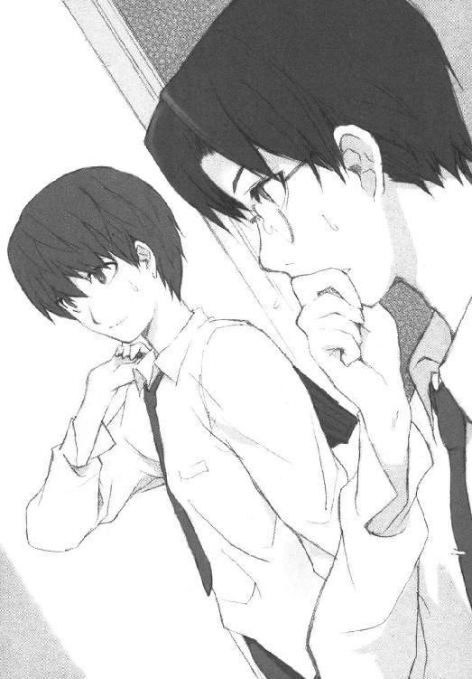
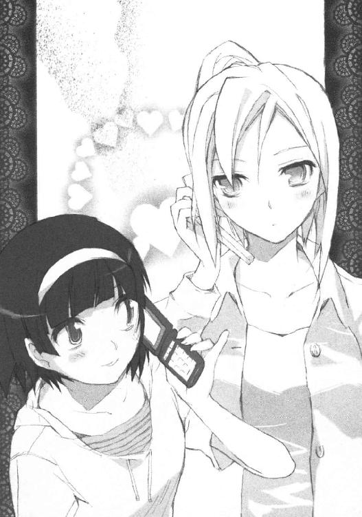

| ROOM NO.1301 しょーとすとーりーず･わん ROOM NO.1301短編集 (富士見ファンタジア文庫) | |
| 新井 輝 & さっち | |
| 富士見書房 (2011) | |
ROOM NO.1301
しょーとすとーりーず・わん
新井 輝

富士見ファンタジア文庫
本作品の全部または一部を無断で複製、転載、配信、送信したり、ホームページ上に転載することを禁止します。また、本作品の内容を無断で改変、改ざん等を行うことも禁止します。
本作品購入時にご承諾いただいた規約により、有償・無償にかかわらず本作品を第三者に譲渡することはできません。
本作品を示すサムネイルなどのイメージ画像は、再ダウンロード時に予告なく変更される場合があります。
本作品は縦書きでレイアウトされています。
また、ご覧になるリーディングシステムにより、表示の差が認められることがあります。
口絵・本文イラスト さっち
そのいち 僕と綾さんと素敵な思い出（前編）
白衣の綾が倒れていた。
と言っても、健一が幽霊マンションの十三階を目指している途中で倒れている綾を見つけるのはそう珍しいことでもなかった。なにせ彼女は自分の加減というのが苦手なのだ。ついつい作業に集中して何も食べずに三日とか四日とか過ごしてしまったりする。
「綾さん......大丈夫ですか？」
だから健一はお腹が空き過ぎて力尽きてしまったのかなんて軽く考えてみたが、どうもよくよく観察してみるとちょっと違うのがわかってきた。
「......あのぉ？」
綾は六階と七階の間の踊り場に仰向けに倒れていた。しかも大の字。これが砂浜や草原なら空でも見て楽しんでるのだろうと思うところだが、ここはあいにく屋内。しかも移動途中の場所に過ぎない。
「えっと......綾さん？」
まず仰向けというのが、どうもいつもと違うような気がした。食料を求めていた途中で力尽きたなら、おそらくうつぶせに倒れるはずだ。しかし今日の綾はどうやら上に向かっている最中に足を踏み外して、思いっきり後ろに落ちたということらしい。
「......完全に気を失っているみたいだな」
そこまで考えが至ると、今回はいつもとは違って危機的状況ではないかと思えてくる。
「救急車を呼んだ方がいいのかな......でも、ここって誰も来れないはずだから......運び出さないといけないんだよな......」
健一は混乱する自分を感じながら、それでも落ち着こうと深呼吸をすることにした。
もしかすると一分一秒を争う事態かもしれない。でもだからって焦ってもしょうがない。健一はまずは呼吸を調え、もう一度、綾の方を見た。
「......ん」
その視線の前で綾の胸が動く。健一と同じく綾も深呼吸を始めたのか胸が上下に揺れる。
「綾さん？」
どうやら意識を取り戻したらしい。
「えっと......」
健一の声に応えるように綾は目を開いて、それから倒れたまま目をぐるぐると回す。健一を探しているらしい。
「大丈夫ですか？」
その様子がなんとなく普段と違ってる気がして健一は妙な不安を覚える。
「はい。多分、大丈夫でーす」
そして綾が妙にハイテンションにそんな返事をする。
「多分って......」
健一はその返事に内容もあって、思わず突っ込んでしまう。
「私、お医者さんじゃないですから、詳しいことはわからないですよー」
「......まあ、それはそうですけど」
健一はそう呟きながら、やっぱりなんか変だなと思う。綾が変なのはいつものことだが、なんだか変さが違うというのか......綾と話しているような気がしない。
「とりあえず、大丈夫なら立ってくださいよ。ここに寝てると八雲さんたちがびっくりしますから」
それでも健一はそういうことは後で考えようと頭を切り替えると倒れている綾に手を差し伸べようとする。しかし綾はそれに不思議そうな顔をして、それから健一の顔を見た。
「あのぉ......八雲さんって誰でしょー？」
そしてなんだか妙な質問をしてきた。
「......えっと」
健一が答えに窮していると、そこにさらに綾が質問をしてきた。
「というか、あなたはどなたですかー？」
「は？」
健一は信じがたい質問に言葉を失う。しかし綾の方はさらに不思議そうな顔をして、また信じられない質問を口にした。
「それより何より、私は誰なんでしょー？」
「えっと......」
健一は綾の質問にどう答えたものかと考えてしまう。
健一が知るかぎり、彼女は桑畑綾だった。世界的にも有名な造形家でいつもパンツの上に白衣を着ている長身の女性。化粧とか身繕いとかほとんどしないが、それでもかなりの美人だとわかる。そんな女性だ。健一は綾に似たような女性を見たことはないし、双子の妹がいるなんて話も聞いたことはない。
だからきっと、目の前の女性は桑畑綾なのだ。そこに疑問を持っている彼女の方がおかしい......はずだ。
「記憶喪失ってやつかな」
健一は自分の記憶をさかのぼり、そんな言葉に思い当たる。何かのショックで一時的に記憶が混乱するというやつかも知れない。綾は思いっきり頭を打ったようだし、それが原因でちょっと記憶がおかしくなっているのかもしれない。
「私、キオクソウシツって名前なんですか？ 変わった名前ですねー。どんな字を書くんですか？」
しかし綾は健一の独り言を自分への返答だと思ったらしい。
「いや......その、それは名前じゃないです」
「あ、そうなんですかー。私もそれはちょっと名前としてどうなんだろうなと思いました」
「......ですよね」
健一はそれでまだ倒れっぱなしでニコニコしている綾を見ながら、やっぱりとりあえず助け起こすことにする。
「まずは１３０１に行きましょう。色々と話さないといけないことがありそうなので、落ちつける場所の方がいいかなと思うんですが」
「あ、はい、そうですねー」
綾はそう言うとすっと上半身を起こした。ずっと寝ているので起きれないのかなと心配していたが、なんだかいつもより元気そうだ。
「じゃ、詳しい話は......」
それで安心して健一が手を伸ばすと、綾もそれを握り返そうと手を伸ばしてきた。
「......え？」
しかしその途中、小さく声を上げて綾の動きが止まった。綾の表情も引きつって固まり、目だけが動いて彼女の腕を何度も往復する。
「ど、どうしたんですか？」
何か異常事態でも起こったのだろうかと健一は綾を見るが、外側からではなんなのかわからない。行動と表情以外は普段の綾と何にも変わらないように見える。
「わ、私......な、なんて格好しているですかー？」
綾は大きく叫んだかと思うと伸ばしてた手を引き寄せて、両腕を胸を隠すように組んだ。
「えっと......」
健一はそれでいつもと何が違うんだろうかと思って、綾の服装を見るのだが普段と変わるところはどこにもない。違うとしたら綾の顔だ。
しかしそこが綾にとっては一番大事なことだったのかもしれない。見る見るうちに真っ赤になっていく顔を見ながら、健一は本当にどうしてしまったのだろうかと思う。しかし答えが出る前に、健一の思考は吹き飛ばされる。
「いや───────────────────────────────！」
そんな耳をつんざく悲鳴が響いて、健一は今度は自分が意識を失う番かと思った。
「こっち見ないでくださいね......」
「はい」
健一は綾を彼女の部屋に案内しながら、他人事のように頭の片隅で考え事をしていた。
記憶喪失というよりは別人になってしまったと考える方がわかりやすそうだった。理屈はよくわからないが、綾は自分や刻也たちを知らない別の誰かになってしまったのだ。
だから自分のことがわからないし、普段通りの格好が恥ずかしくてしょうがない。そういうことらしい。まあ、なんでそうなってしまったかはともかく、綾の格好が恥ずかしいというのは疑いの余地はない。
なにせ、下着はパンツだけで、上着は白衣だけなのだ。まともな女性ならそんな格好で人前に出てこようとは思わないだろう。そういう意味では恥ずかしがっている理由はよくわかるのだが......どうも綾がそうなっているというのがしっくり来ない。
「ここが綾さんの部屋です」
そして健一は十三階の四号室の前で立ち止まった。特に表札など出ていないが、そこが綾が普段暮らしている部屋であることを健一は知っている。
「......入っちゃっていいんでしょうか？」
でも当の綾は知らないらしい。
「まあ、綾さんの部屋ですし......いいと思うんですが」
そうは言いつつわざわざ確認されると良くないことなのかもしれないなんて思ってしまう。なんだかそういうところ、本当に自分は他人に影響されやすいのかなと感じる。
「鍵......とかは？」
綾はそう言いながら、健一の後ろでポケットを探り始めたようだった。
「多分、かかってないと思いますよ」
しかし健一はきっと必要ないだろうと思って、試しにドアノブを回してみる。
そして思った通り、ドアはあっさり開く。
「不用心ですね......」
そしてその状況に後ろで綾が本当に他人事のように呟くのが聞こえた。
「まあ、綾さんはそういう人ですし......」
健一はやはり別人のようだなと思いながら、目をつぶると綾に道を譲る。そしてそれに気づいたのか綾は彼の前を通り過ぎながら、また変なことを呟いた。
「そうなんですか......それは勉強になります」
○
「......何してるの？」
そう尋ねてきたのは冴子だった。まあ、自分が綾の部屋の前で待っていたら、それは変だろうと健一は思う。
「いや、綾さんが階段から落ちて頭を打ったみたいで」
健一はそこまで言ってから、後はどう説明したものかと思った。頭を打ったらしいのは単なる事実だが、それ以降はほとんどは推測というか想像というかかなりあやふやな話だ。
「......大丈夫なの？」
しかし冴子はその躊躇を綾がひどいことになっているという意味と取ったらしい。
「意識は戻ったし、元気なんだけど」
「けど？」
「なんか変なんですよ」
「......変って？」
「いや、正確には変じゃないのが変というかですね。すごく普通なんです」
「......それって何か問題なの？」
冴子は何がなんだかわからないという顔をする。健一もまあそうだろうなあと思うが、自分でもよくわかってないのでうまく説明することができない。
「どうもショックで別人になっちゃったみたいなんですよ。それですごく普通になって」
「......えっと、それは綾さんが綾さんっぽくなくなったってこと？」
「そ、そうですね」
「それは......問題かな」
「で、白衣しか着てないのが恥ずかしいってことで......ここに着替えがあるはずだからと連れてきて、出てくるのを待っているところなんです」
「......まあ、普通に考えたら恥ずかしいわよね、あの格好は」
冴子は考えたような顔を少しだけする。
「とりあえず、私が様子を見て来た方がいいかなって思うんだけど」
「......ああ、そうですね。僕が行くとまた悲鳴を上げられちゃうかもしれないし」
「悲鳴？」
「あ、いや、別に変なことをした訳じゃなくてですね......」
「意識が戻ったら恥ずかしい格好をしてたのでびっくりしたってこと？」
「あ、そんな感じです」
「ということは、綾さんは絹川君のことを覚えてないの？」
「覚えてないというか......知らないみたいでした」
健一は自分でも変な言い方だなと思うのだが、冴子はそれを普通に受け止めたらしく、また少し考えたような顔をして小さく呟く。
「......じゃあ、私のことも知らないのかな」
「と思いますよ。八雲さんのことも知らなかったみたいですし」
「だったらいきなり入っていったら驚かせちゃうかな......」
「かもしれませんね」
健一は順調に会話が進むのになんだかひどく違和感を覚えてしまう。まともじゃない話をしているはずなのに、なんでこんなに冴子はちゃんと理解してくれているのだろうかと考えずにはいられない。
「......もう少し待った方がいいかな」
しかし冴子はそんな健一の気持ちには気づかないのか綾の心配をしているようだった。
「あんまりびっくりさせるのもよくないですよね」
健一はそれでさっきの綾の悲鳴を思い出す。またあんな悲鳴を上げられた日には、今度は冴子が倒れてまた別人のようになってしまうかもしれない。
「......あのぉ」
しかしそんなことを心配する必要はなかったらしい。綾が１３０４のドアを開けて、そのすき間から申し訳なさそうに顔を見せたのだ。
「あ、着替え終わりました？」
それに気づいて健一が尋ねる。
「い、一応......ですけど。ちょっとどこに服があるのかわからなくて、その辺にあったのを着ただけなんですよー」
綾がそう言いながら着ていたのは、以前、健一が綾と買ってきた服だった。服を全然持っていない綾のために買ってきたグレーのキャミソールにマリンブルーのＴシャツ。どうやら綾のお気に入りらしく、分かりやすいところに置いてあったらしい。
「......なるほど」
「綾さんってこれしか服を持ってないんですかね？」
綾の話なのに、綾がそんなことを尋ねてくるのはやっぱり変な気がしてしまう。
「いや、けっこう持ってるはずなんですけど」
健一はそしてこの服を着た綾と一緒に帰ってきたことを思い出す。あれからあんまり着ていた感じはしないが、持ち切れないほど買ってきたのだから、他の服もどこかにはあるはずだ。しかしどこにあるかまでは健一は知らないので、それで困って冴子の方を見ると、彼女もなんだか困ったような顔でこっちを見ていた。
「あ......えっと、こちら、有馬冴子さんです」
健一は慌てて、綾に冴子のことを紹介する。これで冴子のことだけ綾が覚えていたら間抜けな気もするが、それはやっぱり無用な心配だった。
「どうも、はじめましてー」
綾はにこやかにそんな挨拶を口にする。
「は、はじめまして」
冴子もちょっと戸惑った顔をしたが、それでもすぐに冷静さを取り戻したらしい。
「服のことなんですけど、前と変わってなければ、どこにあるかわかると思います」
冴子はそう言って話題を戻した。
「そうなの？」
「ちょっと前に一緒に整頓をしたので、そのままなら」
冴子はそんなことを言ったが、健一はどうもそれはにわかには信じがたかった。
噓をついているというわけではなく、一緒に整頓という言葉から感じるそれとはきっと違うだろうという気がする。放置されていた服を見るに見かねて冴子が整理したとかそんな感じに違いない。
「あ、そうなんですか。じゃあ、ちょっと教えてください。私の部屋らしいんですけど、そんな気が全然しなくて、あんまりいじり回すのもどうかなーって」
しかし綾の方は当然と言えば当然だが、そのあたりになんの疑問も持たずにほほ笑みながらそんなことを口にする。
「じゃあ......とりあえず私に任せてくれる？」
冴子は綾から健一の方へと視線を移し、そう尋ねてきた。
「あ、お願いします」
健一はそれはそれでちょっと申し訳ないななんてことも思ったが、冴子はそれを察したのか念を押すようなことを口にする。
「こういう時はやっぱり女同士の方がいいでしょ、きっと」
「ですね」
なので健一はここは冴子に従った方がいいのだろうとその場を去ることにする。
「じゃ、僕は１３０１の方にいますんで」
「うん。じゃあ、綾さんが着替えたら、そっちで」
冴子はそう言うと健一に手を振って、綾と一緒に１３０４へと消えた。
○
「......大丈夫かなあ」
１３０１で一人座っていると、自然とそんな言葉が口を出た。しかし冷静に考えてみるとなんのことを心配しているのか自分でもよくわからない。
そもそも何が問題なのかという話もある。冴子ならちゃんとやってくれるだろうし、綾の変化もきっと一時的なことだ。とりあえず暴れて困るとかそういうわけでもないし、まあ、そんなに心配するようなことでもないのかもしれない。
「ごきげんよう、絹川君」
そこにすっとドアをあけて刻也が入ってきた。八雲刻也。長身で眼鏡をかけた健一のクラスメイト。そして１３０２に住む、通称・管理人。健一より以前からこの不思議な十三階に住んでいる人間でもあった。
「あ、こんばんは、八雲さん」
健一は我に返り、慌てて挨拶をするが、刻也はなんだかけげんそうな顔をした。
「......どうかしたんですか？」
「いや、有馬君が先に帰っていたようだったので、いるんじゃないのかと思ってたんだが......部屋の方だろうか。まあ、そうだろうな」
刻也は自分でそう言いつつ、なんだか一人で完結してしまったようだった。
「いや、有馬さんは今、綾さんの部屋にいるんですよ」
しかし刻也の推測と現実は違う。それを健一は説明する。
「綾さんの部屋にかね？」
「ちょっと綾さんが階段から転がり落ちたみたいで」
「......それで看病しているのかね？ 綾さんの部屋に救急箱があったとは意外だな」
「いえ、そういうわけでもないんですよ」
「では、どうして綾さんの部屋に？」
「綾さんは落ちたショックでですね、どうも僕らのことや自分のことを忘れちゃったみたいなんですよ」
「......一過性全健忘というヤツかね？」
「え？」
「俗に言う記憶喪失のことだが」
「いや、最初はそうかと思ったんですが、どうも別人みたいになってしまったみたいなんです」
「別人みたいにと言うと......まさかちゃんと話の通じる人間になったとか言うのかね？」
刻也はそれならどんなにか素晴らしいだろうと思ってるかのようだった。まあ、刻也は綾の奔放さにはいろいろと不愉快な思いをさせられているみたいなのでわからないでもない。
「いや、まさにそんな感じで。自分の服装が恥ずかしいって着替えてるところなんです」
「ほほう」
刻也は短くそう呟くと、なんだか笑ったように見えた。やはり綾が自分の言う通りにちゃんとした格好をしないことには相当に不満を感じていたらしい。
「で、まあ、自分の部屋という感じがしないので落ち着かないってことだったので、有馬さんが手伝っているところなんです」
「なるほど......しかしとりあえず頭を打ったというなら医者に診てもらった方がいいのではないだろうか。記憶喪失うんぬんに関して力になってもらえるかはわからないが、脳内で出血などしていたら命に関わる」
でも刻也は刻也なりに綾のことを心配してはいるようだった。
「それはそうですね......かなり思いっきり打ってたみたいですし」
「そういうことなら、念のために行くように勧めよう。普段の綾さんだったら自信はないが、話のわかる相手ということなら私から話してもいい」
「......そうですね」
健一はそう言えば普段は自分が説得する担当だなあと思い出す。それが何を意味するのかははっきりとはわからなかったが、そうでない現状に健一は何だか座りの悪さを感じる。
「お待たせしましたー」
そこに明るい声が響いた。綾が着替えを終えてやってきたらしい。そう頭では理解するが、それでも一瞬、健一は彼女が綾ではないような気がした。
確かにかなり外見が違った。結局、買ってきた時くらいしかかけていなかった眼鏡をして、開襟のパリッとしたブラウスを着ている。化粧こそしていなかったが、髪も少しブラシをしたらしく普段より少しボリュームを抑えた感じになっている。
しかし健一がなんだか違うなと感じたのはきっと、そういう外見のせいだけではなかった。いつものなんだか安らぐような雰囲気を感じない。そのせいだ。
「あれ、また知らない人が......いますね」
しかし綾はそんな健一の戸惑いと関係のない驚きを口にする。
「あ、こちらが八雲さんです。八雲刻也さんです」
それで健一は冴子の時と同じようにもう知らないのが当たり前のように説明をする。
「はじめましてー」
それに綾はやはり同じように、にこやかに挨拶をする。
「............」
しかし刻也はそれに何も答えず綾の方をじっと見たままだった。
「......なんか、変ですか？」
それで不安になったのか綾が自分の格好を確認しながら、刻也に尋ねる。
「あ、いや......失礼。全うな格好をしているので驚いて言葉を失っていました」
刻也がそれで我に返って、そんなことを口にする。綾はそれに驚いた顔を見せる。
「......あははは」
そして無言になったかと思ったら、今度はお腹を抱えて笑いはじめる。
「そ、そんなおかしなことを私は言いましたか？」
「なんだかツボに入っちゃって......すみません。まじめな話だったのに」
綾は笑うのを止めると、そう言って小さく頭を下げる。そんな反応に刻也はやはり戸惑った様子だった。
「......いやまあ、自分でもちょっと間が抜けていたような気がしますので」
「いえいえ。こっちこそ。よくわからないですけど、私は本当は皆さんのこと知ってるはずなんですよね？ しかも私は普段はこんな格好しない人間みたいですし」
「ま、それはそうなんですが」
刻也は普段と違う綾のノリにかなり苦戦を強いられている様子だった。
「二人も着替えてきたらどうですか？」
そこに綾の後ろにいたらしい冴子の声が響く。
「......あ、そうですね」
言われて見ると健一は学生服のままだった。綾が着替えている間になんで自分の部屋に戻らなかったのだろうと思う。
「確かに......いつまでも制服というのも問題だな」
刻也の方を見ると、彼もやっぱり制服のままだった。いつもは朝でもちゃんとした服装をしている彼にしては珍しい状況のような気もした。
「じゃあ、僕らはちょっと着替えてきます」
健一はそう言いながら冴子もまだ学生服のままだと気づく。
「......私はまだちょっと綾さんと話したいことがあるし、後でいいわ」
「わかりました」
そして健一はまあ、一緒に戻って着替えるというのも変かなと思う。
「では、また後ほど」
そしてその辺りをどう思ったのか刻也も席を立つと、健一と一緒に１３０１を出ていくことにしたようだった。
「絹川君」
そして外に出て扉を閉めた時、刻也が健一の名前を呼んだ。
「なんですか？」
「綾さんはああしていると随分と奇麗なのだな」
刻也のそんな言葉に健一はどうコメントしたものかと思う。なんというか刻也がそういう風に女性を評価するというのは初めて聞いたかもしれない。
「そうですね......僕も初めて見たから驚きました」
だから健一は無難にそれだけ答えると、１３０２の前で刻也と別れた。
○
着替えて１３０１に戻ってくるとソースの焼けた美味しそうな匂いが漂っていた。どうやら綾がほっとしてお腹が空いたということで、冴子が焼きそばを作ったということらしい。
「絹川君も食べる？」
キッチンの方から、まだエプロンをしたままの冴子が尋ねてきた。
「夕ご飯もすぐですし......ちょっとだけ」
健一はそう答えて、運ぶくらいはしようとキッチンの方へと歩き出す。
「そう言いながら食べるのね」
でも健一の返事はすでに予想済みだったのか冴子は皿に盛った焼きそばを持って、キッチンを抜け出し、食卓の方へと歩き始める。

「私もちょっとだけ食べようかなって」
そして健一より先に食卓にたどり着くと、そう言って笑った。
「なるほど。二人で半分こというわけですね」
健一は冴子が少し機嫌がよさそうだなと感じて、自分も座ろうとするが、そこでさてと立ち止まってしまう。冴子と綾が向かい合って座っていたからだ。空いてる席はそれぞれの隣。普段なら冴子が綾の隣に座ってる状況のような気がするが......やはりちょっと冴子も戸惑っているということなのだろうか。
「隣、いいですよー」
そんな空気に気づいたのか、綾が健一に話しかけてきた。健一は予想外のその言葉に綾の方をじっと見てしまう。
「どうしたんですか？」
それを不審に思ったらしい綾が尋ねてくる。
「あ、いや、そんなことを綾さんが言い出すなんて......と驚いただけです」
正直にそう答えた健一に綾はやはり不思議そうな顔をする。
「そんなに変なこと言いました？」
「いや、別に変じゃなくて......」
「ということは......綾さんがいつも変なことを言ってるってことですかー？」
「ま、そうなりますかね」
確かにその通りなのだが、当の本人に言われるとなんだか賛同しかねる。
「あ、そうかー！」
なのに綾は健一と冴子が醸し出す微妙な空気に別の理由を見いだしたようだった。
「......なんですか？」
なぜだか目を輝かせている綾に健一はちょっと嫌な予感を覚える。
「二人のこと邪魔しちゃ悪いわよねー」
そして予想通りというか、予想外というかとにかく違うところに球が飛んできたという感じの状況になったのを健一は感じる。
「......えっと」
「だって絹川君と有馬さんは付き合ってるのよね？」
それが当然という顔で綾が尋ねてくる。
「付き合ってませんよ」
「え？ 本当に？」
驚いた様子で綾は冴子の方に確認を求めた。
「付き合ってませんよ」
冴子は健一と同じ言葉で、綾の期待を否定する。
「でも、ここで同じ部屋で暮らしてるよね？」
綾が健一を見て、それから冴子を見る。
「同じ部屋と言っても、３ＬＤＫですから」
それで冴子が淡々とそう答えた。
「......でも二人ともお年ごろなんだし」
綾は理解できないという顔でそんなことを呟く。まあ、確かにその辺りはそんなに外れてもいないかもしれない。お年ごろだからではないが、健一と冴子は毎日のように体を重ねているのは事実ではあった。
「絹川君にはちゃんと彼女がいますから」
冴子がさらにその事実を口にする。
「そうなの？ じゃあ二人はどういう関係なの？ 兄妹というわけじゃないでしょ？」
「まあ、血はつながっていないですけど、それに近いかもしれませんね」
「......兄妹に近い？」
綾はどういうことなんだろうと悩んでいるようだった。まあ、健一にだって自分と冴子の関係を的確に語る言葉は思いつかない。家族ではないし、恋人でもないし......本当になんなんだろうと思う。
「ま、いいかー。付き合ってないなら、ここにどうぞ」
しかし綾はそれ以上の追及は放棄したようだった。結局、さっきまでの話題はなかったことにして、健一に隣に座るように言う。まあ、立ち話をしてて焼きそばが冷めるのもどうかと思うし、健一は言われた通り座ることにする。
「そう言えば、八雲さんの分はいいんでしょうか？」
それで、健一はまだ戻ってきてない刻也のことを思い出した。
「八雲さんはあんまり間食は好きじゃないみたいだから大丈夫じゃないかしら」
冴子は一応、その可能性も考えていたようだった。言われると健一もそんな感じがするのだが、そもそもこうやっていつも冷蔵庫に焼きそばを補充しているのは刻也だったりするのを考えると、その冴子の意見がどこまで正しいのかはちょっと疑問だった。
「ま、そんな感じですよね」
でも健一はきっと冴子が尋ねれば、刻也は必要ないと言うのだろうと思う。そしてそうである以上、やはりいらないという判断で良いのだろうと考えることにする。
「そう言えば、刻也君は彼女いるの？」
そんな二人の話に綾が割り込んでくる。
「え？」
それが唐突だったので、健一も冴子も答える言葉を失う。
「......あれ、また変なこと言いました？」
「いや、その......なんかそういう話題ってのが珍しい気がして」
健一も自分でもなんでそこまで驚いたのだろうかと思ってしまう。
「さっき、二人の話を聞いたから、残りの一人のことを聞いたんだけど」
「そう言われると、全然、変じゃないですよね」
「と、思ったんだけど、やっぱり綾さんがそういうキャラじゃなかったのかな」
「というか、綾さんは八雲さんのこと、ずっと管理人さんって言ってましたし」
「彼が管理人さんなの？」
「いや、そういうわけじゃないんですけど、八雲さんが共同生活のルールに厳しい人なんで、それで綾さんは管理人さんって呼んでたんです」
「なるほどー」
綾はそれでひどく感心したようにこくりこくりと二回うなずいた。健一からすると自分で言い出した話じゃないのかという気もしたが、まあ、この目の前の綾はいつもの綾じゃないわけだから......まあ、そういうことなんだろうと思うことにする。
「それじゃ、私も着替えてくるから」
そうこうしている間に冴子は焼きそばを食べ終えたようだった。半分ずつと言ったが、どうやら随分と冴子の方が少なかったようだ。そして冴子はそう言いながら席を立ち、キッチンの方へと向かおうとする。
「まとめて片づけておきますよ」
それに気づいて健一はそう告げる。
「......いいの？」
冴子は立ち止まり、そんなことを尋ねる。それは健一に対してと言うよりはまるで自分自身へのもののように感じられた。
「作ってもらったから片づけくらいはしようかな、と」
だから健一はそんな『言い訳』を用意する。
「そうね......」
冴子はそれでも少し迷ったようだった。でも最後はこれ以上、健一に気を遣わせないことに決めたらしい。箸を整え直し、それからそのまま部屋を出ていった。
「ふーむ」
健一はそんな冴子の後ろ姿をじっと見ていたらしい。ふと我に返ると隣で綾がじーっとこっちを見ていた。
「......なんですか？」
「付き合ってるわけじゃないってわりに、随分と仲がいいなって思ったんですけどー」
「まあ、その......兄妹みたいなものですから」
健一は反論しがたいその状況に冴子の言い分を引っ張ってくる。しかしそれを言ってから健一はふと根本的な疑問を感じた。
「......というか、仲いいように見えました？」
「ん？」
「僕と有馬さんは仲よく見えます？」
「見えると思いますけど？」
綾は何を当たり前のことを聞くんだろうと不思議そうな顔をする。
「そうなのかな......」
でも健一の方はと言えば、実際のところどうなのかなと思ってしまう。さっきのだって仲がいいというよりは、気の遣いあいだったと思うし......。通じ合ってるという程のことかと言えば、やっぱりそれも違う。
「仲が悪い方がいいんですか？」
「そういうわけじゃないんですけど......仲がいい自信がないというか」
「そういうものですかね。十分、仲が良さそうに見えましたけどー」
「......じゃあ、いいです」
健一はなんとなく話しててもきりがないと思い、焼きそばを食べることにする。綾もそれにならって暫くは二人とも食事に集中した。
「............」
そうこうするうちに健一は、食べ方も綾は普段と随分と違うなあと思った。いつもはもっと音を立てて、それこそ子供のようにずるずると食べているイメージだったが、今日の綾は本当に大人の女と言う感じで、ゆっくりと静かにそばを口に入れていく。
「......なに？」
そんな様子を見られているのに気づいたのか綾が健一の方を見る。
「いや、その食べ方が......上品だなって」
それに健一は素直に思っていたことを口にする。
「......上品？」
「まあ、比較の問題かもしれませんけど」
「それは綾さんは下品な食べ方をするってことー？」
「......比較の問題ですけど」
健一は苦笑いを浮かべながらそう答えて、綾はそれににっこりと笑う。
「で、ちょっと考えたんですけど」
そして綾は何か別の話題を切り出し始めたようだった。
「なんですか？」
「私のことは綾さんじゃないってことにするっていうのはどうでしょうか？」
「......と言いますと？」
なんかかなり突飛な意見が出てきた。この辺はやはり綾は綾ということなのだろうかと健一は思ったが、どうもそういうわけでもないらしい。
「どうも私のことを綾さんだって思ってると皆さん、戸惑うみたいなので、だったらもう別の人だって思ってもらった方がいいかなと」
「なるほど」
なかなか考えているなと健一も感心する。
「というわけで、私のことは綾子さんということでどうでしょう？」
でも、名前に関してはあんまり考えてない気がしてしまう。
「......綾子さんですか？」
「あんまり綾さんから離れるとそれはそれでわかりづらいかなあと思ったんですけど、私、名前を付けるのとかちょっと苦手なんですよね」
「子だと有馬さんもそうだから、ちょっと変えた方がいいんじゃないですかね」
「なるほどー。じゃあアヤエとか」
「うーん。なんか随分と年配の方のような気が」
「じゃあ、アヤカとか」
「ちょっと上品すぎるかなあ......あ、いや、十分、上品ですけど」
「じゃあ、アヤナとか」
「ナはちょっと双子でいるんで」
「そうなの？ じゃあ、アヤヨとかは？」
「......うーん」
健一はそれはそれでどうかなと思ったが、どうもあいうえお順で提案しているらしく、これ以上はもうら行とわ行しか残ってないと気づくともうこの辺で納得していくのがいいような気がしてきた。
「アヤヨでいいんじゃないでしょうか」
「いいかな？ じゃあアヤヨで。漢字は......夜でよと読むってことで、綾夜で」
「夜ですか」
それでは千夜子っぽいなあとも思うが、どうも本人がけっこう気に入ってそうなので、健一はその辺は譲歩することにした。
「夜の綾さんとか考えると、ちょっとエッチな感じかなあ」
「......まあ、そんな風には考えないと思いますけど」
「じゃあ、綾夜で。私のことはこれから綾夜さんって呼んでくださいねー」
なんだかすごく恥ずかしい提案をされたような気がしたが、本人がひどく嬉しそうなので健一は素直にうなずくしかない。
「はい」
「で、私と綾さんは別人ということになったところで聞きたいんですけどー」
そんな健一に綾夜は間髪入れず、また新しい話題を振ってきた。
「はい。なんですか？」
「健一君と綾さんはどういう関係だったんでしょー？」
「どうって......」
健一はまた微妙な質問をしてきたなと感じた。まあ、冴子との関係を聞かれるよりはまだすっきりとしているかもしれないが......普段より奇麗な顔でマジマジと見られながら聞かれるとちょっと困ってしまう。
「仲は良かったんですか？」
健一が答えづらそうにしているので綾夜は少し質問を変えたようだった。
「......多分」
「多分って随分と弱気ですね」
「僕はそう思ってましたけど、綾さんの方がどうだったかは想像するしかないですし」
とか言ってはみたが、さすがに綾が実は自分のことを嫌いというのはないだろうという気はした。何かというと『エッチしよう』とか言うのもからかっているというより、かなり本気っぽいし、そんなことを言う相手は他にいないと思う。
「まあ、これは私の想像ですけど、多分、綾さんは健一君のこと好きだと思いますよ。だって健一君可愛いじゃないですか」
綾夜はそんなことを言って明るく笑う。
「......そ、それはどうも」
健一はやっぱり本当に別人みたいだなと思いながら、照れ臭く感じる。
「健一君ってモテるでしょー？」
「どうですかね......あんまりそういう気はしてないんですけど」
健一はそう答えてみたものの、ちょっと前と今ではその辺りも違っているのかなあと思ったりもする。
「とか言いつつ、女の子をたくさん泣かしてるんでしょ？」
「泣かしてませんよ......多分。というかですね、早く、焼きそばを食べましょう」
「あ、誤魔化しましたね。じゃあ、私は食べますから健一君は話をしてください」
「......はい」
健一はそう答えて綾夜が食べる姿を見ながら、何を話したものかと考える。
「初めて綾さんに会ったのは六月のことだったんですよ」
でも考えてもわからないので、最初から順に話すことにする。
「六月ですか」
綾夜は食べる合間を縫ってそんな合いの手を入れる。
「で、その時は綾さんはこのマンションの前で行き倒れてたんです」
「行き倒れ......ですか」
「綾さんはちょっと加減というのが苦手な人で作業に熱中してると時間が経つのを忘れてしまうらしいんですよ。で、その日も食事をするのも忘れて作業に没頭してて、気づくともう歩くエネルギーもまともにない状態だったから、何か食べ物を買いに行こうとして途中で倒れてたんです」
「......ほむほむ」
「そこに僕が通りかかって、通りにある自販機でスポーツドリンクを買って飲ませて、それから......菓子パンを買ってきたりして、綾さんを助けたんですよ」
「なかなか衝撃的な出会いですね」
「ああ、そうそう。綾さんはチョココロネが好きらしくて、僕が買ってきたのに入っててすごく喜んでました」
「チョココロネって、あのクルクルねじれてるのですよね？」
「ええ、なんかモーメントがどうこうとかエネルギーが集中して格好いいとか」
「パンを好きな理由がエネルギーが集中してて格好いいってのは初めて聞きました」
綾夜はそう言っておかしそうに笑う。でも健一からすれば言ったのは綾であって、それを綾夜に話して笑われるというのはなんだかくすぐったい。
「他にも、あんパンの面白いところはへその部分だけとか言ってました」
「......面白いんですかね、あんパンって」
「まあ、綾さんの意見ですけどね」
健一はそう言って自分は別に同意してないということを示す。それに綾夜は食べながら小さくうなずいたようだった。
「それで助けてくれたお礼がしたいって言われて、綾さんの部屋に連れて行かれて......この十三階の存在を知ったんですよ」
健一は綾の部屋に連れて行かれてどうなったかについては省略した。さすがに綾夜に話すのには抵抗があった。
一緒にお風呂に入るように強制された揚げ句、襲われてしまったなんて......。
「なるほど」
そしてそのことに綾夜は特に興味を示さなかったようだった。
「それからは綾さんが飢え死にしないように時々ご飯を作りに来たりしてました。放っておくと本当にご飯を食べない人なんで、外まで買いに行かなくても済むように作っておいておりたりとか」
「へー。健一君は料理得意だったりするんですか？」
「家では料理担当なんで自然に覚えた程度ですけど。有馬さんがここに住むようになる前は料理というと僕がやってましたね」
「刻也君は料理はしないんですか？」
健一はそう言われて、そう言えば彼が料理をするのを見たことがないなと思う。冷蔵庫に色色と買ってきてたのは彼だったのだし、健一が来る前は彼が自分で料理してたはずだが......実際のところ、その腕前は知らない。
「自分一人の時は作ってたみたいですけどね」
「健一君の方が上手だし任せているって感じですか？」
「多分、そうじゃないかと......すごく下手とかそういうことはないと思うんですけど、八雲さんはバイトや勉強で忙しいみたいだし、僕がやるのは抵抗ないですから」
健一はそう言いながら、絹川家に起こった緩やかな家庭崩壊のことを思い出していた。仕事で忙しい母に代わって自分が料理をするようになったせいで、母は家に帰ってこないようになって......なんだかおかしな方向に進んでしまった。
「とか言いつつ、なんだか不満そうですけどー」
綾夜はそんな健一の感情を誤解したらしい。
「いや、違うんですよ。別のことを思い出しただけです。ちょっと家のことを」
健一はそれでどう話したものかと思う。もっと正確にはどう話さずにすませようとかという方だったかもしれないが。
「なんだか複雑そうですね」
綾夜はそんな空気を感じたのか短く呟いて、あんまり聞きたくなさそうな顔をした。
「まあ、色々ありまして」
なので健一はそれだけ言って、苦笑いを浮かべて終わることにする。
「健一君って高校生ですよね？」
「え？ あ、そうですけど」
「なのに、大人ですよねー。話聞いてる限りだと、綾さんの方が年上なのになんだかすごく子供に感じますよー」
「......まあ、でも大人っぽいところもあるんですよ、あの人も」
「そうなんですか？」
綾夜はそう言って、さてどこなんだろうと考え、にこっとする。
「体とかですか？」
「......違います」
「......それは失礼しました」
綾夜は小さく謝ると、あははと笑う。そういう綾夜は綾に似ている気がした。でもそんな綾夜の顔も少しだけで、すぐに真面目な顔に戻る。
「いつまでこんな状況かはわかりませんけど、私はなるべく迷惑をかけないようにしますから、あんまり心配しないでくださいね」
「......あ、はい」
健一は綾夜の意外な言葉に一応、肯定の返事はしたものの戸惑ってしまう。一番、変化に困惑しててもいいはずの相手からそんなことを言われるとは思ってもいなかった。
「健一君の方から、ここでの生活で何か注意しておいた方がいいこととかありますか？」
なのに綾夜はさっきの言葉を本格的に実行する気であることを、そんな質問で示す。
「......注意しておいた方がいいことですか？」
健一は考えてしまうが、どうもそういうのもよくわからなかった。普段はあんまりそういうのを意識してないというか、意識しなくてもいいのがこの１３０１という場所である気もする。なので考えているうちに別のことを思い出した。
「あ、そう言えば」
「なんですか？」
「念のために病院に行っておいた方がいいんじゃないでしょうか？」
健一は刻也が言っていたことを、綾夜に提案する。
「......ああ、そうですね。頭を打ったんですものね。急いで調べた方がいいですよね」
そして驚くほどあっさりと綾夜はそれを受け入れ、誰よりもその必要性を認識した様子を見せる。これが刻也と綾とのやりとりだったら、確実にもう少しこじれていたはずだ。
「じゃあ、これを食べたら、すぐに行ってきます。残したら悪いですし」
そう言って少し残っていた焼きそばを綾夜は急いで食べ始める。慌てて食べるそのしぐさに健一は綾のことを思い出す。
「ごちそうさまでした」
でも食べ終えて顔を上げた綾夜は、やはり綾夜っぽいキリッとした顔つきだった。
「綾さんは？」
冴子が戻ってきたのは、健一が焼きそばを食べ終えた頃だった。
「病院に行くそうです」
健一はそう答えながら、空になった皿を三枚重ねるとそれを持ってキッチンに向かう。片づけは自分がすると言った手前、冴子に手伝われるわけにもいかない。
「綾さんが一人で......行くの？」
しかし冴子の興味はどっちかというと綾の方だったらしい。
「みたいですね。付き添った方がいいかなあとも思ったんですけど、一人で大丈夫みたいな話だったんで」
「......そう」
冴子はそれで少し考えた風な顔をしたが、椅子のところまで来ると座った。
「綾夜さんってことになりました」
健一はそれで一段落したのかなと思い皿を洗いながら、そんなことを口にする。
「え？」
「綾さんだと思ってるとややこしいでしょうからって、綾夜さんってことにしてくださいって言われました」
「アヤヨ......さん」
冴子はどう反応したらいいのかなという顔をして、健一の方を見る。
「綾さんの綾に夜って書くそうです」
「綾夜......なのね」
「最初は綾子だったんですよ。でもそれじゃあんまりにあんまりだろうって」
「それで綾夜なの？」
「けっこう途中もあったんですけど、あいうえお順でもうかなり最後まで来ちゃったんで、綾夜で手を打ちました」
「よ......だと、かなり苦戦したみたいね」
冴子はその間に提案されただろう名前を想像して少し笑ったようだった。
「最初はアヤエとかで、もう後はしらみつぶしというか」
「それっぽいのは全部試したのね」
「ええ。アヤカとかはちょっといいかなあとも思ったんですけど」
「アヤカ......はいいかな。でも綾夜もけっこういいと思う」
「最初はあんまり良くなさそうな感じでしたけど」
「え？ いや、別に......そのなじまなかっただけよ」
「じゃ、そういうことにしておきます」
健一はそこまで話すとお皿を洗うのに集中する。別にそう汚れているわけでもないので、さっと汚れは落ちて、三枚ともすぐに奇麗になった。
「でも、やっぱり一人は心配じゃないかしら」
健一がタオルで手を拭いてると、そんな冴子の声が聞こえてきた。それで健一は冴子の座っているところへ歩きながら、返事をする。
「......心配ですかね」
綾がって話なら確かに心配だし、自分がついていこうという気にもなるが、綾夜と話してた限りでは大丈夫な気がしていた。だが、普通に考えれば記憶がないも同然の人間のようだし、その辺り、何が起こるかどうかわからないという気もする。
「もう出かけちゃったのかしら？」
冴子はやってきた健一の顔を見て、それを尋ねる。
「もうちょっと前ですからね......出かけちゃったかもしれませんね」
冴子の心配そうな顔を見ると、健一は迂闊だったかもしれないと思えてきた。
「でも、そんなに遠くには行ってないわよね」
「......と思いますけど」
健一はそう答えながら、そもそも綾夜はどこの病院に行くつもりだったんだろうと考えてしまった。綾夜の記憶がどうなっているかどうかわからないが、彼女は外のことをちゃんと認識してたりするのだろうか。
「探しに行ってくるわ」
冴子がそれで立ち上がる。
「いや、僕が探して来ますよ」
でも健一はここは冴子に任せてもいられないと思った。一人で綾夜を行かせてしまったのは自分なのだし......。
「大変、大変ですよー！」
しかし探しに行くまでもなく、慌てた様子で綾夜が自分から姿を見せた。１３０１のドアが勢いよく開いて、その向こうに綾夜が立っていた。
「......綾夜さん？」
健一と冴子がその登場に驚いている前で、綾夜は何が大変なのかを話し始めた。
「すごい大金が部屋に転がってたんですー。きっと数千万、もしかすると一億くらいあるかもしれません。綾さんって実は何か悪いことをしている人なんですかー？」
綾夜は自分が見たものが信じられないという様子で、ドアのところで大声でまくしたてる。さっきまでの落ち着いた大人の女性みたいなイメージは今の彼女からは感じられない。
「それはきっと綾さんのお金です。あの人、お金に無頓着だから」
健一はそんな綾夜とは打って変わって落ち着いた調子でそう答える。まだ出かけてなかったという辺りもあって、心配する必要はなかったなという気持ちにもなる。
「む、無頓着以前に、あんなに大金、普通は持ってないと思うんですけどー」
「綾さんは小さな頃から世界的な造形家だったんですよ。それで錦織さんていう優秀なプロデューサーがいるおかげで、年に何億も稼いでるそうです」
とは言いつつ、健一としても細かい収支は知らない。しかし綾の世話をするだけで年に一千万払うと錦織に言われたことから想像するにそういうことなのだろうと思う。
「そ、そうなんですか。じゃああれは悪いお金じゃないんですねー」
「ええ。綾さんがちゃんと稼いで得たお金です」
「......そうですか。安心しました」
綾夜はそれで大きく深呼吸すると小さく笑って、ゆっくり部屋に入ってきた。
「あんな大金初めて見たので取り乱しちゃいました」
そして恥ずかしかったのか照れたような笑みを浮かべる。
「まあ......驚きますよね。家に無造作に置いておくようなものでもないですし」
健一は綾夜にそう言いながら、ちらと横目で冴子の方を見た。冴子はさっきから無言だったが特に不機嫌ということもなく、突然の展開についてこれなかっただけのようだった。
「これから病院ですか？」
冴子が健一の視線に気づいたのか、やっと口を開いた。
「はいー。朴東病院の方に行ってこようかなーと」
それに綾夜がすごく自然にそんなことを答えた。朴東病院と言えば、けっこう立派な病院だ。比良井からだとちょっとあるが、電車で二駅乗ればすぐの場所にある。そんな病院のことを綾夜がちゃんと知っているというのは意外な気がした。
「一人で大丈夫ですか？」
「はい。場所もわかりますし、何度か行ったことがありますから」
綾夜はそう答えるが、健一は逆に心配になってしまう。場所を知っているというのもそうだが、何度か行ったことがあるという状況を理解できなかった。それはつまり綾がそこに行ったのを綾夜が覚えていることなのだろうか。
「でもやっぱり一人だと心配ですから、僕も一緒に行きますよ」
だから健一はそれを提案した。冴子も心配してたし、そうした方がいいだろう。
「いいですよー。余計な迷惑はかけたくないですから」
しかし綾夜はそれをさわやかに断った。
「でも、頭を打ったわけですし」
「大丈夫だと思いますよ。手がしびれたりとかしてませんし。病院に行くのだって念のためなんですし、そんなことに付き合ってもらうのも悪いですから」
「いや、気にしないください。僕は別に今日は大した用事はないですから」
「でも......私、健一君と一緒だと緊張しちゃいそうですし。あはは」
綾夜はそんなことを言って笑った。でも健一は、綾夜が迷惑をかけるということに過剰に反応しているのかもしれないとも感じた。
「本当、大丈夫ですよ？ ちゃんと一人で行って帰ってこれますから」
「でも......ちょっと心配ですよね」
健一はどうしたものかと思って冴子の方を見るが、冴子の方も困っている様子でこっちを見返してくる。そうなると健一としては自分で何か考えるしかない。
「えっと......僕だと緊張するということであれば、有馬さんと一緒にとか」
自分でもいかにも苦しいなと健一は思うが、それは綾夜ではなく冴子の方から反対される。
「私、病院はちょっと......好きじゃないかな」
「そうなんですか......じゃあ、八雲さんは......どうかな？」
言いかけて、確か今日はバイトじゃなかったかなと健一は思い出す。
「私がどうかしたのかね？」
そこにちょうど刻也が姿を現す。
「いや、綾夜さんが病院に行くというので、誰か付き添った方がいいんじゃないかと」
「綾夜さん？」
「あ、綾さんだと紛らわしいということで、綾夜さんと呼ぶことになったんです」
「......なるほど。で、病院に行くので誰か付き添った方がいいということだったが」
「八雲さんはこれからバイトですよね？」
「うむ。まあ、まだ少しはあるが......病院に寄ってからだと確実に遅刻だろうな」
刻也はそれでじっと黙って考え事を始める。自分の名前が挙がっているということで、健一や冴子では駄目とちゃんと気づいてくれているらしい。
「だから一人で大丈夫ですよー」
皆が真剣に考え始めてしまったところで、綾夜がにこやかにそう告げる。
「でも......やっぱり一人だと何が起こるかわかりませんし」
しかし綾夜の言い分を素直に認めるのには抵抗があった。
「だったら、病院に行くの止めましょうか。皆さんにそこまで心配してもらうほどのこともないと思うんですけどー」
「うーん」
綾夜の理屈は十分に理解できるのだが、健一としてはやはりあれだけ豪快に頭を打ってたのを見たこともあって心配は心配だ。それは冴子も同じらしく、しかしどうしたらいいのかわからず考え事をしている。
「まあ、無責任な物言いかもしれないが──」
そこで口を開いたのは刻也だった。
「綾夜さんが一人で大丈夫ということであれば、大丈夫ではないだろうか。ここは信用して任せてしまっても良いと私は思うのだが」
「ですよねー」
それに綾夜が嬉しそうに同意する。
「ですかね？」
健一は刻也の顔を見て、そう尋ねる。刻也が綾のことでそんなことを言うとは意外な気がした。普段はどうあっても信用しないという空気を発しているのに、綾夜に対しては随分と信用しているという気がする。
「本当に大丈夫ですよ？ さっきは信じられない大金に取り乱しましたけど、意外に順応性が高いですから、私」
そして当の綾夜も刻也からの追い風を受けてかなり上機嫌のようだった。
「だったらいいかな」
それで一番心配してたはずの冴子も納得したようだった。そうなってしまうと健一としても綾夜を信じるしかない。
「でも無理そうだったら、すぐ戻ってきてくださいよ」
なのでそれだけ付け加えることにする。
「はい。了解しましたー」
綾夜はそう言って嬉しそうに刻也の方を見る。
「途中まで一緒に行きます？」
「方角が一緒であれば」
「じゃ、ちょっと待っててください。お金持って来ますから」
そして綾夜はにこっと一同に笑って見せると、また１３０１を出ていく。
「......本当に大丈夫ですかね」
健一は綾夜が見えなくなると、やっぱり不安になって冴子に尋ねる。
「え？」
でも冴子は別のことを考えてたらしく、健一の言葉を聞いてなかったらしい。
「いや、綾夜さんを一人で行かせてしまって大丈夫なのかな、と」
「大丈夫......というか、そうさせてあげた方がいいのかなって思ったんだけど」
冴子は少し自信なげにそう告げて、刻也の方を見た。
「私も同感だな」
そして刻也は言葉でそう答えると、バイトに行く気になったらしく部屋を出ていく。
「では、ごきげんよう。綾夜さんのこと、窪塚君にもよろしく伝えておいてくれたまえ」
「あ、はい」
そして健一はそれでシーナのことを思い出す。シーナに綾が別人のようになってしまったと伝えるというのは......なんだか本当に奇妙な話のように思えた。
そのに 僕と綾さんと素敵な思い出（後編）
「二重人格ねえ......信じられねえな、そういうの」
綾夜の話を聞いたシーナがそんなことを言うとは想像していなかった。
「そ、そうなの？」
だから健一は思わず、聞き返してしまう。
「そういうのってドラマとか漫画の中の話だろ？」
「そうなのかな。なんとなくだけど、シーナはそういうの詳しい気がしてたんだけど」
そう言われてしまうと健一としてはそう言うしかない。なにせ、健一はシーナ自身がそうだろうと思っていたからだ。
学校では評判の双子の美少女の妹の方、窪塚日奈。しかし健一の前では天才的な歌唱力を発揮する謎のシンガー、シーナなのだ。性格も日奈はかなり人見知りするタイプのようだが、シーナは気さくに誰とでも仲良くするタイプに見える。これこそ二重人格の典型だと思ってたのだが......違うらしい。それとも単に本人には自覚がないのだろうか。どうもそれも違うような気がする。
「なんだよ、それ。失礼しちゃうぜ」
そしてシーナはと言えば、なんだか自分が二重人格に詳しいような人間だと思われることがたいそう不満なようだ。
「......ごめん。そんなに怒られるようなこととは思ってなかった」
「まったく。健一は時々、なんか信じられないこと言うよな」
「だから、ごめんって言ってるのに」
健一は謝り続けるが、それでもシーナの不満は消えてはくれないようだった。
「なあ、有馬もそう思うよなあ？」
そしてシーナは、キッチンの方で何事か準備している冴子に話しかける。
「え？」
冴子はまさか自分の方に話が飛んでくるとは思ってなかったらしい。誰の声だったか探すようにきょろきょろとする。
「健一って時々、信じられないような失礼なことを言うよなって話だよ」
そのせいかシーナの話はよりストレートに健一の悪口になっていた。
「......そうかな」
「まあ、健一はたらしだからなあ。女の前では調子のいいことばっかり言ってるのか」
シーナは冴子の賛同が得られず悪態をつく。
「そこまで言われるとさすがにちょっとどうかなあ......」
だから健一も思わずツッコミを入れる。
「だってそうじゃねえかよ。彼女がいるのに綾さんとエッチなことしてるみたいだし、アダルトビデオを一緒に借りに行ったりとかさー」
それに最初はともかく二度目はシーナのために借りにいったはずだ。それを悪く言われるとなんだかめげる。
「......それって女たらしとはちょっと違う気もするけど」
「そうかあ？ じゃあ彼女いるのに有馬と仲いい辺りとか？ さっきのもなんだかお前のことかばってるみたいだったしさー」
「そうかな......別にそこまでの話だった気はしないけど」
「そうかねえー。俺は愛を感じちゃったけどねえ」
「愛って......」
健一はなんだか今日はやけに冴子との仲を冷やかされるなあと思う。まあそれが事実ならそれも悪くないが、正直なところ冴子と自分が本当に仲がいいのかはよくわからなかった。
「愛だろ、愛！ なあ、有馬」
しかしシーナはそれを確信しているのか、また冴子の方に話題を振る。
「え？」
そしてさっき見たような状況が繰り返される。すっかり話題が健一の方に戻ったものと思っていただろう冴子がまた声の主を探すようにきょろきょろしている。
「有馬が健一のことをかばうから、俺は愛を感じちゃったって話」
「......そうかな」
「そうかなって......なんか健一のこと愛してないみたいだぜ、健一」
シーナはそう言ってまた健一の方へ話を戻してきた。
「ま、シーナが期待しているような愛はないんじゃないの」
「......なんだよ、その言い方は」
「シーナの言う愛っていつも下品な話だし」
「げ、下品ってなんだよ！ 俺はいつだってセンチメンタルジャーニーだぜ？」
「......なにそれ？」
「まあ、とにかく繊細で上品ってことだ」
「そういう意味には思えないけどなあ」
健一は本当は何だったかなと思い出そうとするが、さっぱり思い浮かばない。シーナが言い出したと言うことは何かそういう歌でもあったんだろうか......。
「綾夜さん、ちょっと遅くない？」
そんな思考を冴子の疑問が引き戻した。
「......ですね」
気になって時計を確認すると、そろそろ出かけてから二時間が経とうとしていた。移動時間は往復でも三十分はかからないだろうから、順調ならとっくに帰っていても良い頃だ。
「混んでるんだろ、きっと」
シーナは一つの可能性としてそれを指摘する。まあ、それなら良いのだが、考えていたより重症だったりとか、やはり道に迷ったりという可能性の方が高そうだ。
「途中で綾さんに戻っちゃったとか......ないかしら」
冴子がそれらとはまた別の可能性を口にする。
「それもありえますよね」
健一は見覚えのない場所で突然、意識を取り戻した綾が何をするだろうかと考え、それはもう絶望的に帰ってこれそうにないなあと不安になる。
「ないだろ、それは」
でもシーナはなんの根拠があるのか、そう言い切る。
「......なんで？」
「だって二重人格なんてあり得ないし」
「いや、あると思うよ、僕は」
「まあ、お前がそう信じるのが自由であるように、俺には信じない自由がある」
「......それはそうだけど」
「それに、なんだか戻ってきたみたいだし」
シーナがそう言ったかと思うと、さっきまで半開きだった１３０１のドアがすーっと開いて、綾夜が顔を見せる。
「ただいま帰りましたー」
帰宅の挨拶を告げる綾夜は出かけた時と一緒ににこやかな様子だった。確かに心配するようなことじゃなかったらしい。
「お帰りなさい、綾夜さん」
なので健一はさっきまで心配してたことは忘れることにする。
「お帰りなさい」
それは冴子も一緒だったが、シーナはやはり独自路線のようだ。
「お帰り、綾さん」
そんなシーナの挨拶に綾夜は不思議そうな顔をして見返す。
「......えっと、また新しい人？」
「ああ、シーナ君です。謎のシンガー」
健一はそう言ってシーナを紹介するが、シーナはあくまで綾夜のことを綾として見てるのか特に挨拶をしようとはしない。
「へー。シンガーって、プロなんですか？」
しかし綾夜は嫌な顔をせず、そんなことをシーナに尋ねる。
「......ふーん」
シーナはそれには答えず、じっと綾夜を見つめる。視線の動きを見るに、顔だけじゃなく、服装や立ち振る舞いまでチェックを入れているらしい。
「なんですか？」
「......確かになんか綾さんとは雰囲気違うな」
話を聞くだけでは抵抗していたようだが、実際に見てシーナはそう結論したみたいだった。疑わしそうだった視線が急に柔らかくなる。
「シーナです。よろしく」
そしてすっと立ち上がると自己紹介をして軽く頭を下げた。そう言う時のシーナは普段以上に芝居がかっている。
「綾夜です。よろしくお願いします」
でも綾夜はそれが楽しかったらしく、笑って自分の名前を告げるとシーナに握手を求めた。シーナはそれに最初戸惑ったようだったが、にこっとわざとらしく笑うと綾夜の手をぎゅっと握る。
「シーナさんはライブとかしてるんですか？」
「ライブ？ 駅前のストリートライブでいいならほぼ毎日」
「ほぼ毎日......って、すごいですね」
「興味あるなら今度、観に来れば？」
「駅前って比良井駅のことですか？」
「もち」
「じゃあ明日辺りにでも」
綾夜はどうやら本気らしい。今日と言わないのはさすがに今日は色々あって疲れているということなのだろう。
「そう言えば、綾夜さん。ちょっと遅かった気がするんですけど混んでたんですか？」
それで健一はやっぱりその辺り、確認しておこうと尋ねることにした。
「え？ いや、そんなことないですよ。十分くらいで先生に会えて、後はいくつか聞かれて念のためにレントゲンを撮って......とかそれくらいです」
「その割にはけっこう時間かかりましたよね？」
「ちょっと寄り道してきちゃいました」
綾夜は申し訳なさそうに小さくそう呟いて苦笑いを浮かべる。
「......寄り道ですか」
健一はまたなんか意外な言葉を聞いたなと思う。綾は寄り道ばかりしてはいるが、それは意図したものではなく、気づくとそうしてしまっているというだけのことで、この場合とは随分と違う気がする。
「刻也君のバイト先を見学に」
しかもその寄り道先にも健一は驚いてしまう。
「......八雲さんのバイト先に行ってきたんですか？」
「ええ。ほら、出かける時にちょっと一緒だったでしょ？ その時に国道沿いのファミレスでバイトしているという話を聞いたので、じゃあということで帰りに顔を出してみたんです」
「まあ、理屈はわかりますけど」
しかしやはりにわかには信じられない行動だなあと思う。特にそうと決まっているわけではないが、お互いのプライベートにはあまり干渉しないみたいなところがあるし、何より綾が刻也のバイト先にという辺りがかなりあり得ない感じがする。
「困ったような顔をしてませんでした？」
その辺りは冴子も同じらしく、キッチンの方からやって来て尋ねる。
「驚いてはいましたけど......困ってるということはなかったんじゃないかと」
綾夜は少し上を見るような目つきになり、その時のことを思い出しているようだった。
「なら、いいんですけど」
「迷惑だったんですかねえ......私としては無事だったことを少しでも早く伝えられるかなあと思って出かけただけなんですけど」
綾夜はそう言いながら、やっぱりその時の刻也のことを思い出しているような顔をする。
「ああ、なるほど」
健一は綾夜の言葉に、ちょっと感心した。単にバイト先の刻也の様子を見に行っただけかと思っていたが、そう言われてみると刻也のところに顔を見せるのはそれなりに意味のある行為のような気もする。
「でも八雲さんってウェイターの仕事をしてるんですね」
それで安心したのか冴子がちょっと話題の方向を変えた。
「ああ、そうですよね。普通、男の人は裏方ですよねー」
綾夜も冴子の言葉にちょっと驚いたらしい。
「まあ、昔、皿洗いとウェイターをしているみたいに言ってましたし、どっちもやってるんじゃないですか」
健一は刻也が自分でそう語ってた時のことを思い出し、それを指摘する。
「まあ、どっちもするものかもしれないですけど、注文とかは基本的に女の人の仕事ですよね。それ考えるとバイト先に顔だしても会えるとは限らなかったですよねー」
綾夜はそう言って照れたような笑みを浮かべる。自分の行動が考えが足りなかったと感じたのだろう。
「女の人って言えばさ」
そんな綾夜に向かって、さっきまで黙ってたシーナが話しかける。
「なんですか？」
「彼女いた？ 彼女？」
「彼女？」
「あいつ、彼女と一緒にバイトしているらしいんだけど」
「......彼女。どうかなあ。その話は聞いてなかったから、あんまり気にしてませんでした」
「ま、俺はいないって方に賭けるけどね」
そんなシーナの言葉に綾夜は不思議そうな顔をする。
「え？ 一緒にバイトをしてるんじゃないんですか？」
「そう言ってたけど、本当かどうかは誰も知らないんだよね」
「でも、そういう噓をつくような人には見えなかったですけど」
綾夜はそう言いながら、ファミレスでのことをあれこれと思い出しているようだった。
「あいつは見えっ張りなんだよ。絶対、そうに決まってる」
「それはそうかもしれませんねー。でもいると思いますよ」
「......それっぽいのがいたのを思い出したわけ？」
「いえ......それはないですけど。刻也君がウェイターをやってたってことは、彼女さんもきっとあの場にいたんですよねえ？」
「ま、そうなんじゃない？」
「......でも刻也君が気にしてる感じの女の子はいなかったですかね」
綾夜は結局、そう結論づけたようだった。
「だから、彼女なんていないんだって」
シーナはそう決めつけてかかるが、冴子がそれに反論する。
「いつも同じ日にバイトしているとは限らないし、今日はいなかっただけかも」
「ま、その可能性はあるけどさ。結局、彼女がいるってのはあいつの言葉だけだろ」
シーナは少し不機嫌そうにそう呟くと健一の方を見る。
「でも八雲さんは家を出て生活費を稼いでいるわけで、彼女の方はそこまでしなくてもいいわけだろうし、八雲さんだけ働く日ってのもけっこうあるんじゃないかな」
「......ま、それもそうだな」
シーナはそうは言いながら、やはりどうも納得しかねるという様子だった。
「なんでシーナさんはそんなに刻也君に彼女がいないって話にこだわってるんですか？」
そんな態度が気になったのか綾夜が尋ねる。
「俺にとっては皆の方がいるって話にこだわってるように見えるけどな」
「......ま、誰も見たこともないんですもんね」
「だろ？」
「でも彼、格好良いし、モテそうだから彼女がいても不思議はないと思いますけど」
「......ま、黙ってれば格好良いかもしれないけど、性格は最悪だって」
シーナは綾夜の言い分が本当に納得いかないという感じで悪態をつく。
「それは私も刻也君とあんまり話してないからわからないですけど、そういうことを言うシーナ君もあんまり性格がいいとは思えないですよ？」
綾夜はそんなシーナを諭すようにそんなことを告げる。
「それは......そうだよな。でもさあ、なんか噓っぽいんだよ」
シーナはそれで自分の態度に問題があったと感じたらしく、少し大人しくなった。
「じゃ、今度、また調査に行ってきますよ。皆さんが行くと角が立つかもしれないですけど、私なら大丈夫ですよね？」
綾夜はそんなシーナにほほ笑みながら、そう告げて健一、そして冴子の方も見る。
「私は別に......無理に知りたいとは思ってませんから」
冴子は困ったような顔をして、そう呟くとキッチンの方へと歩き始める。健一はそんな冴子の後ろ姿がなんだか逃げているみたいに見えて、実はけっこう知りたがっているのかななんて思ったりもした。
○
ライブから帰ってくると、１３０１に綾夜がいた。彼女一人だった。冴子も刻也もいない。でも綾夜は楽しそうにしていた。
「......何読んでるんですか？」
彼女は本を読んでいるようだった。それがなぜ１３０１でなのかはよくわからないが、まあ、その辺は彼女には彼女の都合があるのだろう。
「あ、健一君。お疲れさまですー」
綾夜は健一の質問には答えず、まずは挨拶をした。考えてみれば、そっちの方が正式な手続きだろう。
「こんばんは、綾夜さん。何を読んでるんですか？」
だから健一は挨拶からやり直す。それから彼女の向かいに座った。
「綾さんのことを知りたくて、この本を」
そう言って綾夜は健一にタイトルが見えるように本を持ち上げた。
それは隔月刊アーツライフ。健一にとっては記憶に強く刻まれている本だった。
「ああ、それですか」
健一はそう言えば、あんまり真剣に読んだことがなかったかもしれないと今更のように思う。この本を巡って色々あったせいか、自然と距離を置いていたらしい。
「はいー」
だが綾夜はそんなこと知るわけもない。にっこりと笑う。
「何か面白いこと書いてありました？」
「はい。それはもう驚きの連続ですよ。綾さんって凄い人なんですね、本当」
綾夜は本を下ろすと、くるっと回して健一の方から見やすくしてくれる。
「これ、あの公園にあるヤツですよねー？」
「ですね。『時の番人』って名前だとか」
「みたいですね。これ、綾さんが小学生の時に作ったんですよね。すごいなー。私、手先はあんまり器用じゃないですから、もう素直に尊敬してしまいますよ」
「......なるほど」
綾夜の気持ちはわかる気もするのだが、やはり綾夜に綾のことを褒められるというのが健一にはなじめない。別人と思うことにはしているが、綾は手先が器用で、綾夜はそうではないというのがどうにも飲み込みづらい。
「健一君はあんまりすごいと思ってないんですか？」
その辺りを綾夜は誤解したらしい。
「いや、すごいと思ってますけど、なんだか綾夜さんが言うと、綾さんが自分で自分のこと褒めているみたいな気もして......なんか変な感じなんですよ」
「あー。そうですよね。でも、私的には全然もう同じ人って気がしなくて。憧れちゃいますよ。こういう才能のある人には......って、これも健一君からしたら変ですよね？」
「そ、そうですね」
綾夜は興奮した様子ではあったが、それでも客観的に自分を見るということも出来ているらしい。健一がいまいち話題にのれない理由も理解できてるみたいな感じだ。
「同じ人......なんですよねえ......」
綾夜はそれで何事か考え始める。
「人は......違うんじゃないですか？」
「ああ、そうですね。えっとじゃあ、体は同じってことですかね？」
「それはかなり近い気がしますね」
「じゃあ、私も何かスイッチが入れば、こういうのをババーンと作れちゃったりするんですかね？ だったらいいなあ。すごいなあ」
綾夜はその様子を想像してうっとりした目つきになる。
「まあ、可能性はありますよね。というかけっこう高いんじゃないかと」
「じゃあ、チャレンジしてみようかなー」
綾夜はそう言ってニッコリと笑う。まあ、そんなに本気ということではなさそうだが。
「それじゃ、明日にでも結果を教えてください」
「はいー」
綾夜は嬉しそうに笑い、でもすぐに真面目な顔をする。
「......でも、あんまり期待しないでくださいね。私、やっぱり綾さんとは違うみたいですし」
「はい。じゃあ、そういうつもりでいます」
そして健一はそう答えて、１３０３に帰ることにした。
「有馬さん、います？」
１３０１にいなかったということは、きっとここにいるのだろう。健一はそう思いながら、部屋に入ると冴子へと呼びかける。
「あれ、いないのかな？」
でもそれは冴子に用があるというよりも、ただ自分が部屋に入ったということを伝えるのが目的だった。同じ１３０３を使っている者としてのマナーというか、気遣いとかそんな感じのものだ。それが身に付いているせいか、冴子が着替えているところに思わず踏み込んでしまうなんてことはなかった。シーナというか日奈の着替えを覗いてしまったことがあることを考えると少し不思議な気もする。
「......絹川君？」
冴子はソファーに沈むように座っていた。一瞬、まるで寝ているように見えたが、そうでないことは健一は理解している。冴子が健一の知らぬ間に寝ることなど考えられない。
「調子悪いんですか？」
だからまた弱っているのかなと思った。
「疲れちゃったのかな。綾夜さんのこともあったし」
「......ですかね」
健一はそれはそうかなと感じる。でもなんだか冴子は綾夜と会う前から疲れていたような気がした。それがなぜかはわからないが。
「もう寝ます？」
健一はその辺りを追及するのは止めて、そう尋ねてみた。
「......どうしようかな。疲れてるから寝たいってのもあるけど」
冴子はそこまで言って一度言葉を区切った。
「けど？」
その意味がわからず健一は聞き、冴子は視線をそらしてそれに答える。
「寝るのも......体力いるでしょ？」
「あ、そうですよね......じゃあちょっと話でもします？」
健一は冴子の言葉に落ち着かない気分を感じながら、どうしたものかと部屋の中をきょろきょろと見渡す。座るにしても、冴子の側というのはちょっと抵抗があった。
「......隣に座ったら？」
でも冴子はそんな健一にさっきより小さな声でそう提案してきた。
「じゃあ、お邪魔します」
それで断るのも気が引けるので健一はそんなことを言って冴子の隣に座る。そこに冴子が寄り掛かってきて、小さな声で尋ねてくる。
「窪塚さんは帰ったの？」
「......多分。まだ部屋にいるかもしれないですけど、１３０１には寄らなかったですから」
「そう」
冴子は短く呟いて、黙り込む。健一はその沈黙の意味がわからず、考えてしまう。
「やっぱりショックだったのかなって思っただけ」
でもすぐに冴子が答えを教えてくれた。
「......えっと、どういう意味ですか？」
「綾夜さんが八雲さんの味方みたいだったでしょ？」
「そうですね......普段は綾さんと八雲さんは敵っぽいですからね」
健一はそう言いながら、だからシーナは１３０１に顔を見せずに帰ったのかと今更のように気づいた。
「窪塚さんってすごい繊細よね」
冴子がシーナをそんな風に評するのを初めて聞いた気がする。
「そう......なんですかね。まあ、そうなのかな」
シーナと話している時はよくわからないことも多いが、日奈のことを考えるにそれはそうなんだろうなと思う。
しかし繊細という意味では冴子の方がよっぽど繊細という気がする。ちょっと乱暴に扱ったら壊れてしまいそうな儚さというのは、繊細とはちょっと違うのかもしれないが。
「八雲さんはいた？」
しかし健一が冴子のことを考えている間に、冴子は刻也のことを思い出していたらしい。
「いなかったです。だから綾夜さんが一人で本読んでて」
「本？」
「綾さんの作品を紹介している本を読んで、凄いなあって言ってました」
「......自分のことなのにね」
健一はそう言われて、冴子はさほど綾と綾夜を区別してないのかなと感じる。
「あのままでいいんですかね？」
だからあまり意味のある質問ではないのかもしれないが、健一はそう尋ねてみた。
「......あのままって？」
「綾夜さん、すごい幸せそうなんですよね。まあ、幸せな方がいいんですけど」
「綾さんだって幸せそうだったと思うけど」
「それも、そうなんですけど」
健一はそうは言いながら、綾から聞いた母親との確執のことを思い出す。
確かに綾は今は幸せそうに見える。でも彼女がこのマンションにやってきたのは、決して幸せなことではなかったのだ。そして綾の言うことが本当なのであれば、いずれここから自分たちは出ていかねばならないのだ。
綾は天才だ。でもそれゆえに孤独で、それに苦しんでいた。綾が欲しかったのはきっとそんな凄い才能ではなく、当たり前のように家族で仲良くできることなのだ。
そして綾夜ならきっとそれが出来るのだろうと健一は感じてしまう。綾夜の中で家族のことがどう位置づけられているかどうかはわからないが、彼女なら遠からず馴染める。そんな気がしてしまう。しかもそれが本当は綾が望んでいたことだったのではないのだろうか。
「勝手な話かもしれないけど、私は綾さんの方が好きだと思う」
健一の沈黙に冴子がそんなことを口にする。
「......僕もそう思いますけど」
でも綾の幸せを考えると、それは本当に冴子が言うように勝手な話なのかもしれない。
「それに綾夜さんには悪いけど、やっぱり一時的なことでしかないと思う。綾夜さんがどうだろうと、綾さんには......関係ないんじゃないかな」
「......そうですね」
健一は冴子の言い分はすごく正しいのだろうと感じた。しかし同時にひどく残酷な気もしてしまう。確かに綾が望んだところで綾夜のようにはなれないのだろうし、今の状況もただの事故でしかないのだろう。
「なにも、こんな言い方しなくてもいいのにね」
冴子の口から出たのは健一の考えたことと同じことだった。
「え？」
「自分でもひどい考え方だなって......思った」
「でも、正しい意見だと思います」
「だから......駄目なんじゃないのかなって私は思ったんだけど」
冴子はなんだか矛盾したようなことを言い始める。
「......えっと」
「そういう正しい意見に負けたくないから、ここに留まることにしたのに」
冴子はそう言って横目で健一の顔を見る。
「そう、でしたね」
「疲れてると......そういうことも忘れてしまうわよね」
冴子はそう言って上半身を起こして、健一がよく見えるように少し離れて座り直した。それはさっきまでの元気のなかった冴子からは想像も出来ない元気な行動のように健一には感じられた。なんだかブランコに乗って喜ぶ子供のように見える。
「僕も疲れてるんですかね」
健一はきっとそうなのだろうなと思う。冴子がここに住むことになった時は、もっと自分は元気で、だから冴子を引き止められた。でも今は逆になってしまっている。
「......もう寝る？」
そして冴子がさっきとは逆に、自分が聞かれたことを健一に尋ねてきた。それは彼女が少し元気を取り戻したという意味であり、寝るために必要なことを始めるかという確認だった。
「えっと......シャワーは浴びた方がいいんですかね？」
だから健一はそう尋ね返して、冴子を困らせてしまった。
○
次の日の朝、先に目を覚ましたのは健一の方だった。
そういう時は健一は暗いままの部屋からこっそり抜け出す。それはなんだかすごく間の抜けたバツの悪い行為なのだが、明るくすると冴子がびっくりして目を覚ましてしまうのはわかっていたので......そうする癖が身に付いていた。
「......やっぱり疲れてたのかな」
部屋を出た辺りで、健一は一人そう呟いた。正確に数えてはいないが冴子の方が先に起きている場合の方が多い気がしていた。だから昨日の冴子の様子もあって、やっぱり心配になってしまう。
「とりあえず、朝食は僕が作っておくか」
でも１３０１に入ったところで健一の頭は一度真っ白になった。
「あ、おはよーございますー」
そう言って出迎えたのは紺色の服に白いエプロンを着た女性だった。いわゆるメイド服というヤツだろうか。それを着た綾夜がキッチンのところに立っていた。
「......えっと、その格好はどうしたんでしょうか？」
その理由がさっぱりわからず、なんだか丁寧に尋ねてしまう。
「変ですか？」
「......変だと思います」
「そうですか......残念です」
綾夜はそれで肩を落とすと、とぼとぼと健一の方へと歩いてくる。正確には単に着替えに戻ろうとしているだけで、健一が入り口に立っているからなのかもしれないが。
「というか、本当にどうしたんですか、その格好は？」
「朝、目が覚めたので、皆さんの分もご飯を作ろうと思いまして。それでエプロンを探してたら、これがあったので着てみたということなんですが......似合ってないでしょうか？」
「......まあ、似合っているかどうかと言われれば似合ってると思いますが」
「でも、変ですか？」
「......ちょっと変かなと思います」
でも健一はちゃんと観察すると、その服がちゃんと綾夜の体にフィットしていることに気づく。綾みたいに背が高くて瘦せてて、でも胸が大きい女性にちょうどいいメイド服というのがそうそうあるのだろうか。
「自作みたいですよ」
その疑問に答えたのは綾夜だった。
「自作？」
「綾さんが自分で作ったみたいです。型紙とかありましたから、きっと」
「......なんでまた、そんな服を」
「そこまでは私もわかりませんけど。でもせっかく作ったのなら着てみるのもいいかなあと思ったんですが......やっぱり唐突すぎですかねー」
綾夜はそう言いながら、スカートの両わきをつかんでうやうやしく頭をさげたりした。
「まあ、寝ぼけた頭にはかなり強烈でした」
健一はしかし次第にまあこの格好もそんなに悪くないかなあと思えてきた。考えてみたら普段の白衣パンツよりは随分と大人しい。
「それにしてもどうしてこんな服、作ったんですかね？ 綾さんってお料理が得意なんですか？」
「いや、全然、出来ないと思いますよ」
健一はじゃあなんのために......と考えはじめて、すぐに結論に達してしまった。きっとこれは綾がメイドプレイをするために用意したものだ。そのために自作までしてしまう辺りは、さすが綾という感じもするが、あまり褒めてあげたい気持ちにはならない。
「じゃあ、なんなんですかねー」
でも綾夜は綾とは思考回路がかなり違うらしく、一向に答えがわからないようだった。まあ、わかってもらっても困ってしまうのだが。
「ま、格好はともかくとして、朝食は？」
「あ！ それなんですけど、実は私もお料理が全然出来なくてー。いや、本当、格好だけですみませんという感じなんですよ」
「じゃあ、朝食は僕が用意しますよ」
健一はそう言って部屋の中に入る。それと入れ替わるように、健一の前をすり抜けて綾夜が部屋を出ていく。
「私は着替えてきますねー」
「......はい」
そして健一はまあそうした方がいいだろうなと思いながら、綾夜を見送った。
それでも結局、次に１３０１を訪れたのは綾夜だった。と言っても冴子や刻也が寝坊しているというわけではなく、健一が起きるのが極端に早かったというだけだ。
「......あれ、朝ご飯は？」
そんなこともあって、自分で作ると言ったものの健一は綾夜が戻ってきた時にはまだほとんど何もしてなかった。
「いや、あんまり早く作り過ぎても冷めちゃいますし。綾夜さんがもうお腹空いているなら、ちゃちゃっと作りますけど」
「ああ、そういうことですか。そうですよね。あ、私はまだいいです」
綾夜はそれで健一の言い分に納得した様子で、キッチンの方へと歩いてくる。
「皆が起きて来るまでもう少しあるでしょうし、ちょっと待ってましょうか？」
そう言って健一は食卓の方へと行こうとするが、綾夜はどうもキッチンの方に興味があるようだった。
「まだ、そんなにお腹空いてないんですけど、朝ご飯の作り方をみたいので、作ってもらってもいいですかー？」
「いいですけど。別にそんなたいしたものは作りませんよ」
健一はすごく勉強熱心だなあと思う。
「いつも作ってるのでいいですよー」
そして綾夜はレンジを挟んで健一が見えるところに立ち止まると、じっと見つめてくる。
「......じゃあ、いつもの通りで」
健一はそれにすごく照れ臭いものを感じながら、そのまま冷蔵庫の方へと向かう。
今朝のメニューはベーコンエッグだった。だからベーコンと卵をとりだして、レンジの方へと戻ってくる。
「綾夜さんはコーヒーか紅茶飲みます？」
「ああ、皆さんが飲むんでしたら、ついでで入れてくださいー」
「じゃあ、一緒にコーヒーでいいですね」
「はいー」
健一は返事をまってレンジの下の収納部分からフライパンとヤカンを取り出す。フライパンはテフロン加工なのでそのままコンロに載せ、ヤカンには水を入れてやはりコンロに載せる。
「何を作るんですか？」
「ベーコンエッグです。材料はベーコンと卵。そのままですね」
「ですねー」
それだけのことなのに綾夜は嬉しそうだった。子供のようなまっすぐな瞳に健一はやっぱり照れ臭さを感じながら、とりあえず綾夜の分のベーコンをフライパンに並べる。
途端、じゅーっと音を立て、ベーコンが美味しそうな香りを振りまき始める。
「......いきなり焼いちゃうんですか？」
綾夜が不思議そうに尋ねる。
「ああ、このフライパンは加工してるから油とかしかなくても焦げ付かないんですよ」
「へー。最近は便利なものがあるんですねー」
綾夜は感心したように小さくうなずく。しかし健一の知るかぎり、そういうフライパンは健一がずっと小さかった頃にもすでにあった。少なくとも健一が自分で料理をするようになった時には絹川家の台所にはそれが置かれていた気がする。
「ま、そうじゃない時でも火加減さえ間違えなければ大丈夫だと思いますよ。ベーコンが油をたくさん出しますから」
そう言いながら健一は菜箸でベーコンを裏返す。
「そうなんですかー」
「後は卵を割って、ベーコンと一緒に目玉焼きを作れば終わりです」
健一は空いている左手で卵をつかむとフライパンの縁でそれにヒビを入れる。そしてそのままベーコンの上に移動させると殻を二つに割って、フライパンに中身を落とす。じゅーっと音を立てて、透明だった白身が名前の通り、白く変わっていく。
「綾夜さんは黄身は半熟の方がいいですか？」
健一は仕上げのための時間を知るために綾夜にそんな質問をする。
「え？ あ、はい。それよりなんかさりげなくすごいことしませんでした？」
「......え？」
「左手だけで卵割りましたよね？」
「ああ......慣れれば簡単に出来ますよ」
「そうなんですか？ 私にも出来るのかな......」
綾夜はそう言いながら左手を左右に動かす。どうやらさっき健一がやったことを真似ているようだが、なんだか踊ってるようにしか見えない。
「はい、出来ました」
そうこうしているうちに黄身に火が通り始めたので、健一はお皿を取り出して、ベーコンエッグをさっとよそう。
「......もう出来上がりですか？」
「ま、ベーコンエッグですからこんなもんです」
健一はそう言いながら、今度は自分の分を作ろうとベーコンを並べる。
「でもすごい手際がいいですよね。プロのコックさんみたいです。って、プロのコックさんの仕事っぷりなんて直で見たことないですけど」
綾夜は興奮した様子で健一を見て、それからレンジを回り込んで健一の方へと歩いてくる。
「これ、見てもいいですか？」
そしてでき上がったばかりのベーコンエッグをじっと見つめる。
「綾夜さんの分ですから冷める前に食べちゃってください」
「あ、はい。でもちょっと出来栄えを確認したいので、少し時間をください」
「それは構いませんけど」
「健一君の分もすぐ出来ますよね？ だから私、それまでこれ見てますね」
「そうですね。じゃあ、一緒に食べましょう」
健一はやっぱり少し変な人かもと思いながら、お湯が沸くのを確認して、ヤカンの方のコンロの火を止める。
「綾夜さんは何飲みます？」
「健一君と同じのでいいです」
「それだとコーヒーになりますけど」
「いいですよー」
綾夜はその辺り、あまりこだわりがないのか、随分と気楽に返事をする。
「じゃ、ちょっと待っててください」
そう言いながら健一はフライパンの方に注意を戻して、ベーコンを裏返し、次にさっきと同じように卵を割って入れる。
それから健一はコーヒーカップを棚から取り出し、コーヒーを入れる準備をする。
「砂糖はいります？」
「はいー。お願いします」
健一は返事を確認すると、自分のカップには五杯、綾夜のには三杯のコーヒーを入れる。五杯も入れるのは変だと昔、綾に言われたがそれで慣れてしまってるので、減らすと物足りない。だから結局、今日に至ってもその変なままなのだと思い出す。
「綾夜さんは普通の濃さでいいんですよね？」
「はいー。普通で」
「じゃ、これでいいかな」
それから同じだけ砂糖を入れてから健一は今度はお湯を注ぐ。そしてそうこうしているうちに健一のベーコンエッグもでき上がったらしく、少し軽い音を立て始めていた。
「健一君って何歳でしたっけ？」
一口ベーコンエッグを食べた綾夜は不思議そうな顔をしてそんな質問をしてきた。
「十五ですけど」
「十五の男の子って、こんなに料理が上手なものなんですかねー」
綾夜の質問の意図はその辺にあったらしい。若いのに料理が達者と言いたいようだ。
「別にベーコンエッグなんて誰でも出来ますよ」
「そうかもしれませんけど、でも誰が作ってもこれだけ出来るわけじゃないと思うんですよー。すごく手慣れてる感じでしたし」
「......そう、ですかね」
「もしかしてここって天才ばっかりが集まるマンションなんですか？ 天才は天才を知るって言うか、天才同士は引かれ合うみたいな感じで」
「綾さんやシーナはともかく、僕は天才って気はしませんけど」
「そうですかねー」
「単に小さい頃から料理は僕の担当だったんです。だからただの慣れですよ」
健一は話しているうちに、その結果、絹川家がどうなってしまったのかを思い出してしまった。別に料理を担当したのが悪かったのかどうかはわからないが、両親は家に帰ってこなくなり、そして今は離れ離れになってしまっている。
「......なんか変なこと聞いちゃいました？」
それが顔に出てしまったらしく、綾夜が申し訳なさそうに尋ねてきた。
「あ、いや、別に......気にしないでください」
「じゃあ......気にしないことにしますねー」
綾夜はそう言って笑う。健一はそんな綾夜を見て、やっぱり彼女は綾とは違うなと思う。綾ならきっとそう言ったら、本当にそういう意味なのだ。でも綾夜の場合は気遣ってもう言わないようにするという意味なのだろうと思う。
「そう言えば、皆さんはまだ起きてこないんですかね？」
「......まだちょっと早いですかね。気にしなくてもちゃんと自分たちで起きて来ますから」
「刻也君とか毎日、ちゃんと同じ時間に起きてそうですよね」
「ですね。その辺り、すごいしっかりした人ですから」
「有馬さんは、どうなんですか？」
「まあ、寝坊とかはしたことないと思いますけど、時間に正確ってイメージじゃないですね」
「なるほどー」
そんなやり取りに健一は、なんだか本当に世間話という感じがしてくる。そしてそんな話がまだしばらく続いた。
「三人とも同じクラスなんですか？」
刻也たちが起きて来た頃には、綾夜はとっくに朝食を食べ終えていたが、それでも１３０１で皆と話すのを選んだようだった。もうすっかりぬるくなったはずのコーヒーをちびちびと飲みながら、ときどき話題に入ってくる。
「ま、ここに来るまではお互いのことはほとんど知らなかったですけどね」
健一はそう言いながら、でも今もあんまりその辺は進展がないかもしれないなとも思う。
「というか同じ年なんですね。そっちの方が驚きですよー」
「......それってどういう意味ですか？」
「え？ 刻也君はもう少し上かなーとか、有馬さんも高校一年生って感じじゃないかなとか思ってたんだけど」
「ですかね？」
それはつまり自分だけ子供っぽいということだろうかと健一は思う。
「私、老けてます？」
でも冴子はそれとは逆に取ったらしい。
「大人っぽいっていうか、色気があるっていうか......良い意味ですよー」
それに綾夜が慌ててフォローを入れる。
「私は自分では子供っぽいなあと思ってるんですけど」
冴子のそんな言葉に健一は驚いてしまう。そしてそれは健一だけではなく、綾夜や刻也も同じだった。
「......なんなの？ 皆してそういう顔をして」
「いや、だって、有馬さんが子供っぽいって感じは全然しなかったですから」
健一は冴子が不機嫌そうなので慌てて言い訳っぽいことを口にする。
「私も絹川君と同意見だな」
そして刻也もそれに続く。
「......そうなのかな」
でも冴子は納得しかねるという様子を見せる。
「別にいいじゃないですか。褒めてるんですよ、大人っぽくて素敵だって」
綾夜はそう言って笑うが、冴子はその辺りには妙にこだわりがあるらしい。
「というか、ここで一番、不満を持つべきは僕だと思うんですけど」
だから健一はそう言って話題をそらす。
「どういう意味？」
「僕が一番、子供だと思われてたってことじゃないですか」
「......そうなるかな」
「なので怒るのは僕の担当です」
「そうね」
冴子はそう肯定しながら、それをおかしなことだと思っているようだった。静かにだがその顔に笑みを浮かべる。
「今日の朝食の片づけは誰の番だったかな？」
そんな会話の間に刻也は朝食を食べ終えたようだった。
「......えっと、僕でしたっけ？」
一応、片づけは当番制になっていたが、けっこうその場のノリで決まっていて、刻也自身もちゃんと記憶していないという珍しいルールだった。
「今日は私だったかな。昨日は絹川君だったわよね」
冴子はそう言って、だから後は自分に任せてくれればいいという態度を見せる。食事が済んでないのは冴子だけだったし、食べ終わるまで待たれても落ち着かないのだろう。
「片づけなら私に任せてください」
でもそこに横から綾夜が提案してきた。
「......いいんですか？」
それで健一は思わず聞き返してしまう。
「はいー。私、皆さんみたいに学校とか行きませんし、時間はいくらでもありますから」
「それはそうですね」
「あと、お皿洗いは得意なんですよ。お母さんにも上手だって褒められたことあります」
「なるほど」
健一はしかしそれは微妙な評価というか、いつの評価なんだろうと思ってしまう。
「あと、今日の夕食も私に任せてくれませんか？」
そんなところにさらに綾夜は意外な提案をしてきた。
「......夕食って、綾夜さん、料理は出来ないって言ってませんでした？」
確かにそう言ってた気がする。実際、だから健一が朝食を作ったのだし、それを興味深く観察していたはずなのだ。
「えっと......一つだけ得意な料理があるんですよ。でもそれは朝から食べるのにはあんまり向いてないし、材料がなかったので、作れなかったんです」
「なるほど」
だがそう言われると、確かに納得できるものはあった。綾夜が何を作ろうとしているのかはわからないが、夕食向きのメニューというのは確かにあり得る話だ。
「......それ、聞いてもいいですか？」
冴子が少し心配なのか、そんなことを尋ねる。
「うーん。嫌いなものだと申し訳ないですけど、今は楽しみにしてくださいということじゃ駄目ですか？」
でも、綾夜は何か事情があるのか逆に尋ね返す。
「そういうことなら楽しみにしておきます。私、好き嫌いはないですから」
冴子は納得した様子を見せて、刻也の方を見る。
「八雲さんもそれでいいですよね？」
「私も別に好き嫌いはないし問題ないと思う」
「絹川君も良いわよね？」
「僕もまあ好き嫌いはないですし、綾夜さんの料理というのも興味があります」
「と、いうことだそうです」
冴子はそう言って話題を綾夜に戻す。
「はい。じゃあ腕によりをかけちゃいますねー」
綾夜はそれが嬉しかったらしく、ニッコリと笑った。
○
その日、健一は珍しく刻也と一緒に登校することになった。冴子に言った話じゃあないが、クラスメイトなのだし、時間が同じなら一緒に登校するというのもそう珍しいことのはずはないのだが......いつも刻也は学校に行くのが早いので初めての経験ということになる。
「......どうも落ち着かんな」
だから刻也がそう呟いた時、健一は今のこの状況のことかと思った。
「ですかね。やっぱり一人の方が楽ですか？」
「あ、いや......君がいることではなく、綾夜さんのことだ」
「......ああ」
「綾さんよりはよっぽど落ち着きがあるはずなんだが、どうもあの人の方が不安になる気がするのだが」
刻也は自分でもその理由がわからないのか顔をしかめて思考に集中する。
「慣れの問題でしょうかね」
「まあ、綾さんのはずなのにという違和感が原因という可能性もあるが......」
「あるがなんですか？」
「私はあの人のことがどうも好きになれないのかしれない」
「......そういう言い方をされると、綾さんのことは好きみたいですけど」
健一は綾と刻也が仲がいいとは思えなかったので、そんなことを言ってみる。
「好きというのとは違うかもしれないが、尊敬はしているよ。もう少ししっかりしてくれればと思うことも少なくないがね」
「そうだったんですか」
なんだか意外だなと思う。刻也にとってはしっかりしてるかしてないかは他人を評価する上でかなり重要な基準という気がしていたが、どうやらそうではなかったらしい。
「意外という顔をしているね」
それが表に出ていたらしい。刻也がこっちを見ていた。
「......まあ、実はあんまり仲がよくないのかなあと思ってました」
「仲はよくないだろうな。私はともかく、綾さんは私を嫌っているだろうし」
「そうですかね」
健一は改めて考えてしまう。綾は刻也のことを嫌っていたのだろうか。
「私のことを口うるさい嫌なヤツだと思っているということには疑いがないがね」
「綾さんは......どうですかね」
シーナはその辺り、露骨に嫌ってはいたが、綾はそうでもないんじゃないかなと健一は思う。綾が誰かをこれみよがしに嫌うのが、あまりイメージできないだけかもしれないが。
「有馬君が来た辺りから少しは会話になるようになったが、それ以前はひどいものだった。まあ半分は私の方にも原因があったわけだがね」
「......うーん。でもその頃はどうも綾さんの方もけっこう荒れてたって言うか、荒んでいたというか、とにかくあんまり精神状態が良くなかったみたいなんですよね」
それは健一の知らない時期の話なので、綾本人から聞いただけではあるが、まあ噓をついているというわけもないからきっと本当なのだろう。
「ふむ」
その話に何か心当たりがあったのか刻也がそう言って考え込む。
「ほら、以前、八雲さんが綾さんのこと陰気な女性って言ってたじゃないですか」
「確かに言っていたが......今思えば、失言だったと思うよ」
「いや、だから違うんですよ。その頃は本当にそうだったんですよ」
「ふむ」
「だから八雲さんが、綾さんのことを陰気な女性と思ったのは正確な認識だったんじゃないかなあと」
「しかしそうなるとごく短期間に綾さんが別人のようになったということなのかね？」
「うーん。その辺はなんとも言えませんけど......ショックを受けてふさぎ込むと別人みたいに見えたりするじゃないですか」
「それはそうだが」
「八雲さんが会った綾さんはまさにそういう状態だったんですよ。それでそれが元に戻って今みたいな感じに」
「しかしまあそういうことなら、色々と思い当たることがある。私のことを嫌っているのかと思っていたが、あれは外界すべてを嫌っていたのかもしれないな」
そう言った刻也はなんとなく笑っているように見えた。
「なんだか嬉しそうですね」
だから健一は素直にそんな感想を口にする。
「......いけないかね？」
刻也はそう言って顔をしかめる。
「いや、いけないってことはないですけど」
「ずっと嫌われているのかと思っていたのだ。それがどうやら誤解だったらしいとわかって嬉しいというのは、そんなにおかしいだろうか？」
「......いや、その」
なんだか怒らせてしまったらしい。健一はそれで困ったなと思う。
「まあ、それでもやはり私の勝手な思い込みでしかないかもしれないが」
そうこうしている間にさらに刻也の顔は険しくなっていく。
「いいこと、ですよね」
健一はそんな刻也を引き止める。
「ふむ。そうだな」
「ちょっと意外だって思っただけです。八雲さんは綾さんのことあんまり相手にしたくないのかなあと思ってたので」
「相手にしたくないなら相手になどしない。私はそういう人間だ」
「......なるほど。じゃあ、そう記憶しておきます」
健一はそう言いながら、気づかずに笑っていたようだった。
○
「でも、どうすればいいんだろうな」
その日の帰り道、健一は幽霊マンションが見えてきた辺りで、そう呟いた。
綾は思っていた以上に、住人たちに好かれている。綾夜は悪い人ではないと思うが、やはり綾の方がいい。皆がそう思ってるようだった。
でも、元の綾に戻す方法はわからないし、なによりそうした方がいいのかどうかも健一にはわからなかった。
自分たちにとってはそうであっても、綾としてはどうなんだろうと思ってしまう。母親から親も愛せない子供だと言われたと話していた綾のことを考えると、このまま家に帰れるように働きかける方がいいのかもしれない。
冴子はそれが自分の身勝手だとしても、綾の方がいいと言った。でも健一にはそこまで強く思うことはできない。もちろん綾のことは嫌いじゃなかったし、彼女と話していて癒されたこともあった。そして助けられたこともあった。だから力になれるなら力になりたい。
でも、それが元に戻すことなのかと考えるとわからなくなる。
「綾さんがどう思うかなんて、綾さんにしかわからないんだよな」
健一はそんな当たり前のことを呟いて、でもそれで出来れば苦労はないと気づき、ため息をついた。
そしてたどり着いたマンションの階段の前で健一は大きく息を吸い込んだ。
「まずは、ここを上りきらないと......」
白衣じゃない綾が倒れていた。
「綾さん......大丈夫ですか？」
そう話しかけてから、健一はそうじゃないだろと思う。これは綾であっても綾ではなく、綾夜さんの方のはずだ。
「......綾夜さん、大丈夫ですか？」
だから尋ね直す。でも返事はない。
「性格は全然別でもすることは似てるのかなあ」
健一はそう呟きながら、昨日と状況を比べる。場所は六階と七階の踊り場で同じ。でも昨日と違ってうつぶせに倒れていた。どうやらどこかへ行く途中で転げ落ちたらしい。いつものように何も食べなかったせいで力尽きたということはないだろう。
「......ん？」
健一が状況を検分している間に綾夜は意識を取り戻したようだった。
「大丈夫ですか、綾夜さん？」
それに気づいて健一が話しかける。すると綾夜は顔をひねって横目で健一を見上げる。
「綾夜さんって誰？」
「......誰って、自分で言ったんじゃないですか」
健一は綾夜の話し方になんだか懐かしいものを感じながら返答する。
「そうなの？ そんな覚えないんだけどな」
そしてそのまま綾夜は考え事を始めてしまったようだった。なんだか変だ。
「......もしかして、綾さんですか？」
その違和感の理由を考えて、健一はそう結論づける。
「もしかしなくても私だけど。何言ってるの、健ちゃん？」
健ちゃん。そう言われて、健一はやっと状況を理解できたと思えた。
「やっぱり綾さんなんですね」
「だから、そうだって言ってるのに」
綾はそれから健一の方を見上げながら、不思議そうな顔をした。
「そんなことがあったんだ」
階段を上りながら綾夜の話をすると、綾はさほど実感なくそう感想を口にした。
「......というか大丈夫なんですか？ また、頭打ったみたいですけど」
「大丈夫じゃないかな、うん。痛くないし」
「その割にはずっと寝てましたけど」
「なんかひんやりして気持ち良かったから、このままでもいいかなあって思ってただけだよ。怪我とかしてないと思う」
「それならいいんですけど」
階段を上り終えて、廊下に出たところで健一は改めて綾の姿をじっと見た。服装と髪型は綾夜のそれだが、やっぱり綾に戻ると顔つきが違って別人のように見える。
「眼鏡......かけなくても見えるんですか？」
そして顔を見た時に一番印象が変わってる原因について健一は言及する。
「頑張るとけっこう見えるよ？」
「......その頑張るってのがよくわからないんですけど」
「多分、気とオーラとかそういうの。それを目に集中するとさ、目に見えないものも見えるようになったりするんだよ」
「綾さんは霊能力者か何かだったんですか？」
「え？ そうじゃなくて造形家だよ」
「いや、まあ、それは知ってますけど......」
健一はその辺はやっぱりツッコミを入れてもしょうがないことだなと思って、まあ、言う通り怪我もないようだし、とりあえずよしとしておくことにする。
「ね、健ちゃん、これ、着替えて来てもいいかな？」
でも綾の興味はすでに別のところにあるようだった。
「いいんじゃないですか」
そんなに無理してパンツ白衣に戻らなくてもいいだろうという気もするが、その辺はまあ綾の自由だと健一は思う。
「じゃ、ちょっと着替えてくるねー」
そして健一の返事に機嫌よく答えて、綾は１３０４へと戻っていく。
「......これでよかったのかな」
健一はそんな綾の後ろ姿を見送りながら、自分は１３０３ではなく１３０１のドアを開けてその中に入った。
「あれ？」
キッチンに見慣れないものが置かれていた。
「なんだろ」
近づいて確認すると買い物袋だった。中身はインスタントラーメンとその具材。その側にメモがあって可愛らしい文字でラーメンの種類と具材の名前が羅列してあった。
「......買い物用のメモかな」
健一はメモの内容と買い物袋の中身を照らし合わせて、そう結論する。
「綾夜さん、ちゃんと夕ご飯を作る気だったんだな」
唯一作れる料理がインスタントラーメンというのも少し微妙な気もしたが、それでも皆が食べるのを楽しみにしてたんだろうなと思うと、綾が元に戻ったのも素直には喜べない気がした。せめて後、一日あればななんて思ってしまう。
「......あれ、だったらなんで倒れたんだろう？」
買い物を終えたはずの綾夜が階段のところで転げ落ちる羽目になった理由を考え、健一はある仮説を立てた。
「メンマがないな」
買い物袋の中身を全部出してメモと比べると、一つ足りないものがあった。だから綾夜は慌てて買い足しに行ったのだ。
「慌て者だったんだな、綾夜さんは」
その時の様子を想像して、健一はやっぱり寂しいなと思う。そこまで自分たちのためにしようとしてくれたのに、材料をここに置いたまま本人がいなくなってしまうなんて。
「......ん？」
健一はメモの裏にまだ何か書いてあるのに気づく。それはどうやら綾夜が作ろうとしたらしい自慢料理のレシピだった。
そのレシピ通りに作ったラーメンはやっぱりどうということのないインスタントラーメンだった。正直、今時だったらカップ麵だってもう少し美味しいのがあるとかそんなレベルのものでしかない。
でも、それは健一の感想でしかない。
「美味しいよー、健ちゃん」
ラーメンを食べた綾は涙ぐんでいるように見えた。
「美味しいですか」
「うん。でも美味しいのもそうなんだけど、懐かしい味がする」
綾はそう言ってまた箸で麵をとって、ふーふーと息をかける。
「......きっとそういうことだと思いました」
詳しいことなどわからないが、この料理が綾夜にとって大事な料理であったということは綾にとっても何か意味のあるものなのだろうと健一は思っていた。だから健一はメモ通りにメンマを買ってきて、そしてレシピ通りにラーメンを作ったのだ。自分ならもっと美味しく作れるとは思っても、忠実に作った。どうして綾夜がそれを作ろうとしたのか知りたくて。
「お母さんが教えてくれたんだ。小さい頃なんだけど、どうしてもお腹が空いたら自分で作りなさいって。でも私はすぐ忘れちゃって、やっぱりお母さんに作ってもらってね......」
綾はラーメンを食べながら、その時のことを思い出したようだった。話す声が小さくなり、そのトーンも下がっていくのがハッキリとわかった。
「......私がそんなだから、お母さんはまいっちゃったんだよね」
「かもしれないですね」
健一は綾の言葉をはっきりと否定してあげることはできなかった。詳しいことはわからないけれど、それはきっと本当のことなのだと思ったからだ。
「ね、健ちゃん」
でもそれを綾は責めたりはしなかった。むしろ少し穏やかな笑顔を浮かべて健一の方を見て、一つのお願いをする。
「これ、どうやって作るか、教えてくれないかな？」
「いいですよ」
「もう手遅れかもしれないけど......作れるようになりたいから」
「だから、教えるって言ってるじゃないですか」
健一はそう言って綾夜が書いたらしいメモを取り出す。そこにはそんなに難しいことは書いてない。材料を入れる順番と、そのタイミングのヒントらしきものが書いてあるだけだ。
「これを読めば誰でも作れますよ」
「......でも私、料理は基本から全然わからないんだ」
「みたいですね」
健一はしかしそれも不思議な話だなと思う。金属加工の天才だがそれ以外は全く駄目というのならわかるが、こっそりメイド服を自作してるようだし、料理だけ駄目というのもよくわからない。
「今度、一緒に作りましょう。まあ、難しくないですから、何度かやれば覚えますよ。習うより慣れろってヤツです」
健一はそう言ってから、それは確かシーナに聞いた言葉だったなと思い出す。あの時は小さな頃に一応、やってたというのもあったが、まあ、インスタントラーメンくらいならすぐに作れるようになるだろう。
「......うん。約束だよ」
でも健一のそんなお気楽さとは違って、綾は真剣のようだった。
「そう言えば、料理を教えるって約束してましたよね」
「あ、うん。そうだったね」
「じゃあ、まずはこのラーメンからですね。他は何か知りたいのはありますか？」
「うーん。とりあえずラーメンでいいよ。次はそれが出来てから考える」
「そうですね」
健一はそう言って綾がまたラーメンを食べ始めるのを見守ることにする。さっきまでの悲しい綾はそこにはなく、きっとそれを食べてた小さな頃に戻った綾がそこにはいた。
そんなに熱くもないはずなのに箸にとってはふーふーと冷ます。そんな仕草は小学生かそれより小さい娘のように見えた。
「そう言えば、健ちゃん」
ほぼ食べ終えた辺りで、綾がついと顔をあげた。
「なんですか？」
「その綾夜さんだっけ？ もう一人の私ってさ、どんなだった？」
綾の質問に健一はちょっと言葉に詰まった。答えが思いつかなかったわけではなく、そのまま答えてしまっていいのか。それが健一の気持ちをとどめる。
「......そうですねえ」
「よくわからなかったのかな？」
「いや、そういうわけじゃないんですけど......かなり綾さんとは違った感じでしたし」
「そうなんだ。まあ、そうだよね。私はラーメン作ろうとかしないし」
そんな綾の言葉に健一は自分が気にしすぎなのかなと感じる。
「なんて言うか......すごく気を遣う人でしたね」
「......気を遣う？」
「僕らのために何かしようって思ってるみたいな感じでした」
「そういう人だったんだ」
綾はそれで少し視線を落としたように見えた。
「綾さんは......そういう人になりたいですか？」
もしそれがイエスなら綾にとっては元に戻ったのは悲しいことなのかもしれない。だから健一はそれを否定して欲しかった。
でも綾は昔、そんな人間になりたいと確かに言っていたはずだ。
「どうかな」
なのに綾は顔を上げて、健一に向かって笑う。
「......どうかなって、どういう意味ですか？」
「うーん。まあ、なれるならなりたいけど、なれなそうだから仕方ないかなって思うんだ」
「それはそうかもしれませんけど」
「それに昔はこんな自分のこと嫌だったけど、最近はけっこう好きかなあって思うんだよね。だから、私は私でいいかなって」
綾はてへへと恥ずかしそうに笑いながら、言葉を続ける。
「健ちゃんのおかげだよ。こんな私のこと相手にしてくれて、まあ、時には意地悪なことも言うけど、私のしたいことに付き合ってくれて......だから私は私でいいんだなって思えるようになったんだ」
「......そうですか。それはその、ありがとうございます」
顔を赤くしている綾を見ると、健一もなんだか照れてしまう。そしてもう一度、綾の言葉を心の中で繰り返すと、自分が本当に余計な心配をしてたんだなという気持ちにもなる。
「安心しました」
だからそんな言葉が自然と口を出た。
「え？」
「綾夜さんと話してる時、もしかして綾さんの理想の姿ってこんな感じなのかなみたいなことを思ってて、だから......このままの方が綾さんのためなのかなって......そう思ってたんです」
「......そんなわけないよ」
綾は健一の言葉を嚙みしめて、でもそれを否定する言葉を口にする。
「私にとっては健ちゃんと会えるってことが幸せなんだよ。そんな別の人になったって、私は全然、幸せじゃないよ。私、いつもそう言ってたつもりだったけどな」
「......ですよね。聞いてたはずですよね」
でもその否定は、健一にとっては肯定の意味だった。そして健一は本当にいらぬ心配だったんだなと思う。綾は自分が思っていたよりずっと大人で、そしてずっと前向きに自分を受け入れようと頑張っていたことがわかった気がした。
「そう言えば、健ちゃん？」
そんな健一に綾が変な笑みを浮かべて質問をしてくる。
「なんですか？ なんか嫌な予感がするんですけど......」
「綾夜さんとはエッチしたの？」
「......しませんよ」
「えー！ だって私とはしないと決めたって言ってたけど、その人は別腹ってヤツでしょ？」
「......どんな別腹ですか、それは」
「でも、健ちゃんって迫られると弱いところあるし」
「......迫られませんでしたよ、本当に」
健一は思い返してみて、まったくそういう気配がなかったなと改めて思う。
「そうなの？ 別人みたいって言っても、私は私なんでしょ？」
「まあ、体は一緒でしたけど、中身は本当に別っぽかったですよ」
「体は一緒って......確かめたんだ？」
「確かめなくても、一緒だと普通にわかると思うんですけど......」
健一は呆れて体から力が抜ける思いだった。
「じゃあ、シャイな性格だったのかなあ」
「......うーん。というか、どっちかというと八雲さんのことが好きそうでしたよ？」
「え？ 私が管理人さんを？」
「いや、だから、綾夜さんが八雲さんをです」
「まあ、そうなんだけど......なんか嫌だな、そういうの......」
綾はそれが実に納得いかないという様子で口をとがらせる。綾はそんなに刻也のことを嫌いじゃないと思っていたが、実際にはかなり嫌っているのだろうかと不安にもなる。
「やっぱり私がいいな」
「......え？」
「ちょっと羨ましいかなあとも思ったけど、健ちゃんより管理人さんが好きになるような自分にはなりたくないなって」
「いや、別にそうならなくても良いと思うんですけど」
そもそもなりたいと思ったところでなれるものでもない気もする。
「とにかく、私はね、健ちゃん」
「はい」
「私は健ちゃんが好きで、それが幸せなんだよ」
「......はい」
健一は直球としか言い様のない綾の告白に面食らってしまう。それもこれもいつものことのような気がするが、綾夜だった彼女と話している間に、ちょっと綾との接し方も変わったのかもしれない。そんなことも思う。
「えっと......お代わりいりますか？」
だから健一はそんなことを言って席を外す。
「あ、うん。まだあるの？」
「材料は余ってますから、いるなら作りますよ」
健一はそう言ってキッチンに入る。それに綾がニコニコしてついて来る。
「だったら、それ見ててもいいかな？」
「見てると緊張しますから、向こうで待っててください」
「えー。だって、ラーメンの作り方教えてくれるって約束したのに」
綾が実にもっともらしいことを言ったが、健一としても今はちょっと困ってしまう。
恥ずかしいから席を離れたのに、さっきより注目されるなんて......かなりの誤算だったなと健一は思うしかなかった。
そのさん 私と宇美と豪華なお風呂
母さんは健一のことを忘れてしまったかのようだった。
本当に話題にしないし、いないものとして暮らしている。そんな気にさせる。
それくらい母さんにとってはショックなことだったのだろう。そういう意味では悲しいけど仕方のないことなのだと思う。
でも私はそんな母さんを見るにつけ、結局、この人は自分のことしか考えてないのだなと感じるようになった。
自分の子供たちが人の道に外れたことを許せなかっただけで、その子供たちを正しい道に戻そうとは思っていない。自分の心の平穏さえ保てれば、子供たちのことなどどうでもいい。そういう人だったんだなと思えてしまう。
「本当、助かるわー」
そう言って夕飯を食べはじめた母さんは本当に楽しそうだった。仕事は相変わらず忙しいらしい。二人で一日十八時間ずつ働いて、会社を二十四時間ずっと回しているらしい。そんなに忙しいならもっと人を雇えばいいのにとも思ったが、結局のところ、この人たちは仕事がしたい人たちなんだなと思う。子供たちと話すより、仕事に没頭していたい人たちなのだ。
「何か、今度、食べたいものとかある？」
だから私が料理をするということを母さんはかなり喜んでいるらしい。だから私はその期待に応える良い子であろうと努めていた。そうすることが母さんへの償いだし、健一を守ることだと思っていたからだ。
「今度？」
「私、あんまり作れる料理とかないから、母さんが食べたいものを覚えようかなって」
「うーん、そうねー。私は蛍子の作るエビチリとか好きよ？」
「だから他に食べたいものを聞いてるんだけど」
「うーん。私はけっこう満足してるから、お父さんに聞いてあげて」
「......はい」
母さんは本当に子供に対する要求水準が低いらしい。特にこうなって欲しいという思いもないみたいだった。その辺りを尋ねればきっと、人並みに暮らしてくれればそれでいいなどと残酷なことを言う。そんな気がする。
「でも本当、エビチリは好きなのよ。ちょっと辛いのがちょうどいい感じで」
「じゃあ、明日はギョウザでいい？」
「ええ、それでいいわよ」
母さんはそう言って笑った。
「......あら？」
その時、電話が鳴る音がした。と言ってもそれは家の電話ではなく、両親が経営している会社の電話の方だ。
母さんは短い時間とは言え会社を空けると心配だからと、会社に食事を届けさせていた。だから今、こうして食事をしている場所も会社の中だった。
「はい。いつもお世話になっております。ＫＩＩです」
母さんは食事中であっても電話に出るのには慣れてる様子で、特に慌てる様子もなく受話器を取って電話線の向こうに挨拶をする。
「......はい。そうですが」
しかし何かアクシデントがあったのか急に戸惑ったような顔つきをする。何があったんだろうと心配して見ていると、母さんがこっちを見た。
「蛍子のお友達ですってよ」
そしてちょっと困ったという顔をして受話器をこっちに差し出した。
「......友達？」
それがなんで両親の会社の電話にかけてくるのか本当に心当たりというのもなかった。だから、まあ出るしかないのかなと思って電話を代わることにする。
「もしもし、絹川ですが」
蛍子と名指しで来た相手にそういう受け答えも変かなと思ったが、よくわからない相手に名乗るのはなんだか抵抗があった。
｛蛍子？ あ、私、私。三条宇美。お久しぶり。覚えてる？｝
でも相手はなんの遠慮も躊躇もないらしく、短く言葉をつなげてきた。
「宇美か......お久しぶり」
意外ではあったが、知らない相手ということはなかった。最近は会ってなかったし、連絡も取り合ってなかったが、高校時代の友達で、半年くらいまでは毎日のように会っていた仲ではあった。
｛ごめんねー。いきなりこんなところに電話かけちゃって｝
「......ああ。というか、なんでここの電話番号知ってるわけ？」
少なくとも自分が教えた覚えはない。
｛話すと長いんだけど......静流に聞いた｝
「短いと思うけど、それ」
｛えっとね、家の方に何度か電話したんだけどつながらなかったから、もしかして家にいないのかなって思って、静流に相談したら、今はご両親と一緒に住んでるんじゃないかって、ここの番号を教えてくれたってわけ｝
そこまで聞けば宇美がここに電話をかけてこれた理由はわかったが、でも新たな疑問というか根本的な疑問が湧いてくる。
「静流はなんで知ってるんだ、ここの番号」
｛お父さんが蛍子のご両親と知り合いらしいよ｝
「......なるほどねえ」
静流の父は資産家で顔も広いらしいのでそういうこともあるのかなとは思うが、なんというか世間は狭いなと感じずにはいられない。
｛でね、でね。今日、電話した理由なんだけどね｝
そしてやっと宇美は本題に入ることにしたようだった。
「何？」
｛明日、一緒にお風呂に入りに行かない？｝
「......風呂？ 銭湯にでも行くの？」
なんだか奇妙な提案だなあと思う。
｛銭湯って、蛍子......最近はあんまり聞かないよ、そんな言葉｝
「そうか......じゃなんなんだ？」
｛スパリゾートよ、スパリゾート｝
「スパリゾートねえ」
しかし聞いたこともない言葉なのでなんのことやらわからない。
｛その様子じゃなんだかわかってないでしょ？｝
「......ああ」
｛まあ、その大きくて素敵な銭湯みたいなところが粋堂橋にあってね、そこのサービス券をもらったんだけど、明日までなのね。だから、一緒に行かない？｝
結局のところ、よくわからなかったが、要するに久々に一緒に会って遊ぼうとかそういうことなのかなあと思う。
「でもなあ......」
しかし遊びに行くというのには抵抗があった。もうしばらくは両親の希望に添った形で点数を稼いでいた方がいいように思っていた。
それで不安を感じながら母さんの方を見ると、どうやらこっちの話を聞いてたらしい。
「行ってらっしゃいな」
そう小声で伝えてきた。
「宇美、ちょっと待ってて」
それで受話器を放して、母さんにさっきの言葉の意味を確認する。
「行っていいの？」
「友達からの誘いなんでしょ？ 行ってくればいいじゃない」
「母さんがそう言うなら、そうするけど」
それから急いで宇美との会話に戻る。
「もしもし、宇美」
｛はいはい｝
「そのスパリゾートってのはよくわからないけど、行くよ」
｛本当？ じゃあＪＲの粋堂橋駅に十七時半ってことでいい？｝
「粋堂橋に十七時半......。了解。遅れないように行くよ」
｛あ、西口ね。東口と西口とあるから、西口の方で｝
「西口ね......よくわからないけど、行けばわかるよな？」
｛ホームに行けばわかるよ｝
「じゃあ、粋堂橋西口に十七時半で」
｛うん。楽しみにしてるから。じゃあねー｝
そう言って宇美は電話を切った。久しぶりの電話なので、もう少し話すのかなと思っていたが、意外なほどあっさりとしたものだった。
「......ま、会社の電話だしな」
長電話をするのには不向きだなと思うと、その辺り、宇美はなんだかんだで気遣いが出来るタイプなんだなと思う。
「明日？」
そこに母さんが確認してきた。
「明日の十七時半に粋堂橋だって」
行動をチェックしてるのかななんて思ったが、母さんの意図はそんなことではなかったらしい。あくまで予定の確認ということのようだ。
「明日は出前でも取るから気にせずに行ってらっしゃいな」
「うん」
「あの娘、高校の頃のお友達？」
「うん。クラスメイトじゃなくて、部活仲間だったけど」
「ああ、美術部の子なのね」
母さんはそれで何事か納得したらしく小さくうなずいた。それで私は他の美術部員のことを思い出し、そのことで母さんに質問をする。
「有馬って名前に心当たりある？」
「有馬？ さっきの娘は三条とか産能とかそんな風に聞こえたけど」
「いや、さっきの娘が有馬って別の美術部の仲間からここの電話番号を聞いたって言う話だったから」
「ああ、有馬......有馬......有馬十三さんのことかしら」
母さんはしばらく考えてその名前を口にした。確か、静流の父親はそんな名前だった。十三と書いて「じゅうぞう」。それを変な名前だと静流が笑ってた気がする。
「多分、その人だと思うんだけど、その人の娘も友達でさ」
「ああ、そうなの。そう言えば、そんな話を聞いたことがあったかもしれないわね。有馬さんのところの娘さんが、蛍子と同じ学校に通ってるとか」
母さんは言われるまで本当に忘れていたらしい。まあ、同じようなところに住んでいれば、同じ学校に通っているくらいそう珍しいことでもないが。
「ただいまー」
そこにドアを開けて父さんが帰ってきた。会社に戻ってきて、妻と娘にただいまと挨拶をするというのもなんだか奇妙な違和感がある。そして妙に元気良さそうな父さんの様子にも。
「おかえりなさい」
でも母さんは慣れたものらしく、当然のように挨拶を返した。
「おかえりなさい、父さん」
だから私もそれに倣う。
「何か、あったかね？」
そして父さんは母さんにさっそく仕事のことを尋ねる。
「特には。普段通りの発注数で、特にトラブルらしい話もありません」
「そうか。じゃあ後は私が代わろう」
「はい。お願いしますね」
母さんはそう言うと食事の残りを平らげて、そのまま仮眠室の方へと向かった。近所に部屋を借りているのに、そこには戻らないのを見ると、家に帰ってこなかったのにもなんだかもう文句を言うだけ無駄という気分にもなる。
「父さんは休まなくてもいいの？」
そして残った父さんはさっそく仕事に戻るつもりのようだった。
「ん？ 母さんが休むのに私まで休んだら仕事が止まってしまうだろう？」
「まあ、それはわかるけど......」
そこで言いよどんだ。父が今日も健一の様子を見に家に戻っていたことを知っていたからだ。それを話題にしてもいいものか自信が持てない。
「慣れない電車に乗ったせいで疲れてるんじゃないかって？」
「......うん」
「ラッシュで通勤しているというわけじゃあないからね。座れるし、寝てもいるよ」
「なら、いいんだけど」
本当はそんなことを心配しているわけじゃないけど、納得したことにする。
「健一も元気そうだったよ」
父さんが私の気持ちに気づいたのかそんなことを言い始める。
「そう」
でも興味のなさそうに返事をする。
「真面目に学校に行ってるみたいだし」
「そうじゃないと残してきた意味がないよ」
「まあ、そうだねえ」
父さんは明るくそう言って笑う。でもなんだかすごく不自然な気持ちになる。
「ご飯は......食べてきたの？」
だからそんなことを尋ねてみた。
「ああ。健一の料理の腕前も大したものだねえ。蛍子のギョウザもけっこういいけど、健一の方がかなり上手だ」
「......まあ、料理はあいつの担当だったから。今日は何を食べたの？」
そう尋ねながら、唐揚げかなとあたりをつける。
「チンジャオロースーだよ。タケノコがシャキッとしてて美味しかったよ」
しかし父さんの答えは全くの予想外だった。健一がチンジャオロースーを作るなんて、想像できなかった。
あの日のことで健一にも色々と心境の変化があって、味の好みも変わってしまったのかなとも思ったが、なんだか父さんが噓をついているという気持ちが強くなってきた。なぜ父さんが噓をつかなければいけないのかはわからないが、本当は健一に会ってなんかいないんじゃないかという気がした。
健一が家で大人しくしているというのも、ちょっと信じられなかった。
健一は桑畑綾のところにいる──そう思っていたからだ。でも家にいるということなら、健一は綾ではなく、本当に自分を選んでくれたということなのだろうか？ そんなことを考えてしまい、それはでも望んではいけないことだと思う。
健一はもっと自由に生きるべきなのだ。そのために自分は親と一緒に暮らすことを選んだのだし、健一を家に残してくれるように頼んだのだから......。
「蛍子はチンジャオロースー作れるのかな？」
そんな心に届いたのは父さんのどうでもいい疑問だった。
「作ったことはないけど......ちょうど何かレパートリーを増やそうと思ってたから、今度、チャレンジしてみるよ」
「そうか、それは楽しみだな」
父さんがそう言って嬉しそうに笑った時、また会社の電話が鳴る。
「お......いかん、仕事だ」
だから父さんは娘との話を止め、本格的に仕事に戻った。
○
「待ったー？」
次の日、宇美は少しも遅れずにやって来た。
待っている間、行き交う人を観察してて気づいたが、十七時半というのは普通の仕事が終わってちょっとした時間らしい。けっこうな人間が駅に向かって来て、そして電車に乗ってどこか別の場所へと移動していった。
「さっき来たところだよ」
実を言うと少し待ったが、わざわざそんなことは言わない。不慣れな駅なので早めについていた方がいいと思ったのだが、実際、来てみると本当に西口というのがどこか分かりやすく迷う余地などなかった。出口は二つあったが、ホームも二つしかなくて、すごくシンプルな構造の駅だったのだ。
「あ、そうなの？ 蛍子のことだから、十五分くらい前に来て『やべ、早く来すぎた』とか呟いてるかなあって思ってたのに」
「......そう思うなら、もう少し早く来た方がいいんじゃないのか？」
「あれ？ 図星だった？」
「違うけど......私が早めに来ると思ってるなら、そっちも早めに来ればいいんじゃないのかって話だよ」
「まあ、そうなんだけどね。ちょっと帰り際に捕まっちゃって、十分ほどロスしちゃったわけですよ、これが」
「じゃあ、しょうがないか」
「うん。しょうがない、しょうがない」
宇美はそう言って笑うと、歩き出す。東京ドームシティの方。どうやらその中にお目当ての施設があるらしい。
「えっとね、十分くらいかな」
そして宇美が顔だけ振り向いて、それを告げる。
「え？」
「いや、目的地までの距離というか時間」
「十分ってことはけっこう遠いわけ？」
「そんな遠くないんだけど。けっこう混んでるでしょ？ だからそれくらいかな」
「ってことは何度か来てるの？」
「会社からだと近いから、ね。でも駅からは行ったことないから想像」
でもまあ、けっこう正確なんだろうなあとは思う。それに正直、五分だろうが十分だろうがあまり気にならない。三十分かかると言われたら、さすがにびっくりするだろうが。
「そう言えばさ」
そんなことを思ってると宇美がまた別の話を始めたみたいだった。
「ん？」
「水着持ってきた？」
「水着？」
「一応、プールみたいなものだから、水着を着ないといけないんだ」
「そういうのは先に言っておいてくれないとなあ......」
「だよねえ。スパリゾートがなんのことかわからない人なんだもんねえ」
宇美は一人そう言って納得した様子だった。
「この辺りって水着売ってる店あるの？」
聞いてはみたがもう九月も半ばだし、水着とかいう季節でもない気がする。
「ああ、売ってるよ、ちゃんと目的地に。忘れる人とか当然いるし、せっかくだから普段と違う水着で入ろうって人もいるから、けっこう売れるみたい」
「ま、そりゃそうか」
じゃあ買えばいいかと思う。というか水着は家に置きっぱなしだから、事前に言われててもどこかで買うことになってただけだなと気づく。
「私が買ってあげようか」
宇美がそんなことを言って、にんまりと笑う。何か企んでいる目つきだ。
「......いいよ。自分の水着くらい自分で買うって」
「ま、ま、そんなことは言わず。誘ったのは私だし、言わなかったのも私だし」
「でも、自分の水着だからなあ」
「そうは言っても、これからしばらく使う予定なんてないでしょ？」
「......そうかな」
そう言われるとそんな気もする。
「私は働いてるし、実家だし、お金は余ってるから、本当。それにちょっと夏に臨時収入があったから、気にしないで」
「でもなあ......」
「じゃ、さ、こういうのはどうかな？」
「どういうの？」
「私が蛍子に着て欲しい水着を買うの。これって私が私のために買うわけだから、私がお金を出すってことでどうかな？」
宇美はそう言ってすごく楽しそうに笑う。
「......うーん。まあ、そこまで宇美が買いたいって言うならいいけど」
どうもそんな宇美の笑顔を見ていると断るのも悪い気になる。
「じゃ、そういうことでっ！」
宇美はそれでにこっと笑うと、少し歩く速度を上げたようだった。それに追いついて横目に見ると、あれこれと想像している最中らしく、目が左右に泳いでいる。
「......そんなに楽しいか、人の水着を決めるの」
宇美のそんな顔を見ているうちに、思わず呟いていた。そして宇美はこうなるようにわざと水着のことを教えなかったんじゃないかなんて思ったりもした。
目的地はけっこうな広さだった。十四種類のお風呂というのかプールというのかそういうものが楽しめるというのが売りで、その一つ一つも小学校のプールとかそんな大きさだ。
水着売り場もそんな施設の大きさに恥じないかなり立派なものだった。男性用の水着はほとんど種類はないようだが、女性用のは色も形もサイズも豊富に揃っていた。ちょっとしたデパートの大売り出し中のスペースという感じだ。
「これ、どうかな、これ？」
赤いビキニを手に宇美が尋ねてくる。
「派手だろ、それは」
「えー！ 蛍子だったらこれくらい着てても平気だって」
「何がどう平気なんだか」
「水着負けしないってこと」
「水着負け？」
「たとえばさ、色気たっぷりの水着を着ても色気がない人だと、すごく笑っちゃう感じになるでしょ？ そういうこと」
「うーん」
まあ、言わんとすることはわかるが、それと自分は関係ない気がする。
「というか、宇美はどんなのなわけ？」
「私？ 私は茶色のちとシックなワンピ」
「......で、宇美はその隣で私にそれを着ろと？」
「うーん。それは確かにまずいかなあ」
宇美はそれで考え直してくれるつもりになったらしい。持ってた赤いビキニを元に戻すと、じーっと吊られている水着を見渡す。
「ビキニは可だよね？」
「......なんで可なんだか」
「え？ 蛍子、胸大きいし」
「それ、関係ないんじゃないかな......」
「でもほら、一応、お風呂だしね」
「だから？」
「だから、まあ布が少ない方がいいのかなあって思わない？」
「......そう思うなら宇美もビキニにすれば？」
「私はほら、水着負けしちゃうし」
「そういうもんかねえ」
「それに、それにね。男の人に見られるわけじゃないから、そんなに恥ずかしがらなくてもいいってのはわかってる？」
「だったら宇美も水着負けとか言う必要ないんじゃないの？」
「......いや、ほら、女同士の戦いって言うの？ やっぱりこうそれは無理目だろうみたいに思うのは女の方が強いかなあ、と」
「そういうもんかねえ」
どうもその辺りは実感がわかないが、まあ宇美がそう言うのだしそうなんだろう。
「と、言うわけで、これで行きましょう！ じゃじゃーん！」
そう言って宇美が自信満々に取り出したのは、どこかで見たような黒のビキニだった。今年の夏、海に行くために買ったヤツと同じようなヤツだ。
「......む」
それを見て、わざわざデパートで選んできたのに、健一が全く興味を持ってくれなかったという寂しい思い出が蘇ってきた。悲しく、そして恥ずかしい記憶だ。
「駄目？」
「......まあ、いいよ、それで」
そしてこれ以上ごねててもしょうがなさそうなので、それで手を打つことにした。あんまり嫌がると理由を聞かれそうだし......それはどうしても避けたい。そう思った。
最初のうちは、なんでわざわざこんなところまでお風呂に入りに来ないといけないんだろう？ なんてことを思っていたが、いくつか入っているうちにそんな考えも変わってきた。
特に泡がたくさん出ているのが気に入った。と言ってもそれは石鹼水とかそういうわけではなく、浴槽の下に小さな穴が空いててそこから空気が大量に送り込まれているらしい。それが見た目にも面白く、つかってみても心地いい。
「いいでしょ、ここ？」
それが顔に出てたのか、隣で宇美が嬉しそうに笑っていた。
「いいね。ゆったりするよ」
「でしょ、でしょ？ でもちょっと熱いんだよね」
宇美はそう言いながら、つかり過ぎてのぼせたのか立ち上がって、手で扇いで首の辺りを冷やし始める。
「私はこれくらいでもいいけどな」
そう言いながらいったん上がることにする。湯船につかりながらで手で扇いでも足しになりそうな気がしない。
「ね、蛍子」
宇美はそれについてきながら、なんだか気になったらしく話しかけてくる。
「なに？」
何か思い出したことでもあるのかと思ったけど、全然違った。
「ブラのヒモがほどけてる」
「うへっ！」
思わず変な声を上げてしまった。冷静に考えてみれば、別に男の視線があるわけじゃないし、そこまで慌てなくてもいいはずだけど、とにかくびっくりしたらしい。
「そんなに驚かなくてもいいのに......と、ちょっと止まって」
宇美は小さく笑ってから、ブラのヒモを結び直してくれる。
「......どうも」
「このお風呂はヒモをほどく効能があるみたいだねえ」
「そういうのは効能とは言わないだろ」
「ヒモパンとかはいて入ったら脱げちゃうのかなあ」
「ヒモパンの結び目ってそういうものだったかな？」
「ま、その辺は冗談として」
宇美はそう言って歩き出して、一足先に湯船から出る。
「冗談って......」
「蛍子、ちょっと瘦せた？」
そして振り返って、そんなことを尋ねてきた。なんだか風呂から上がるのを阻まれたような少し居心地の悪さを感じる。
「......瘦せたかなあ。瘦せたかもなあ」
言われてここのところ体重を量ってなかったなと思う。両親と暮らすようになってからは、そんな気分にもならなかったし、あの家のどこに体重計があるかすら気にしてなかった。
「その割には胸はあんまり小さくなってない気がしますが、いかがですか？」
さらに宇美はそんな妙なことを、妙な言い方で聞いてくる。
「......どうだろうなあ。特に気にしてなかったから」
「ま！ 大きい人はそういうこと平気で言うよねえ。ＥとＦも大差ないとかさあ。私なんてＡＡかＡかで一喜一憂してるのに」
「それって数字にしたら本当に大差ない気が」
「でも私にとっては大事な数字なのよぉ」
そして宇美はなにやら泣きそうな顔をする。
「......わかった、わかった。今度会う時にはちゃんと計っておくよ」
「でも、それを数字で聞くのもけっこうヘビィかも」
「じゃあ、どうすればいいんだよ......」
なんか触れてはならないことに触れてしまったらしいと申し訳ない気持ちになる。
「とりあえず......イチゴ牛乳飲もうか」
でも宇美はどこまで本気だったかわからないようなことを言う。
「イチゴ牛乳ねえ」
そして場違いにも随分と久しぶりに聞いたなあとそんなことを思ったりもした。
結局、私はコーヒー牛乳にした。
宇美はイチゴ牛乳。なんでも胸が大きくなると本に書いてあったらしい。
「そう言えばさ」
「なに？」
そしてビーチチェアに座りながら、またとりとめのない話を続ける。
「夏に静流と会ったんでしょ？」
つもりだったけど、なんだかけっこう嫌なところに球が飛んできた気がする。
「......ああ、ちょっとね。宿が同じで、廊下で少し立ち話をした」
実際、それだけだ。それ以外は壁越しに変な声を一方的に聞かされただけだ。
「それで思い出したんだけどさ、蛍子、彼氏が出来たんだって？」
宇美にそう言われて、そんな話をしてしまったなと思い出す。
「......ああ」
「けっこう可愛い子だったって聞いたけど、どこで知りあったの？」
「あれは噓」
「うそ？ そこって日本のどの辺？」
「いや、だから噓だって。あれは彼氏じゃない」
「え？ そうなの？」
「一緒にいたヤツのことを真面目に紹介する気がなかったら、そう言っただけ」
「......そうなんだ」
宇美は意外なほどがっかりしたという顔をする。
「しっかしこうして宇美にまで言われるくらいなら、ちゃんと言った方が良かったな」
「でもさあ、彼氏じゃなくても、可愛い子と一緒だったのは本当なんでしょ？」
「それはまあ......そうだな。あれを可愛いと言うべきなのかはよくわからないけど」
「それは一体、誰なわけ？ 彼氏じゃないなら私に紹介してくれたりするの？」
なんかまた話が変な方向に進んでいる気がする。
「......宇美は会ったことあったはずだけどな」
「え？」
「弟だよ、弟。弟の健一」
「ああ......あの子ね。じゃあ単に家族で海に行ってたってだけなの？」
「正確にはそういうわけじゃないけど......まあ、彼氏ってのは確実に噓だから」
そう言いながら、でもそうだったら良かったとその時に思っていたことを思い出す。
「そっか。彼氏じゃなかったのか」
そしてやっと宇美は状況を理解したらしく、改めてため息をつく。
「なんで、そんなに落ち込むわけ？」
「静流、喜んでたでしょ？」
「......そうだったかな」
思い出すと、からかっていたのではなく本当に喜んでくれていたのかもしれない。だとしたら鬱陶しいと思って噓をついたのも申し訳ないなあという気持ちにもなる。
「まあ、蛍子にはそう見えなかったかもしれないけど、私と話してた静流は本当に嬉しそうだったよ。だから私も嬉しかったし、蛍子の彼氏ってどんな子なのかなって楽しみにしてたのに」
「......楽しみにされてもなあ」
「ん？」
「いや、悪い。まさか静流がそんなに私のこと心配しているとも思ってなかったし、宇美にまで言うと思ってなかったから......」
「だったら、もう一度、聞いてくれる？」
「......何を？」
「弟さんにさ、年上の女は好きかって」
「ああ......あいつ、今は彼女いるから......」
「本当に？」
「しかも、大海の妹」
「うわ。それは意外な人間関係」
「ま、けっこう可愛い娘だけどな」
「へえ。会ったことあるんだ」
「海もその娘と健一が一緒に行くって言うからついていったみたいなもんだよ」
正確にいうとかなり違うが、まあ形式的にはそんなものだろう。
「大海君の妹ねえ......なんか想像できないなあ」
「まあ、大海からじゃ、どう想像してもあの娘にはたどり着かないだろうなあ」
「......じゃあまさか大人しい感じなの？」
「ま、かなり待ち気味の娘だったな」
蛍子はそこまで言ってから、本当に今も千夜子と健一が付き合っているのだろうかと考えてしまった。親と一緒に暮らすようになってからのことは全く聞いてないし、あんなことがあった後だ。健一は千夜子と無事に付き合ってると考えるのは無理があるかもしれない。
「それは確かに大海君の妹って感じじゃないよねえ」
でも宇美の興味は会ったことのない千夜子がどんな娘なのかということで止まっていた。
「まあ、私も名前を聞いてまさかそうじゃないよなって思ったくらいだし」
「......で、今、蛍子に彼氏がいないのはわかったけど、今後の予定はいかがですか？」
そして何だか話が巻き戻ったらしい。
「予定もないし、意欲もないよ」
それはもう照れ隠しとかそういうことでは全然なく、本心としか言い様がなかった。
「そうなの？ 勿体ないなあ」
だからこの話はこれ以上、踏み込んで欲しくはなかった。だから切り返す。
「そういう宇美はどうなの？」
「え？ 私？ 私はいないよ。いたら弟君を紹介してなんて言うわけないでしょ？」
「でも意欲はあると？」
「意欲はあるよー。でもなかなか相手がね」
「宇美ならいくらでも見つかるだろ」
「うーん。それがねえ。やっぱり胸がないってのはかなりのハンデと言いましょうか」
「そういう体目当ての男を探してるわけ？」
「そういうわけじゃないんだけど......男の人は少し太ってても胸がある娘の方がいいみたいなんだよねえ」
言われて宇美を改めて見ると、彼女は小さいし、瘦せてるし、胸がない。
「そういう男ばっかりでもないと思うけどなあ」
「あと、私ちょっと余計なことを言っちゃうところがあるから、その辺がまずいみたい」
宇美の言い分には心当たりがあった。小さくて可愛い感じなのに、宇美は頭が良くてしたたかなところがある。ぱっと見は男の支配欲を煽るタイプなのに、いざ近づいてみると持て余すということなのだろうか。
「......だったら、何も言わないようにするとか」
「そんな息苦しい相手と付き合うのは無理かなあ」
「......そりゃそうだよな」
我ながらバカなことを言ったものだと思わずにいられない。
「でも、けっこう切実に彼氏が欲しいんだよね。で、早く結婚して、子供が欲しい」
なのに宇美は真剣にそんな話を始める。
「子供......ねえ」
「うん。子供。なんなら出来ちゃった結婚でもいいよ。あ、その方が男の人もふんぎりつくのかなあ」
「でも、覚悟決まってない相手だと退いちゃったりするかもよ」
「そうかー。そうだよね。じゃあ子供好きな人を探そう」
宇美は決意を瞳に灯す。目標が一つ具体的になったことで心が盛り上がってきたらしい。
「が、頑張って」
「うん。頑張る」
そしてやる気満々の宇美を見ているうちに、これがショタ萌えなのかなあと思った。未だに言葉の意味はわからないけど、宇美がそうであることは間違いないのだし、きっとそうなんだろうとも......。
「で、またちょっと話変わるんだけど」
そう思ったせいなのか、宇美がまた別の話題を始める気になったらしい。
「色々話題があるなあ」
「そりゃまあ、久しぶりだし、私はけっこう環境が変わったから」
「ってことは職場の話？」
「ん？ いや、そうじゃなくて趣味の話かなあ」
「趣味？」
言われて宇美の趣味ってなんだったっけと思う。昔は絵を描くのが趣味と思ってたが、それも高校三年生になる頃には捨ててしまったみたいだし、心当たりがない。
「最近ね、絵を描いてるの」
「......あ、そうなんだ」
「うん。なんか昔、私はもう描かないから、代わりに描き続けてねみたいなこと言っちゃったけど、やっぱり描きたくなっちゃって」
宇美はそう言って申し訳なさそうな顔をする。当時、かなり真剣に悩んで、それで言ったことだったのだろう。そしてそのせいでこっちにかなりのプレッシャーを与えていたということに罪の意識を感じているらしい。
「いや、描くの止めろって言ったわけじゃないし、むしろ止めちゃうなんて勿体ないなあと思ってたくらいだから......描いてるって聞いてホッとした」
「......そっか。でも、ごめんね」
「いや、いいよ。その方がいいくらいだし。で、最近はどんなの描いてるわけ？」
それを尋ねながら、でも仕事もしているわけだし、自宅で描いてるとなるとそんなに本格的なものではないのだろうとは思う。
「えっとね......『激転バトル ビーブレイド』って知ってる？」
「知らないけど......」
というかなんのことだろう。
「月曜日の夜六時からやってたアニメなんだけど」
「アニメ......それの絵を描いてるわけ？」
仕事をしているとは聞いていたが、アニメの制作会社で働いていたとは知らなかった。
「違う、違う。そういうのじゃなくて」
でも、そうではないらしい。
「じゃあ......子供向けの雑誌でカットを描いてるとか？」
「そういうのでもないんだけど......」
それも違ったらしいとなると、本格的になんのことかわからない。
「じゃあ......何なの？」
「ファン活動？ 二次創作とかアニパロとかそういうの」
「ファン活動ねえ」
「アニメを元に自分で考えた話を漫画で書いたりしてるんだ」
「へえ。最近はそういうのがあるのか」
「最近っていうか、けっこう昔からあるんだけどね。夏と冬に大きなイベントがあって、そこには二十万人とか人が来るんだよ」
「二十万人......」
ローマのコロッセオが五万人と聞いたことがあるが、それだけの数になると想像を絶していると言わざるを得ない。
「まあ、そのビーブレだけじゃなくて、色々な二次創作とか集めての話だけど」
「......でもとにかく相当な大きなイベントってことはわかった」
「でまあ、私は戒様にはまっちゃって、それで本を出しているの」
「戒様って？」
「ビーブレのキャラで主人公のライバルの火矢樋戒っているの。その子が凄いかわいいのよー」
そんなことを語る宇美の目はかなりうっとりしているように見えた。
「で、戒様なわけ？」
「そそ。私はハジカイなんだけどね」
「ハジカイ？」
「主人公のハジメと戒様の話って意味」
「......その辺も色々とあるわけなのかな」
「カイハジもけっこう多いかなあ」
「どこか違うの、それ？」
「えー！ 全然違うよ。だってハジカイとカイハジだよ。私的にはカイハジは邪道」
「......いや、だからどう違うわけ？ どっちもハジメとカイの話、なんだよな？」
「うーん......私的には全然違うんだけどなあ......」
どうやらもう前提からして全然違うらしい。説明するのすら困難なほど当たり前のことのようだなと思う。
「まあ、いいや。その辺はまた機会があったら教えてくれれば」
「......まあ、残念だけど、その辺は本題じゃないからいいとしますか」
「ん？ なんか本題が別にあったの？」
「うん。実は蛍子にちょっとお願いがあってね」
「お願い？」
一体なんのことだろうと思う。さっきの話と関係があるとしたら、言われてもわからないんじゃないかという不安がもたげる。
「コスプレしない？」
「コスプレ......って何？」
「コスチュームプレイって聞いたことない？」
聞いたことがないが、なんだかいやらしい言葉のような気がした。なにせ、コスチュームでプレイだ。制服を着てエッチなことをするとかそういうヤツだろうか。
「......聞いたことない」
「簡単に言うと、なりきり？ 皆でビーブレのキャラになりきって遊ぶの」
「......遊ぶ」
どうやらプレイというのはそっちの意味だったらしい。危うく恥をかくところだった。
「そそ、どうかな？」
「どうかなって言われても......そのビーブレってのを見たことないし、コスプレってのも服とか道具とか用意したりするんだろ？」
「ビーブレは私がＤＶＤ全部持ってるから今度見せてあげるし、準備の方はこっちでやるから。蛍子は採寸の時と仮縫い合わせの時と......当日、来てくれればそれで」
「......採寸ねえ」
「大丈夫、大丈夫。蛍子のサイズならどこに出しても恥ずかしくないし」
「いや、どこにでも出されたら困る」
「ま、その辺は言葉の綾ってヤツで」
「でも......それって小学生向けのアニメだよな」
「うん。表向きはね」
「裏とかあるのか......」
「えっと、まあ、小学生たちがビーブレードって言うビー玉とベーゴマを合わせた玩具で世界を救う話だから、まあ、小学生向けかな」
「そんなのに私みたいのが出てるわけ？ 登場人物ってほとんど小学生なんだろ？」
「でも、ほら、小学生同士だけじゃなくて、悪い大人も出てくるし」
「......私は悪い大人役か」
「ついでに言うと男の役」
「......そういうのは男に頼んだ方がいいんじゃないのか？」
「でもジャンルがジャンルだから女の子ばっかりなんだよね」
「その辺は、よくわからないけど......別に私だって好きでやるって話じゃないんだし、普通に男に頼めばいい気がするけど......」
「頼める男の人がいれば、それでもいいんだけど......誰かいる？」
「いや、知らないけどさ」
さすがに大学の男子に頼むというのも気が引けるし、本当に心当たりがない。
「大海君とかどうかなあ」
「大海？ あんなの女の子ばっかの中に引っ張り込んだらまずいだろ？」
「そうかなあ。蛍子が関わらないとけっこうさわやかな好青年って感じだけど」
「......そうとは思えないけど」
でもまあ自分のいないところではそうだと言われると、なかなか難しい。なにせ自分のいないところの話なのだから。
「じゃあさあ、大海君に聞いてみるだけ聞いてみるってことでいい？ それで駄目だったら蛍子に頼むってことで」
「......まあ、宇美がそれでいいならいいけど」
でもなんだかどっちに転んでも楽しくない気がする。
「そろそろ残りの風呂にも挑戦しようか」
だから気分を切り替えようと思い立ち上がった。
○
けっこう長い間、スパリゾートを満喫してたと思ったが、外に出るとまだ七時過ぎだった。
もう秋なのでちょっと涼しい。そんな静かな空気の中を五人くらいの男達が駅から慌てて走ってくる。どうやら野球を観に来たが遅刻したらしい。
「ねね、蛍子」
そんな男たちが横を過ぎ去るのを確認してから、宇美が話しかけてきた。
「......ん？」
「蛍子は携帯とか持ってないの？」
「携帯って、携帯電話？」
「うん。携帯電話。ＰＨＳでもいいけど」
「持ってないし、持つ気もないかな。絵を描いてる時に鳴ると邪魔だし」
「ま、その辺りは十分に配慮するとしてですね、蛍子さん」
またなんか口調がおかしくなった。こういう時の宇美はなんとも怪しい。
「はあ」
「蛍子が携帯を持っててくれると、私としては遊びに誘いやすくて助かるんですけど」
「とは言ってもなあ。どうせうちの親はろくに家に帰ってこないし、家に電話してくれれば、それで済むと思う」
「......そうなの？」
「うちの親は仕事場に寝泊まりしてるから、家の方に電話してくれれば私が取るか、誰もとらないかのどっちか」
「うーん。それはそれで不便かなあ」
「そんなこと言われてなあ」
それに欲しいと思ったところで手に入るものなんだろうかとも思う。自分はまだ学生でバイトもしてないのでお金もそんなにないし、それに未成年だから勝手に買うわけにもいかない。
「絶対欲しくない？」
「絶対ってことはないけど......それこそ宇美くらいしかかけてこないだろうし、そのために月何千円もってのはバカバカしいかなあ」
「ま、私がバカですって？」
まだ変な口調がブームらしい。
「そうは言ってない。単にろくに使いもしないのに、皆が持ってるからって買うって気になれないってこと」
「その辺の理屈はわかるんだけどさあ。私はぜひ持ってて欲しいなあ」
「......うーん。それにうちの親も同じ意見だと思うよ」
「そんなことないと思うけどなー。年ごろの娘が携帯欲しいって言ったら、お父さんってのは買ってくれるものです。絶対、そうです」
「それはそれでなんでそう思うのかよくわからないけど......」
どの道、自分には使い道がなさそうだなと思う。
「じゃあ、こういうのはどうかな？」
「ん？」
「私が貸してあげる」
「......貸すって、携帯ってそういうもの？」
「まあ、無茶苦茶使われると困るけど、基本的に着信だけでしょ？」
「......かな？」
用語がよくわからないが、なんとなくそんな感じだろうと思って返事をする。
「だったら基本料だけで済むし、それで私がいつでも蛍子に電話出来るなら安いものです」
「安いのかなあ、それは」
「安い、安い。絶対に安い」
なんの根拠があるのかわからないが宇美はそう断言して、ニッコリと笑う。
「というわけで、早速、買いに行きますか」
「買いに行くって......持ってるんじゃないの？」
「持ってないよー。予備の携帯なんて」
「......ま、それはそうか」
でもだったら、なんで貸すなんて話になったのかという根本的な疑問が湧いてくる。
「ＰＨＳでもいい？」
「......どう違うのかわからないし、どっちでもいいよ」
「いやまあ、私のがＰＨＳなの。だから同じ会社のにしてくれると、お互いの通話料無料になってくれるので、あら、お得」
「まあ、そういうことならそれでいいよ......っていうか、そこまでしてくれなくても」
「えー！ だって私、蛍子と話したい時に話したいもん」
「......そこまで好かれると嬉しいけど、ちょっと不安も感じるかな」
「ま、そういうわけで、宇美ちゃんはお金持ちなので気にしない、気にしない」
そう言うと宇美はポケットから自分のＰＨＳを取り出す。赤のちょっと彼女にしてはごっつい感じもする折畳み式のものだ。それを開いたかと思うとどこかにかけ始めた。
「蛍子、ちょっと待っててね」
そしてまだつながってないらしく、短くそう告げてきた。
「......あ、うん」
返事をした辺りで、相手が出たらしい。
「もしもし、お父さん？」
どうやら宇美の父親だったらしい。
「あ、うん。それでね。もう一台、ＰＨＳを買いたいって話をしてたでしょ？ うん。で、今から買いに行くことにしたから。多分、大丈夫と思うんだけど、お店の人からそっちに電話が行ったら『承諾してます』って言って欲しいの。うん」
そしてなんだかすでに十分に段取りをしていたらしいことがその会話から聞き取れた。
「うん。じゃあ、お願いね。うん。お父さんもお仕事頑張ってね。じゃあ」
宇美はそんな感じで電話を切ると、こっちに向かってにニコッと笑う。
「準備完了。これから三十分以内ならオッケーだってさ」
「......それ過ぎるとどうなるわけ？」
「お父さんが電源が入ってないか電波の届かないところに行っちゃう」
「......よくわからないけど、連絡がつかなくなるわけね」
「そそ。そういうこと」
宇美はそう言いながら、すでにどこで買うのかも決めていたようだった。駅ではない方へと転進して歩き始める。
「......なんかもうそのつもりでいたわけね」
「そそ。同意書もちゃんと持参済み」
「むぅ」
「絵描いてるのが後ろ暗かったけど、蛍子が快く許してくれたので、これからはどんどん仲良くしようかなあと思っております」
「とか言いつつ、先に準備進めてるし」
「許してもらえなかったら、買わずに帰るつもりだったってだけだよ」
「ま、そりゃそうなんだろうけどさ」
でもまあ、なんだか罠にはめられたという気がしないでもない。しかしその辺、気にしてもしょうがないのかなとも思う。
「そう言えば、あんなにいきなりお父さんに電話してもいいものなわけ？」
宇美と父親の会話の様子を思い出すと、やけにフレンドリーだったなと感じてしまう。
「うん。お父さんはかけられたら困る時はちゃんと切ってるから。その辺のケジメって言うの？ そういうのはハッキリしてる人なんだよね。だからまあ、とりあえずかけて、かかったら話しちゃってオッケーなわけ。まあ、自分で言うのもなんですけど、お父さんも娘と話せて嬉しいみたいだよ」
「......そういうものかね」
とても自分の家では想像できない状況だなあと思わずにはいられない。
「まあ、慣れればけっこう便利なもんだよ、携帯って」
「......そうかなあ」
でも使ったことのない身としてはそれが実感できない。
「というわけで、その辺はおいおい学んでもらうとして、とりあえず機種を選んでください。制限時間は十五分」
宇美はそう言って笑うと、とある店の前で立ち止まる。店内を見ると、そこは色々なメーカーの携帯電話を売っている場所なのだとわかった。
「それでいいの？」
あまり悩まずに選んだせいか、宇美は少し不満そうだった。制限時間は十五分と言われたが、まだ十分以上軽く残っている。
実を言えば、もう店に入る前から目星はつけていたのだ。宇美と同じで色違いのヤツ。色違いがなければ同じので。そう思ってたから、選択肢は三つくらいしかなかった。
「いいよ、それで」
だから赤か白か青かで白を選んだ。赤だと宇美と同じだし、青はちょっと濃すぎて好みじゃない感じの色だった。だから白。消去法だが、けっこうシックで気に入った。
「だってこれ０円だよ」
別に値段は気にしてなかったが、そうらしい。
「いいよ、それで」
「でも、もう古い型だし、本当、遠慮なんてしなくていいから、この最新型のをババンと買ったりしてよ」
「別に機能とかたくさんあっても使わないし。電波が弱いとか言うんじゃなければ昔のでも全然問題ないだろ」
「ま、そうかな......電池も十分持つし、電話帳も五百人分あるし......」
「それに宇美と同じのがいい。宇美がそれを気に入ってなくて、近々替える予定というなら、それを一足先に買うけど......そういうわけじゃないんだろ？」
「......うん。けっこうお気に入りかな、これ」
「じゃあ、同じのでいい」
そんな言葉に宇美は嬉しそうに笑う。
「そうだね。同じのでいいよね」
そうなると宇美はさっさと話をつけるために動き出した。お店の人を捕まえて、欲しいＰＨＳを話し、同じのを持っているので説明はいらないとさっさと契約を始める。
「......いつでも話せるようにか」
そんな宇美の段取りを見てうちに、なぜか健一のことを思い出した。
健一は携帯を持っていなかったけど、もし持っていたら自分に電話してきてくれたりするのだろうか。でもすぐに、そんなことになったらまた母さんを泣かせてしまうかもしれないと思い直す。そんな自分に心が沈むのを感じる。
母さんが理解してくれなかったのは悲しいけど、でも悪いのが自分なのは重々わかっていた。あれは誰も幸せにしない選択だったのだから──。
「蛍子、終わったよー」
気づくと宇美が白いＰＨＳを見せつけるように持っていた。
「......もう使えるわけ？」
「うん。というわけで、ちょっと持ってて」
宇美はそう言って白いＰＨＳを渡すと、ポケットから自分のＰＨＳを取りだした。
「さっきも言ったけど、同じ会社のＰＨＳには通話無料だから、蛍子が話したい時もすぐかけて来ちゃっていいからね」
そう言いながら宇美は自分のＰＨＳのボタンを押していく。
「うし、と」
そして少し力を込めてボタンを押した。どうやら通話ボタンだったらしい。すぐに持っていた白い携帯が着信音を響かせる。
「出て、出て」
「え......あ、うん」
宇美にせかされて携帯を開く。下の方に集まってる数字ボタンの上にある通話ボタンを押して、スピーカーを耳に当てる。
｛もしもし聞こえますかー？｝
宇美の声が聞こえた。
「......なんか直接聞こえている気もするけど」
｛で、まあ、私の番号は通話履歴に記録されたから、それを選べばつながります｝
「......通話履歴ね」
意味がわからないなと思ったところで電話が切れる。
「数字の上に丸いボタンがあるでしょ？ そこの右を押して」
「......ここ？」
言われた通りにしたら画面に確かに通話履歴と宇美の番号が表示された。
「そう、そこ。それを選んで後は通話ボタンでかかるから。かけてみて」

宇美の指示通り、今度は通話ボタンを押す。すると宇美の携帯が鳴って、今度は宇美が携帯を開いて電話に出る。
｛後はリダイヤルでもかかるから、いつでもかけてきてね｝
「これ、電話帳とかに登録できないのかな？」
｛出来るけど......まあ、その辺はマニュアルを読んでください｝
宇美はその方法を知らないのか、必要ないと思ったのかそんなことを言って笑う。
｛ではでは、そういうことで。じゃあね、蛍子｝
そして電話を切って、改めてこっちを見る。
「かけてきて欲しくない時は切ってもいいけど、ちゃんと持ち歩いてね」
そしてそのことだけ釘を刺してきた。
「......了解」
でもそれだけのことが難しいかもなあと感じて、思わず苦笑してしまった。
○
家についても、まだ八時にもなっていなかった。
「あら......お友達とご飯食べてこなかったの？」
オフィスに顔を出した自分に、母さんがそんなことを尋ねてきた。どうもここまで早く帰ってくるとは思ってなかったらしい。
「まあ、スパリゾートがメインだったし、そこの食事は高そうだったから」
「それもそうね」
母さんはそれで納得して、また仕事に戻ったらしい。パソコンに向かって何かを入力している。父さんへの引き継ぎのメモか何かだろうか。
「母さんはご飯を食べたの？」
そんな母さんを呼び止めるように質問をしてみた。
「まだだけど」
「じゃあ作ろうか？」
「そうね。それでもいいし、もう少し我慢できるなら、どこかに食べに行く？」
「オススメの店とかあるの？」
「ええ。色々と。何が食べたい？」
「えっと......チンジャオロースーかな」
それは別に好みのメニューというわけじゃなかった。昨日、父さんに言われて気になっていたので、それが口から出たのだろうと思う。
「蛍子は中華好きなの？」
でも母さんはそんなこっちの事情など知らない。
「......自分ではそうは思ってないけど、なんかそうみたいだね」
そして似たようなことを健一にも言われたのを思い出した。
「チンジャオロースーはお父さんが大好きなのよ。自分では全然作れないんだけどね」
「父さんが昨日、作れるなら作って欲しいって言ってた」
「あらあら」
「だから作り方もそうだけど、美味しいチンジャオロースーって言うのがどんなものか知りたいかなとは思う」
「そう......蛍子はお父さん想いなのね」
母さんは不思議なほど嬉しそうに笑う。
「......いけないの？」
「まさか。いいことじゃない」
母さんはそう言って、また真剣な顔でパソコンに向かい始める。こっちを見ずにそんな話をされると、なんだか心がこもっていないと感じてしまう。
「ねえ、母さん」
だからまた話しかける。
「ちょ、ちょっと待って」
でも、それは軽くではあるが拒絶される。だから母さんの作業が終わるのを待つしかないのかなと思う。母さんにしたって、一緒に食事をしに行く気になったのだろう。だからそのために仕事を切り上げようと頑張っている。それなら私の話を聞かないのも、私のためということになるのだろうか。
「よしと......で、さっき、何か言いかけたみたいだけど」
そうこうしている間に母さんの作業は終了したようだった。三十秒かその程度の時間で終わった。本当に佳境で邪魔をしてしまったということらしい。
「今日、明日ってことじゃないんだけど」
そして改めて聞かれると、別にそうたいそうな話というのでもなかった。だから、ちょっと聞いてみたかったことを試しに聞いてみる。
「うん」
「携帯電話を買ってくれって言ったらダメかな？」
「......携帯電話？」
母さんはそう言われて、面食らったような顔をする。
「ダメかな？」
「え？ いいわよ。というか持ってなかったのよね。私たちはその程度のわがままも蛍子に言わせないようにしちゃってたんだなって思って......」
しかし母さんの態度が変だった理由は、ちょっと想像を越えていた。母さんの中では携帯くらい持ってて当たり前で、ずっと前に私が手に入れたものと思っていたらしい。
「いいの？」
そんな予想外の反応に今度はこっちが面食らった。もっと頭ごなしに否定されるものと思っていたし、もう少し警戒されてると感じていた。でも現実はこんなにも協力的だ。
「もちろんよ。でも、私はそういうのわからないから、お父さんに頼んで。一緒に買いに行ったりしないといけないものなのかしらね」
「いや、同意書って言うのと、あと確認の電話が来るから、それに出てくれれば」
「そうなの？ それくらいなら私でもできるかしら。だったら明日にでも買ってきなさいな。いくらくらいかかるものなの？」
「ピンキリだけど......別に高いのが欲しいわけじゃないし」
というかすでに宇美から借りて持っていたりする。でもそれもなんだか今更言いづらい気持ちにもなる。
「じゃあ一万円あれば足りる？」
そう言って母さんは財布から一万円札を取り出す。どうやらそれで買えということらしい。
「自分のお金で買うから」
「いいのよ。まあ、お金で解決するわけじゃあないけど、今まで我慢させちゃったお詫びってことで受け取っておいて」
そこまで言われてしまうと、なんだか断るのも気が引けた。
「じゃあ、お釣りは返すから」
「......真面目なのね、蛍子は」
母さんはそして嬉しそうに笑った。その目には自分の娘への誇りみたいなものが見えて、私はいたたまれない気持ちになる。
「ただいまー」
そこに父さんが帰ってきた。
「おかえりなさい」
「おかえりなさい、父さん」
そして昨日と同じく母さんと私が挨拶をする。
「お父さん。私は蛍子とチンジャオロースーを食べに行くので後はよろしくね」
そして母さんは待ってましたとばかりに出かける準備を始めながら、父さんにそんなことを告げる。
「......なんだって？ 私の分は？」
「出前でもお好きなものをどうぞ。でもチンジャオロースーは避けてくださいね」
「なぜ？」
「お父さんのために蛍子がチンジャオロースーを作ってくれるそうですよ。今日はその研究のためですから、お父さんは我慢してください」
「......む。そういうことなら仕方がないな」
父さんはそう言って、でも口惜しそうに下を見た。でもすぐに私の視線に気づいて、顔をあげてこっちを向いて語る。
「楽しみにしてるからな」
「......あ、うん」
そうこうしている間に母さんは準備を済ませたらしく、こっちにやってくる。その辺り、いつも時間に追われている人間のたくましさを感じる。
「じゃ、行くわよ、蛍子」
「......はい」
そして私はせかせかと歩く母さんについていくことになった。そんな母さんの後ろ姿を見ながら、買うことになってしまった携帯電話のことを考える。
自分の分を買って、それで宇美にはそのことを話して返せばいい。そうも思ったが、別のアイデアを思いつき、それを実行していいものなのか考えてしまう。
それは買ったＰＨＳを健一に贈るというものだった。母さんが快く買ってくれると言わなかったら、きっとそんな考えはすぐに捨ててしまったはずだ。
でも、それをしても怒られないんじゃないかと思えてならなかった。
「ここよ、蛍子。ここのチンジャオロースーが美味しいのよ」
そして母さんは中華料理店の前で嬉しそうに私を呼び、中へと入っていく。私はそんな母さんを追いかけ、さっきから考えていることをまた繰り返した。
買ったＰＨＳを健一に贈ってもいいのか──と。何度も何度も繰り返した。
そのよん 私と刻也君と素敵なタイミング
許せない！ 許せない！ 許せない！ 許せない！ 許せない！ 許せない！ 許せない！
許せない！ 許せない！ 許せない！ 許せない！ 許せない！ 許せない！ 許せない！
許せない！ 許せない！ 許せない！ 許せない！ 許せない！ 許せない！ 許せない！
許せない！ 許せない！ 許せない！ 許せない！ 許せない！ 許せない！ 許せない！
許せない！ 許せない！ 許せない！ 許せない！ 許せない！ 許せない！ 許せない！
許せない！ 許せない！ 許せない！ 許せない！ 許せない！ 許せない！ 許せない！
許せない！ 許せない！ 許せない！ 許せない！ 許せない！ 許せない！ 許せない！
許せない！ 許せない！ 許せない！ 許せない！ 許せない！ 許せない！ 許せない！
許せない！ 許せない！ 許せない！ 許せない！ 許せない！ 許せない！ 許せない！
許せない！ 許せない！ 許せない！ 許せない！ 許せない！ 許せない！ 許せない！
許せない！ 許せない！ 許せない！ 許せない！ 許せない！ 許せない！ 許せない！
許せない！ 許せない！ 許せない！ 許せない！ 許せない！ 許せない！ 許せない！
許せない！ 許せない！ 許せない！ 許せない！ 許せない！ 許せない！ 許せない！
許せない！ 許せない！ 許せない！ 許せない！ 許せない！ 許せない！ 許せない！
許せない！ 許せない！ 許せない！ 許せない！ 許せない！ 許せない！ 許せない！
許せない！ 許せない！ 許せない！ 許せない！ 許せない！ 許せない！ 許せない！
私はバイト先の厨房で憤慨していた。
ここは私を怒らせることばかりだ。
まず、仕事の内容。私は女子高生で、ファミレスでバイトをしているというのに、ウェイトレスをさせてもらえない。
ま、正確には一度させてもらったけど、すぐにさせてもらえなくなったとも言うけど......させてもらえないことには変わらない。悪いのはあの人の胸をいやらしそうな目で見た客とは言えない貧相な男。だから私は悪くない。
でも、ウェイトレスをやらせてもらえないことは、いいかなとも思った。裏方に回ったおかげで刻也君と一緒にお皿を洗うことになって、一緒にいる時間が増えたから。
でも、刻也君は店長のお気に入りらしく、今はウェイターをやっている。それじゃ一緒にお皿を洗えないじゃない。というかそういうのって女の子の担当でしょ？ なんで私が裏方で、刻也君がウェイターをやってるの？ 私もウェイトレスか、刻也君も裏方か、どっちかなら私たちは一緒にいられるのに......。
それは本当に切実な問題なの。だって私たちはバイトの時くらいしか一緒にいられないんだから。学校が別々だし、刻也君は司法試験の勉強で忙しい。この間の夏祭りだって相当に無理をしてもらった。だから、私は、「今日はずっと一緒にいたいな」と思っても言ったりできない。
刻也君の時間をこれ以上奪うなんて私には出来ない。こういうことになってしまった原因は私にあるのだし......これ以上、刻也君の負担になりたくない──と私は思ってるのに、そんな空気の読めないヤツがいるのも、私の怒りの炎に油を注いでいる。
そりゃ刻也君は格好良いから、「こんな人と付き合いたいなっ☆」と思っちゃうのはよくよくわかる。でも刻也君は忙しい身の上だし、私という彼女がいるのだ。だから他の女はノーサンキューというか、もう選択肢に入ってないのだ。なのに刻也君を煩わせたりする女がときどき現れる。そういう女は刻也君に振られると、バイトを辞めてしまうのだ。
まあ、刻也君に振られるというのは相当なショックだと思うけど、そんな簡単に辞めるヤツがウェイトレスを任されるという事実が許せない。それって私よりそっちの方がウェイトレスとして優れてるってこと？ うちの店長は本当に見る目がない......でも、刻也君を認めてくれているのは感謝。というか刻也君の能力をもってすれば認められるのは当然で、でもでもよく考えてみるとそのせいで私が一緒にいられないわけじゃない。もうなんなのよ、本当っ！
「......でも、やることは皿洗いなのよね」
はふぅとため息が出た。ため息をするたびに幸せが逃げていくなんてことをお祖母ちゃんが言ってたけど、もし本当なら私は今日一日でかなりの幸せを逃したことになりそうだ。
そしてそのせいなのかなんなのか、私はまた憤慨することになった。お皿を一通り洗って刻也君が帰ってくるのを待っていたら、刻也君を呼び止める女の声が聞こえてきたのだ。
「ねえ、八雲君、ちょっといいかしら？」
その女は私から見ると、年中発情しているように見えた。何が楽しいのかいつもピンク色の下着をつけていて、制服の時はともかく、私服は胸元がガバーッと開いている。大して胸が大きいわけでもないのに、そんなに見せてどうするつもりなんだろうと思う。
顔つきも発情っぷりがすごい。唇が少し分厚くて、あごの右の方に少し大きめのほくろがある。それがなんだか実に下品で、いやらしくて好きになれない。
まあ、男はそういうの好きかもしれないけど、刻也君はそんな女にはなびかない。なびくわけがない......よね？
「何かご用ですか？」
でも刻也君は立ち止まった。まあ同僚に呼びかけられたのだから、返事をするくらいは常識の範囲。むしろ無視したら問題だ。別にあの女がエロいかどうかは関係ない。
「ちょっと個人的なことなんだけど」
でもさらにエロさを増しながら刻也君に近づくのは許せない。でも私はどうもできない。怒りに任せてその女に襲いかかろうものなら、きっと今度こそ、クビになる。そうなったら私をかばってくれた刻也君に申し訳が立たない。だからぐっと我慢する。
それに刻也君がこんな女を真面目に相手にするわけはない。だから安心して任せておけばいいわけで......私が怒る必要なんてどこにも少しもありはしないの。
「個人的なことなら聞きたくないですし、聞かれたくもありません。失礼」
そして思った通り、刻也君はあっさりとその女の質問を受け流した。さすが刻也君。
「そんなこと言わずに、どうしても聞きたいことがあるのよ」
でもエロ女がそう言うと、なんだか雲行きが変わってしまった。
「......どうしてもと言うことは聞かない場合、あなたなりが多大な損害を受けるということでしょうか？」
刻也君が真面目なところは尊敬しているけど、誰に対しても真面目なのかはどうかと思うことがある。ほんの、ほんのちょっとだけど。
「そうね。まあ、私よりも八雲君が損害を受けるんじゃないかな」
「心当たりがありませんが、それはどのような理由によるものなのでしょうか？」
「その前にこっちの質問、いい？」
エロ女はそう言ってにんまりと笑ったみたいだった。私の位置からだとよくわからないけど、きっとそうに違いない。
「あまり個人的なことでなければ」
「八雲君って、九条さんと付き合ってるって本当？」
エロ女の言う九条さんというのは私のことだ。つまりこの質問の答えはイエス。まごうことなきイエス。刻也君がそれさえ言ってしまえば、もうこの会話は終わる。そう私が思ったのに、刻也君からちょっと意外な言葉が出た。
「その質問の答えが是でも非でもあなたには関係あるとは思えませんが」
でもエロ女にとってはそれで十分みたいだった。言葉を失ってぶるぶると震え始める。怒っているみたいだけど、当然の報いだと私は思う。
俺の彼女は鈴璃だー！とハッキリ言ってくれなかったのは寂しいけど、エロ女にとっては効果的な攻撃だったみたいだし、さすが刻也君と思っておくことにする。
「......あんな娘のどこがいいわけ？」
でもエロ女はまだ食い下がる元気があったみたいだった。それで腹いせなのかなんなのか私の陰口を言い始める。
「それこそあなたには本当に関係のない話です。そして私はあなたみたいに人の悪口を言うことで自分の地位をあげようとする下品な女性には興味がありません」
それを刻也君はあっさりと斬って捨てた。それはもう見事なまでに完膚なきまでに。
「......な、なんですって」
「私の気が引きたいのであれば、あなたの魅力をアピールすればいいだけの話でしょう？ なのに九条君をおとしめて、そこに入り替わろうとするなど、およそ品のある人間のやろうとすることとは思えませんが」
刻也君はそれだけ言うと、もうそのエロ女の相手をするのを止めたらしい。
「お客さんが来たようですから、私はこの辺で失礼します」
そしてエロ女の反応を待たずに刻也君はさっとまたフロアの方へと戻っていった。エロ女は追いすがることも出来ず、そのまま立ち尽くしていた。
だから私は、その女のことをざまあみろと思って、そして少し浮かれた気分になった。
○
でも、仕事が終わる頃には、そんな気分も反転してしまったみたいだった。
「ふぅ......」
思えば、あんなエロ女を下に見て浮かれるなんて、それこそ下品。私はもしかしなくてもエロ女と同レベルかそれ以下ってことなわけで......喜んでる場合じゃない。もしこんなことが刻也君にばれたら、君がそんな人間とは思っていなかったと振られてしまうかもしれない。
「......実際、下かもなあ」
中身はともかく、外見という話になるとそれは残念ながら認めなければいけないかなと思う。身長百四十に満たないのに、胸ばっかり大きくてすごく不格好で、服だって探すのが大変だったりする。このファミレスの制服だって胸に合わせて大きいのを着ているせいで胸ポケットの位置がおかしいし......。
「私がこんなだから刻也君も堂々と付き合ってるって言えなかったのかな？」
小さく呟くと、不安になるのを感じた。刻也君はあの女が嫌いとは言ったけど、私のことはどうとも言わなかったし、彼女だってことも言ってくれなかった。
言う必要はなかったし、言わない方がいいことだったかもしれない。でも私はやっぱり言って欲しかったなと思う。
「......でも、そんなこと言えるような立派な彼女じゃないもんね」
私は刻也君みたいに格好良くないし、あのエロ女みたいに大人の色気みたいのもない。せめて、もう少し背が高かったら、刻也君と一緒に並んで歩いてても様になるのになと何度思ったかわからない。
「背高くなりたいな」
制服のブラウスを脱いで、ハンガーにかけると本当に無理にこのサイズのを着ているというのがわかった。スカートに入れている部分が前と後ろで全然ずれている。後ろがたっぷりと余っているのに、前の方は本当にギリギリ。これを人に見せたりするわけじゃないけど、すごく格好悪い。だから私はそれを慌ててロッカーに隠すようにしまうと着替えを続けた。
刻也君も一緒に上がったから、もう着替えて待っているはずだし......急がないと。私はそう思い直して、とりあえず学校の制服を取り出した。
「......待った？」
更衣室を出ると、なんだか不機嫌そうな刻也君が待っていた。私の言葉に反応してこっちを見たけど、その雰囲気は特に変わらない。
「いや。君の着替えにかかった時間は特にいつもと変わらなかったと思う」
「ならいいんだけど」
私はそう言いながら、だったらなんで不機嫌そうなんだろうと思う。
着替え以外のことで刻也君を怒らせるようなことがあったかな？──ない。
いつもと変わらないと言いながら、本当はけっこう長かったのかな？──それもない。
私はあれこれと考えてみたけど、それっぽい答えすら見つからない。
「そろそろ帰ろう」
そうこうしているうちに刻也君が私をせかすようにそう告げた。
「......あ、うん。そうだね」
それだけ言うと私は刻也君の半歩後ろくらいを歩く。並んで歩いたり、先を歩くなんて気が引ける。そして私がそんなだから刻也君は黙々と歩いていく。
「ごきげんよう」
刻也君がレジの前を通る時に、店長へ挨拶をするのが聞こえた。
「おつかれさまでしたー」
だから私も極力明るい声で、それに続いた。
「おつかれさま」
そして店長は私たちに向かって、少し抑えた口調で挨拶を返してきた。
「今日は疲れたな」
ドアを開けて外に出た辺りで、今度は刻也君はそう短く呟いた。独り言だったのかもしれない。でも刻也君の行動をじっと見守っていた私には、話しかけてきたように聞こえた。
「今日はお客さんが多かったからね」
「それもあるが途中から一人いなくなって、そのフォローをしなければならなかったのだ」
刻也君の言ったいなくなった一人というのはあのエロ女のことだ。刻也君に振られたのがショックでどこかに消えてしまったらしい。おかげで帰りに一緒に着替えるという悲劇を逃れることはできたけど......くそう、あの女め、最後まで刻也君に迷惑かけやがってという怒りがふつふつと込み上げてくる。
「......それって中沢さんのことだよね？」
でもそれもすぐに冷えてしまった。私は刻也君とあのエロ女とのやり取りを思いだしてしまった。もっと正確には私のことを彼女だと言ってくれなかったことを。
「ああ。この間、入ったばかりの女性だ」
そう言った刻也君は何だか歯切れが悪かった。あの女が途中で逃げてしまったのに責任を感じてるのかなと思う。確かに直接の原因を作ったのは刻也君かもしれないけど、あんなことを聞いたのが悪いのだし......と思う。
「............」
それから私はなんで刻也君はその時のことを話してくれないのかなと思った。でもそれを聞くのは私には出来ない。こっそり見てたなんて言ったら軽べつされそうだし......だから私は刻也君とあのエロ女の脱走に関係があることは知らないことにしないといけない。
「............」
私が黙ってるせいか、刻也君も何も言わなかった。刻也君はいつも無口かもしれないけど、こんな時は何か言って欲しいと思う。そうしないとなんだかすごく不安になる。
あのエロ女のことなどなんとも思ってないなら、私に隠すことないんじゃないの？ そんなことを思って、でもなんとも思ってないから言わないだけかもしれないしと思い直す。私はそんな感じでぐるぐると考え続けて、それで随分と時間を無駄にしてしまったみたいだった。
「遅かったっすね」
そんな言葉に我に返ると刻也君とは違って姿勢の悪い、でも背の高い男が立っていた。よく見知った顔。弟の流輝だ。いつものことだけどボロボロのバスケットボールを持っている。それがスポーツマンを気取ってるみたいで、ちょっとムカツク。
「......別に遅くないでしょ」
そして流輝の登場で何も話せないまま、私と刻也君はお別れをしなければいけなくなった。うちのバカ弟が今日も律義に迎えに来てたせいだ。
「じゃあ、あとはよろしくお願いするよ。いつも、すまないね」
なのに刻也君はそんなバカ弟に丁寧に挨拶をする。
「ま、一応、バイト料もらってるっすから」
流輝は私を邪魔者みたいなことを言う。
「............」
二人が話してると、私は本当に眼中にないという感じがする。背の高い同士で話してると、私なんか視界に入らないんだろうなってだけなんだけど。
「では、ごきげんよう、鈴璃君、流輝君」
なのに突然、自分の名前を呼ばれてびっくりする。
「あ、うん。さよなら、刻也君」
「さよならっす、先輩」
私に続くバカ弟の別れ言葉を聞くと、刻也君は振り返って、別の方向へと歩き始めた。私はそんな後ろ姿を見送りながら、やはり不安になってしまう。
結局、あのエロ女のことを聞けなかった。聞いてどうなるわけじゃない気もするけど、聞こうと思って聞けなかったことが私の中に抜けない小骨のように残ってしまった感じだった。
「......帰るっすよ」
なのにそんな私の気持ちなど本当に興味なさそうに、流輝は刻也君と離れる方向へと歩き始めた。それが私の家の方角なのだから仕方のないことなんだけど......もう少し見送りたいという私の気持ちを尊重してくれてもいいと思う。
「わかってるわよっ」
でも私はそんなバカ弟に弱みを見せたくない。だから少し刺々しく答えると、少し駆け足で流輝を追い抜くまで歩く。
「............」
それに流輝は何も言わず、ただ黙って私についてくる。
でも、それも暇だと思ったのか、五分くらい歩いた辺りで、突然、訳のわからないことを流輝は言い出した。
「俺が悪者みたいな顔しないで欲しいんすけどね」
そんな言葉に私はカチンと来て、立ち止まって振り返って流輝をにらむ。
「......なにそれ？」
流輝からどう見えたかまでは知らないけど、そんなことを言われる覚えはない。
「俺が迎えに来てるせいで、先輩と話せる時間が少なくて不満なんすよね？」
「......そんなわけないじゃない」
言葉では否定してみたが、まあ、ちょっと......というかかなり思ってる。でもそれが流輝のせいというのとはちょっと違うと思う。
「なんでそういう見えすいた噓つくすかねえ？」
なのに流輝はなんでもわかってるという顔をする。
「う、噓じゃないわよ」
「......だからそれが噓だって言ってるんすよ。というかそこで否定されると話が進まないので素直に認めてくれないっすかね？」
「だから噓じゃないって言ってるでしょ？」
なんで流輝はいちいちこんなムカツク言い方しかできないんだろうって思う。
「じゃあこっちの都合の話だけさせてもらうっすけど」
「初めからそう言えばいいのよ」
「俺は鈴璃が一人だと心配だって言うから親に言われて迎えに来てるだけっすから、それに不満があるなら親に言って欲しいんですけどね」
「だから不満なんてないって言ってるじゃない」
流輝もいい加減にしつこいと思う。噓だとわかっているならわかってるで、その話題には触れないようにするとかそういう気遣いが全くできない人間らしい。
「あと、一応、バイト料もらってはいるっすけど、そんなに恩着せがましく思われるほどの額じゃないっすから、そう露骨に嫌そうな顔をしないで欲しいっすね」
「......私がいつ恩着せがましくしたのよ？」
「自覚がないなら、こっちの思い違いかもしれないっすね」
「思い違いよ、思い違い」
「じゃ、そういうことにしておくっす」
流輝はそう言うと私の言い分には興味がないという態度でまた歩き始めた。だから私はまたそれを追い抜く。
「先輩ともっと一緒にいたいなら、家まで送ってくれって言えばいいじゃないっすか」
そんな私にまた流輝は空気を読めない発言をする。そんなことが出来るくらいならとっくにそうしているし、こんな状況になってないとなんでわからないんだろうと思う。
「......あんたには関係ないでしょ？」
「俺に関係あるから言ってるんすよ。そうしてくれれば鈴璃をこうやって送らずに済むじゃないすか」
「で、そうすれば庭で好きなだけシュートが出来るってわけ？」
流輝はバスケットボールを持ち歩いてるが、別に部活でバスケットボールをやっていたりするわけじゃなかった。中学に上がった時にはバスケ部に入ったけどすぐに辞めた。それからはずっと庭にあるゴールでシュートの練習をしている。
本人は「俺はバスケじゃなくて、シュートが好きと気づいたんす」なんて言ってたけど、きっとあの性格だから先輩からいじめられて逃げたんだと思う。だからシュートの練習だって現実逃避というヤツで、それからすれば私の送り迎えでもなんでもやってる方がずっと流輝のためになる。そのはずなのに、流輝にはそれがわからないらしい。
「俺にとってシュートは金で買えない経験なんすよ」
「......私からすると使えないほど買い込んでる気がするけど」
「ま、そうかもしれないっすね。鈴璃には言ったってわからないっすから、そう思ってればいいすよ」
そんな流輝の言い方が鼻についた。
「なによ、その言い方はっ」
「本当のことを言っただけっすよ。鈴璃は運動が苦手で楽しいなんて思ったことないすよね？ そんな人間に俺がなんでシュートを毎日してるかなんて話したってわからないすから」
「そういうあんたこそ、シュートしかしてないじゃない。そんなあんたに私と刻也君のことをとやかく言われたくないわよ」
「......だから、俺に関係あることしか言ってないじゃないすか」
流輝は呆れたという様子をその態度で示すと、もう話す気が失せたようだった。
「何もわかってないくせに、わかったような口を利かないでよね」
私はそんな流輝の態度に、なんだか見捨てられたような気持ちになった。そして自分が思いのほか、あのエロ女の件でダメージを受けてたんだなと気づく。
「......理屈通りに行くなら、誰も苦労なんかしないんだから」
そして私はそう小さく呟くと、もう口を閉ざした。流輝はそれに何も答えず、ただ黙って私を家まで送った。
「じゃあ、もう何も言わないっすよ」
そして流輝はそれだけ言うと、庭のフープに向かう。本当に暇さえあればシュートをしているヤツだなと改めて思った。そしてそんな流輝にちょっと悪いことをしたかなと思いながら、私は玄関を開けて、家に入った。
○
次の日はバイトがなかった。だから刻也君に会えない。
バイトは週に三日。刻也君はもう少しやってるみたいだけど、私は店長にあまりよく思われてないので、その辺りが限界らしい。そこでわがままを言えば刻也君にも迷惑がかかるだろうし、やっぱり我慢するしかない。
「はぁ......」
でも学校が終わって友達とも別れ一人になると、寂しさが込み上げてきた。
刻也君に会いたいなあと思う。それが無理ならせめて電話で話をしたいと思うけど、でも刻也君は携帯電話はもちろん住んでいるところに電話がないらしい。それが単に無駄だから引いてないという意味なのか、引けないほど古い所に住んでいるということなのかはわからないけど......とにかくないのだから一緒な気はする。
そして刻也君は寂しくないのかなと思う。私ばっかり寂しがってるとしたら、それはすごく悲しいことだななんて思うけど......そんなことはないと信じたい。
「今度、聞いてみようかな」
それを口にして、一度だってそれを聞いたことがなかったと気づいた。小学四年生の時から付き合ってるのに、「私と会えないと寂しい？」と聞いたことがないなんて......と驚いたけど、やっぱりそんなこと恥ずかしいし聞けないなあと思う。
「九条先輩じゃないですか」
そんな私に誰かが話しかけてきた。私はドキッとして辺りを見渡す。かなり恥ずかしいところを見られたかもしれないという気もする。
「......私ですよ、私。八雲狭霧です。お久しぶりです」
私が驚いているのがよほどおかしかったのか、その娘は困ったような表情を浮かべていた。
「狭霧ちゃん......お久しぶり」
私はそれが誰か理解して、よりにもよってと思った。狭霧ちゃんは刻也君の妹だった。一つ下で今は中学三年生。なのに私よりもずっと背が高くて、きっと百六十台半ばくらい。中学ではバスケ部の主将をしていたとか聞いたことがある。
狭霧ちゃんはさすが刻也君の妹というだけあって、整った顔立ちに堂々とした立ち振る舞いといかにもな格好いいタイプの女の子だった。頭もいいらしく、部活の主将をしながらも成績も優秀で、教師にも覚えがいいらしい。自分もこんなタイプだったら、もう少し刻也君と堂々と付き合えるのになと思う。
「元気なさそうですけど、兄さんとケンカでもしたんですか？」
「......刻也君とは別に」
「じゃあ流輝君ですか？」
狭霧ちゃんと流輝は同じ学校で、ときどき会ってるらしい。流輝の方が学年が一つ下だし、帰宅部だから接点はほとんどない気もするけど。
「流輝......とはケンカしたかな」
そう言いながら、でもだからってそんなことで私が元気がなくなるものかなと思う。どっちかというと元気がないのは刻也君とケンカすらできなかったことで......流輝とのことはついでもついでという感じだ。
「流輝君も頑固ですからねえ」
「もう頑固も頑固。何が楽しいんだか、いつもシュートばっかりしてるし」
「あはは。あれはもう本当、中毒ですよね。シュート中毒」
狭霧ちゃんは流輝のそんな変人ぶりがけっこう気に入ってるみたいだった。まあ、時々会うくらいなら、あれも笑い話で済むのかもしれないなんて思う。
「でも、やっぱり兄さんが原因なんですか？」
そして笑ってはいても狭霧ちゃんはちゃんと私のことを見ていたみたいだった。
「うーん。どうかな。私が悪いってだけの気がするし」
「とにかく、元気がないのは事実なんですよね？」
「それは......そうかな」
「だったら、ちょっと甘いものでも一緒に食べません？ すっごく美味しいところがあるんですよ。一人だとちょっと気後れするんで、付き合ってくださいよ。今日は兄さんと会う予定とかないんですよね？」
そして狭霧ちゃんはさわやかにそう告げると、もう私をそこに連れていく気になっているみたいだった。
「......ま、それはそうだけど」
そして私は狭霧ちゃんを追いかけながら、これだけの行動力のある狭霧ちゃんが気後れする場所ってのはどういう所なんだろうと考えてしまう。単に私を誘うための口実かなとも思ったが、そういう噓をつくようなタイプにも見えないし......なんだか不安を感じた。
「ここって......」
そして私の悪い予感は的中してしまったみたいだった。
私が狭霧ちゃんにつれていかれたのは、ちょっとオシャレな感じの洋菓子店だった。でもそれは何度かテレビで観た覚えがある場所だ。噂のパティシエが日本に戻ってきて最初に作ったということで、なんだかんだで一番思い入れのある店舗だとか聞いた気がする。
「モン・サン・ミシェールですよ。辻堂幹久のお店です。来たことありました？」
なのに狭霧ちゃんはそれを当然のように受け止めているらしい。やっぱり一人で気後れするというのはただの口実だったみたいだ。
「......初めて来た」
テレビで紹介されてるという割にはそんなに混んでいるわけでもなかった。
「ここ、実はさりげに穴場なんですよ」
狭霧ちゃんは席に案内されたところでそんなことを教えてくれた。
「穴場？」
「辻堂さん、最近、他にもお店を作ったんで、ミーハーな人はそっちに行ってるんですね。もっと交通の便がいいところに大きな店があれば、遠くからの人はそっちに行くじゃないですか」
「なるほど......」
「でも辻堂さんもなんだかんだでこの店が好きだから、けっこう顔を出すんですよ」
「へー」
狭霧ちゃんの話はすごくすっきりしてて面白いなと思う。私みたいにテレビで観た知識だけで考えてたら絶対にわからないようなことをさらりと言ってくれるのもすごいと思う。
「何、頼みます？ 兄さんが迷惑をかけたお詫びに奢りますから好きなものをどうぞ」
そう言って狭霧ちゃんは私にメニューを渡してくれた。
「......別に刻也君に迷惑かけられたってわけじゃないんだけど」
「まあ、細かいことは気にしなくていいですから。ケーキセットがオススメですよ。八百円で飲み物とケーキが一つですから」
「でも色々あるね」
「どれでも美味しいですから、好みの素材のを選べばいいですよ」
「狭霧ちゃんは......どうするの？」
「私はコーヒーと今日のケーキにするつもりです」
メニューを見るまでもなく、そう決めてたらしい。それと比べるとオロオロしている自分がみっともないなと感じる。
「じゃあ、私もそれでいいかな......」
実際、メニューを見てもよくわからなかった。イチゴのショートケーキとか、モンブランとかそういうのはともかく、なんだか聞いたこともないケーキがたくさんある。素材で選べばいいと言われても、正直、どれがなんで出来てるかもわからない。
「飲み物はコーヒーでいいんですか？」
「うん」
「じゃあ......」
狭霧ちゃんがそう言って店員さんを探そうとした時だった。店内の空気がざわついて、どよめきが起こった。
「何......？」
お客さんたちが何かに驚いているらしい。そんな不穏とも言える空気の中を白い服を着たコックさんみたいな人が歩いてくる。
「あれって......」
そして私にもすぐそれが誰かわかった。
「ああ、辻堂さんですね」
狭霧ちゃんは平然と答えたが、それは噂のパティシエだった。コックさんとか思ってしまった私が恥ずかしい。テレビで見るより少し細いけど、自信にあふれたその表情はなんだか後光が差しているように感じられた。これがオーラってやつなのかななんて思ったりもする。
「......なんか、こっちに来てるみたいな気が」
そしてそんな辻堂さんが着々と私たちの方に向かってくる。まあ、何か別の用があってこっち側に来てるだけなんだろうけど。
「きっとここに来ますよ」
なのに狭霧ちゃんはいたずらっぽく笑うと、私が驚くようなことを言う。自意識過剰だと思ってたところに何を言いだすのかと思ってしまう。
「ようこそ、いらっしゃいました。お嬢様」
そして狭霧ちゃんの言ったことは冗談ではなかったようだった。確かに辻堂さんは私たちのテーブルまで来て立ち止まると深々と頭を下げて挨拶をしたのだ。もちろん、そのお嬢様というのは私じゃなくて、狭霧ちゃんのことだったけど。
「また来ていただけるとは光栄です」
そして頭を上げたかと思うと、辻堂さんは改めて歓迎の言葉を口にする。
「もう恥ずかしいから、そういうことはやめてくださいって言ったじゃないですか」
「いえいえ。お嬢様に来ていただいたのにご挨拶をしないわけには」
「今日はいないと思ったから来たのに」
「そんな意地悪なことを言わないでください」
そして私が啞然としている間に、狭霧ちゃんと辻堂さんは楽しげに会話を繰り広げる。なんだか別世界に来てしまったかのような気分。テレビで見てた人がいるせいかもしれないけど、その場にいるはずなのにテレビでも見てるような他人事のような感じがする。

「お嬢様。今、出来たばかりの新作があるんですが食べて行っていただけませんか？」
辻堂さんがそう言うと狭霧ちゃんは少し考えたような仕草を見せて、それから私の方に尋ねてきた。
「先輩もそれでいいですか？」
「......え？ 私？」
話しかけられて、私はそこにいたってことを思い出した気分だった。慌てて、そんな現実を受け入れる。
「先輩？」
「あ、はい。その新作というのをいただけるなら、ぜひ」
「じゃあ、それでお願いします、辻堂さん」
狭霧ちゃんは取り乱している私とは全然違う堂々とした態度で辻堂さんに注文をする。
「飲み物はコーヒーがオススメですが、それでよろしいですか？」
「はい。私も先輩もコーヒー派です」
「では、すぐに持って参ります」
そして辻堂さんは小さく頭を下げると、すっとその場を去っていった。
「......狭霧ちゃんは辻堂さんと知り合いだったの？」
厨房に辻堂さんが消えてから、私はやっとそれを狭霧ちゃんに聞く気になれた。何事かとこっちを見ている人も多かったし、とにかく心臓に悪い展開だったと思う。
「私というか父さんがですね。辻堂さん、独立する時にちょっともめ事に巻き込まれて、それを父さんが解決したみたいなんですよ」
「へー」
「で、辻堂さんは義理堅い人なので、娘の私までああいう風に歓迎してくれるんです」
「......なるほど」
「あとは芝居がかった人なんですよ。目立ちたがりというか」
「そうなの？」
それはなんだか意外な気がした。
「じゃなかったら、テレビに出ませんよ。職人気質なところももちろんあるし、腕も本物ですけど、そういう性格だからテレビに出るんです。だからさっきのも私に対する歓迎というよりはあの人なりのパフォーマンスってヤツだと思います」
「でも、やっぱりすごいって思うな」
それは辻堂さんもそうだけど、それを平然と受け止めている狭霧ちゃんに対してもだった。
「まあ、そうですよね。超一流ですよね」
でも狭霧ちゃんはそういう自覚は全然ないらしい。天然のお嬢様というヤツかもしれない。
「......そうだよね」
私がそう返事をすると、また店内の空気がどよめいた。また辻堂さんが厨房から姿を現したらしい。手にはさっき言っていた新作ケーキ。辻堂さんの後ろにはコーヒーを持った奇麗なウェイトレスさんが続いてた。
「お待たせしました、お嬢様」
そしてさっきと同じく辻堂さんは狭霧ちゃんに挨拶をして、持ってきたケーキを狭霧ちゃんと私の前にそれぞれ置く。
「ロールケーキですか？」
辻堂さんの新作ケーキは、意外に普通の外見をしていた。というかパッと見は普通のロールケーキに見えた。二センチくらいの厚さに切った断面が渦巻き模様のヤツ。白いのと茶色いのが一枚ずつで一セットということらしい。
「はい。シンプルですが自信の一品です」
そして辻堂さんの言葉からすると、本当にロールケーキらしい。
「では、美味しくいただかせてもらいます」
狭霧ちゃんは辻堂さんににっこりと答えて、それから私の方を見た。それで辻堂さんも私の存在に気づいたらしい。
「こちらの方はご学友ですか？」
でもそう尋ねたのは狭霧ちゃんに対してだった。
「いえいえ。兄の婚約者です」
それで狭霧ちゃんはそんなびっくりするようなことを言い始めた。
「お兄さまの婚約者......ということは、未来のお嬢様ということですね」
それは辻堂さんも一緒だったらしく意外そうな顔をしてから、私の方へと向き直る。
「初めまして、店主の辻堂幹久です。今後もご贔屓にお願いします」
そして深々と頭を下げられた。恐るべし狭霧ちゃん効果......と思ってはみるが、降って湧いたそんな展開に心がついてこない。テレビの有名人がお義理とは言え、自分のために頭を下げるなんて想像もしたことがなかった。
「いえいえ。その......テレビでは何度かお見かけしてました」
「そうですか。それは光栄です。それでお嬢様、お名前は？」
「す、鈴璃です。九条鈴璃」
思わず、声が上ずる。
「鈴璃お嬢様。狭くてせわしい店ですが、今日はゆっくりしていってください」
なのに辻堂さんは笑ったりせず、真面目な顔でまた深々と頭を下げた。そしてもう一度、狭霧ちゃんに挨拶をすると厨房の方へと戻っていった。
「......ふぅ。こんなの心臓に悪いよぉ」
そしてそれを確認して私はまたため息をついた。
「すみません。今日はいないと思ってたので来たんですけど......いつも以上に歓迎されちゃいましたね」
狭霧ちゃんはこっちの消耗ぐあいを見て本当に悪いと思ったらしい。その辺もなんというか本当にお嬢様っぽい感じがする。
「......でも、嬉しかったかな。新作ケーキ食べれることになったし」
「そう言ってくれると助かります」
狭霧ちゃんは小さく笑うと、どうぞお先にと手で合図をした。
「じゃあ、いただきます......」
それで私は白い方のロールケーキをフォークで少し切り取った。ロールケーキというともっとすかすかしたイメージだが、思ったよりしっとりとしてフォークの手ごたえもちょっと重い感じだった。
それをフォークに刺して口に入れる。
「............」
それはケーキというよりはアイスみたいな味わいだった。白いのは牛乳で、すごく味は濃いのにすっと口の中から消えて、またもう一切れ食べたいという気持ちにさせる。
「これ、美味しい」
「ですね」
狭霧ちゃんも同じく、白いのを食べて感心してるような顔をする。
「交互に食べた方がいいのかな？」
「一緒に出してきたってことはそうかもしれないですね」
それで狭霧ちゃんの意見に従い、私は茶色い方のも崩して食べる。口に入れようと近づけただけで、紅茶の香りが漂ってきた。どうやらこっちは紅茶味らしい。
「......うわ」
予想通り紅茶味だったが、その触感はまったく想像と違っていた。牛乳のやつとはちがって今度は強烈に鼻へと突き抜けるような爽快感があった。
「ははは。これ、凄いですね」
狭霧ちゃんは美味しいではなく、そう言って笑った。でもその通りだと思う。そして私は続けて白い方も食べる。その頃には紅茶の爽快感はどこかへ去ってしまっていたが、味は口のどこかに残っていたらしい。濃い牛乳の味に紅茶のさわやかさがまざってまた別の味に変わる。
「......なんなんだろう、これ」
間違いなく美味しいのに褒める言葉が見つからない。
「未知の味ですねえ」
狭霧ちゃんも同じらしく笑いながら、今度はコーヒーを飲んだ。そしてまたびっくりしたような顔をする。
「......どうしたの？」
「いや、そう言えばコーヒーを一緒に飲むように勧めてたなあと」
「ってことは、もっと別の味になるの？」
「ええ、もうそりゃびっくりしますよ。あはは」
狭霧ちゃんはそう言って、また別の順番で食べる気になったみたいだった。なので私はとりあえずコーヒーを飲むのから始めてみる。
「............」
そして私は狭霧ちゃんのように笑うことすら出来ず、絶句した。
「してやられたって感じですねえ。あの人、絶対、今ごろ、厨房でほくそ笑んでますよ」
ケーキを食べ終わった辺りで、狭霧ちゃんは少し悔しそうにそんなことを言った。
「......かな」
「人をびっくりさせるのが好きな人なんですよ、本当」
「それはわかるかも......」
でもそれはいいことだろうと思う。こういう商売をしているなら。しかもすごい正攻法だ。ケーキを作る人が、ケーキの美味しさで人を驚かせるのだから。
「そう言えば、兄さんの話でしたよね」
狭霧ちゃんはそれですっかり忘れていた話を掘り起こしたようだった。正直言うと私もケーキの美味しさにもうそんなことも忘れていた。
「......だったね」
「まあ、何があったのかわかりませんし、聞きませんけど」
狭霧ちゃんはそれで少し真面目な顔をする。その切れ長の目力満載の瞳でにらまれると、なんだか悪いことでもしているような気分になる。
「うん」
「兄は馬鹿なんですよね」
そして狭霧ちゃんは予想だにしないことを言い始める。辻堂さんのことをびっくりさせるのが好きとか言ってたが、狭霧ちゃんもいい加減、人をびっくりさせるのが好きだと思う。
「......馬鹿って。学校でも一番の成績だし、司法試験だって絶対受かるって言ってるし」
「まあ、勉強は出来るかもしれないですけど......うーん。馬鹿って言うか、馬鹿正直って言った方がいいですかね。もっと要領良く生きてもいいんじゃないかなと思うんですよね」
「......うーん」
まあ、刻也君がすごく真面目を越えて、真面目すぎるというのは私も感じる。きっとそれと同じことを言ってるのだろうと考えることにする。
「たとえば、弁護士になりたくないのをわざわざ言う必要なかったと思うんですよ」
「......でも、ずっと前からそう思ってたわけだし、言わないのは言わないでフェアじゃないんじゃないの？」
「そこですよ。まさに、そこ。そのフェアってヤツです」
狭霧ちゃんはやっと私との接点を見つけたらしく、少し興奮して声を上げる。
「......うん」
なので私はちょっと退いてしまった。
「私はけっこう適当だから、なんでそこまでフェアってのにこだわるのかわからないんですよね。フェアであった方がいいこともあるけど、常にフェアであろうとしたらそれはそれで損をすることもあるんじゃないかと思うんですよ」
「それはそうかなあ......でも、それが刻也君らしいところでもあるし」
「ま、そうなんですけどね。でももう少し使い分ければいいと思うわけですよ。で、その辺を私は馬鹿だなあと思うわけで」
「まあ、言葉の意味はわかるけど」
でもそうではない刻也と言うのもちょっと想像が出来なかった。刻也はいつだってそういう損得とかは別のところで妙な意地を張って生きている。
親が弁護士事務所をやっていて、本人も司法試験に受かるだけの頭脳を持っているのに、弁護士になるのを拒絶して生きるなんて、正直、勿体ないという気持ちはあった。
「しかも家を飛び出して、生活費を稼ぐためにバイトに追われているわけじゃないですか。それで勉強する時間を圧迫されて、ますます先輩と会う時間が減ってるわけですよね？」
「......そうかな」
そう言いながら、私はその点に関しては全くその通りと思ってしまう。実際、今日もその辺りが理由で会えずにいるわけだし。
「でも学費は結局、親に出してもらってるわけで......こう言っちゃなんですけど、自己満足でしかないんじゃないかと思うんですよね」
「自己満足......」
確かにそういう部分もあるかもしれないけど、それにしたって随分とハッキリというんだなって思う。狭霧ちゃんのそういうまっすぐさは私にはかなり眩しい。
「先輩はそれで不満はないんですか？」
「......不満？」
「兄さんが素直に家に戻れば、もっと会えるようになるとか思いません？」
「......それは思ったりはするけど」
でもそんなことを言って欲しくないと思う。刻也君が家を出ることになったのは、弁護士になる気がないというのだけが原因じゃない。本当は高校受験に失敗したからで、そしてそれは私のせいなのだ......。
「ですよね。だから、私は馬鹿だって言うんです。自分の意地ばっかりで周りの人の気持ちを考えないで......それでうまくいったって自分が満足するだけで」
だから、狭霧ちゃんの言葉を聞くうちにすごく悲しくなった。自分のせいで刻也は家族と一緒に暮らせなくなり、妹から馬鹿だと言われている。もちろんそんな悪意はないのはわかる。兄を信じてるからこその言葉なのもわかる。
でも、そんなこと言って欲しくはなかった。だって、悲しい。悲しすぎる。
「......もう、やめて」
だから私はそう言うしかなかった。
「え？」
「どんな理由でも、それが正しくても、私の前で刻也君の悪口なんて言わないで」
「......す、すみません」
狭霧ちゃんは私がそこまで深刻に受け取るとは思ってなかったみたいだった。びっくりして、そして本当に申し訳なさそうにこっちをみる。
「馬鹿は......私の方ですよね。ちょっと調子に乗って言い過ぎました」
そして素直に自分の非を認めたことを告げる。
「こっちこそ、ごめん......もっと早く言えばよかったよね」
「いえ......その単にですね。私、やっぱり兄さんは家に帰ってきた方がいいんじゃないかって思ってまして......だから先輩も同じ意見なら協力して欲しいって思ってたんですけど......途中から、ちょっと道がそれちゃったみたいで」
「......うん」
私はそう言いながら、狭霧ちゃんは本当に良い娘だなと思う。それに比べて自分は情けなくて、また泣きそうになる。こんなにもちゃんと考えている狭霧ちゃんに比べて、自分はその場その場の感情に流されて何にもできないでいる。
「でも、うん、安心しました」
そして狭霧ちゃんは私が少し落ち着いたのを見て、そんなことを言い始める。
「......え？」
「いや、先輩はそういうあまり器用に生きれない兄さんをちゃんと好きなんだなって」
狭霧ちゃんはさっきとは違った言葉で刻也君のことを表現したようだった。
「......ど、どうかな。ちゃんとって言われると自信ないけど」
「私も別に兄さんのそういうところ嫌いじゃないですよ。でも、まあ、短所といえば短所じゃないですか。だから、いい加減、先輩も愛想を尽かしちゃうのかなって」
「そんなことないよ......むしろ私の方がいつ愛想尽かされるかわからないくらいだし」
それを口にすると、本当にそうだよなと思う。と言うより、そもそも刻也君は自分のことを好きなんだろうかと心配にすらなった。
「大丈夫ですよ。兄さんは本当、意地っ張りなだけですから」
「......そうかな」
「兄さんはちゃんと先輩のこと好きですよ。じゃなかったら、私、辻堂さんに兄の婚約者なんて紹介しませんから」
「......あれも今思うとかなり恥ずかしかったな」
私はけっこう本気でそう思ったが、狭霧ちゃんはそれがおかしかったらしい。
「あはは。でも私を噓つきにしないように頑張ってくださいね、本当」
「......うん」
本当に狭霧ちゃんは軽く凄いことを言ってくれる。
「とにかく兄さんは意地っ張りなんです。何事にも。その辺り、わかってあげてください......って言うまでもないですよね。あはは」
そして狭霧ちゃんはまだ不安な私をよそにすっかり納得してしまったようだった。
「意地っ張り......は意地っ張りかな」
私はそして狭霧ちゃんの言ったことを繰り返して、どういう意味なんだろうと考えて、また不安になるのを感じた。
○
家に帰ると、流輝がまたシュートの練習をしていた。流輝は普段は姿勢が悪いのに、ボールを投げる時だけはピンと背筋を伸ばしている。そのせいで、いつも以上に大きく見える。
「......本当、何が面白いんだろ？」
いつもつぶさに観察しているわけじゃないけど、なんだかいつも同じようなシュートを練習しているような気がしてならない。いつもどこかに立ったままで、ドリブルしながらとかそういう動きのある練習をしているところを見た覚えがない。
でも、きっとそれは楽しいのだろうなと思った。現実逃避でしかないのかもしれないけど、無心でボールを投げては拾って、また投げている流輝は真剣そのもので、普段のふてくされた態度からは想像できないほど、すがすがしく見える。
それに比べれば、自分は迷ってばかりで、そして寂しがったり悲しんでばかりだ。刻也君と会えない時はもちろん、会ってる時ですらそういう場合が多い。
「本当、何が面白いんだろ？」
だからさっきと同じことを今度は自分に向けて呟く。刻也と会ってて嬉しいことはある。でもそれに比べて普段の自分はどうなんだろうと思う。そしてそれを考えると、流輝のことを笑えないなと感じる。
そして刻也君のことを思い出す。親を納得させるために司法試験に受かってみせようと頑張る彼に比べて、自分は本当に何もしてない。
「......会いたいな、刻也君に」
でもそれに気づいても自分が思うのはそんなことだった。それが情けなくて、流輝から目を離すと私は家に入ることにした。
○
次の日、私は風邪をひいて学校を休んだ。なのに流輝のバカは学校が終わるとすごい勢いで帰ってきて、またシュートの練習を始めたみたいだった。
「......うぅ」
普段はそんなに気にならないけど、熱でうなされてるところで、庭でずっとシュートをされるというのはかなり精神に来るものがある。ついでに言うと今日はバイトの日だった。本当なら刻也君と会って話していたと思うと、そんな楽しい気分と今の自分とのギャップに怒りが湧いてくる。
というか、いい加減、本当にうるさい。練習が好きなのはわかるが、こういう時ぐらい遠慮する知恵を身に付けろ、このバカ！と本気で思う。
だから少しでも楽しいことをと刻也君のことを考えたが、また寂しい気持ちになった。
バイト先まで行けば私が風邪で休んだことはわかるだろうけど、待ち合わせの場所で私が来ないって怒ってるかもなあ......とか考えて、申し訳のない気持ちになる。でも刻也君に連絡する方法がないんだから......なんて言い訳を考えるけど、それでも刻也君にはなんの足しにもならない。というか言い訳なんてそんなものだよね。いつだって。
「......お見舞い、来てくれないよね」
来てくれると嬉しいけど、でもそれを望んじゃいけないと思う。刻也君は忙しいのだから、来てもらったら時間を奪うことになってしまうし、それに風邪をうつしてしまったらそれこそ一大事だ。刻也君はちゃんと予定を決めて勉強しているのに、それを大幅に乱すことになってしまう。
「私のせいで......また試験に失敗されたくないもん」
病気で弱ってる体はいつも以上に、寂しい気持ちを支えてくれないみたいだった。どんどんと心が沈んで行くのを感じるけど、それを止めることが出来ない。
刻也君が今の学校に不本意ながら通っているのは、自分のせいなのだ。刻也君は高校なんてどこでも一緒だって言ってくれたけど、でもそのことでお父さんとケンカして家を出ることになったのを私は知ってる。刻也君はそのことを私には言わないけど、知ってしまった。
だから私は刻也君に見舞いに来て欲しいなんて言えない。だからそれを伝える方法がないというのは良いことかもしれない。それが出来たら私はきっと刻也君にわがままを言ってしまう。そして刻也君は......。
「来てくれるのかな？」
そしてまた別の不安が私を襲ってきた。
刻也君は私のわがままを聞いてくれるんだろうか？ 聞いてくれても困るけど......でもそこまでしてくれないんじゃないかという気持ちが大きくなっていく。
だって刻也君はいつだって冷静で、そして会えないから寂しいなんて一度だって言ってくれたことないし......バイト以外の日には会おうとすらしない。
「......だよね。何、自分勝手なこと考えてるんだか」
私はすっかり気力を奪われて、世界がぐるぐる回り始めるのを感じた。じーんと何かがマヒする音が聞こえた気がする。そしてそんな中、聞こえるのは相変わらず流輝がシュートを投げる音。ボールがボードにぶつかって揺れる音が、繰り返し、繰り返し届く。
「いい加減にしなさいよっ！」
私のふらつく体を動かしたのは、間違いなく怒りだった。ベッドから起き上がって、窓を開けて叫ぶ。そんな元気が自分にあったとは驚いたが、それだけ流輝の行動が鬱陶しいと思ってたんだと思うとけっこう納得できた。
「......なんすか？」
でも怒りを向けられた流輝はいつものマイペースっぷりを発揮する。
「ボール投げてたらうるさくて眠れないでしょうがっ！」
「んなこと言われても、これは俺の日課っすから」
「......だから何よ」
「鈴璃が不摂生で風邪引いたのが悪いんじゃないすか。バイトの日なのに先輩と会えないからって俺に当たるのはやめて欲しいんすけどね」
「な、なんですって！」
流輝の言い分はそう間違っていなかった。でもだからこそ、私はカッとなった。熱でゆだっている頭の温度がさらに上がるのを感じる。
「......じゃあ、どうすればいいんすか？ 鈴璃のためにおかゆでも作れって言うんすか？」
「だ、誰がそんなことしろって言ったのよ！」
「......だから怒ってるばかりじゃなんもわからないって言ってるんすけどね」
「シュートの練習したいならすればいいけど、ここ以外でしなさいよ！ 公園とか国道沿いのフープとか別の場所があるでしょ？」
「......それはそうっすね」
流輝は静かにそう答えると私の言う通りにする気になったらしい。ボールをつかむとそのまま庭から出ていこうとする。
「鈴璃が静かに寝てるって言うなら、そうするっすよ」
そして謎の捨て台詞を残して、流輝は本当に去っていった。
「......こんなことなら初めから言えばよかったな」
流輝が去っていくとすっと怒りが収まって、そのせいで私は立ってるのもしんどくなった。なので静かになった喜びを頼りにベッドに戻る。
「......ふぅ」
でも本当に静かになると、それはそれで不安な気分になった。それにやっぱり言い過ぎたかなという気もする。流輝の言う通り、いつも通りにしてただけでそれこそ文句言われるのは不満だったはずだ。
自分が悪いのに、感情が高ぶると抑えが利かなくなるのは自分の悪い癖だ。それがわかってるのに、なんでまたこういうことをしてしまったんだろうと思う。
「......それに」
いなくなってから流輝の言葉が気になる。
鈴璃が静かに寝てるって言うなら、そうするっすよ──そんなことを言っていた。思い出すに不思議な言葉だ。
「もしかして、アイツなりに私を心配してくれてたのかな」
病状が悪化した時のために、側にいてくれたのかもしれない。そう思うと、シュートの練習をしてたのは筋違いだったにせよ、すごく悪いことをした気にもなる。
「......そうならそうだって言えばいいのに」
そう言ってから、でも自分だって人のことは言えないなと思う。自分だって少しも自分の気持ちを伝えてない気がする。口から出るのはカッとなって出る怒りの言葉だけだ。そんなんじゃ流輝だってうんざりするだろう......。
「刻也君に対しても......そうだよね」
そして刻也には言いたいことがあるのに何にも言えてないなと思う。なのに気持ちをわかってもらいたがってばかりで......なのに刻也君の気持ちはわかろうともしてないし、だからわかってもいない。
「ダメ過ぎだ、私......」
そして気力がなえたせいか、また意識が遠のいてきた。それがわかったけど、私は摑まりそこねたみたいにそのまま濁流に飲まれて流されていくような気分に沈んでいった。
○
......額が冷たかった。
頭を冷やしてた氷にしては冷たすぎるなとぼんやりと思う。だって私はずっと寝てたのだし、氷だっていつまで冷たいはずもない。
流輝はどこかに行ってしまったし、お父さんもお母さんも帰ってくるにはまだまだ時間があるはず。
それとも寝ているうちに随分と時間が過ぎていたのかな？ 私はそう思って、考えてみたら寝ている間にどれくらい時間が経ったかなんてわかるわけもないのに気づく。
「大丈夫かね？」
そんなぼんやりした頭に、聞き覚えのある声が響いてきた。それは間違いなく刻也君の声だ。でもそれはきっと幻聴とか言うのだろうと思う。風邪で倒れている私に向かって、刻也君が『大丈夫かね？』なんて言うはずが......あった。
「と、刻也君!?」
目を開けると、刻也君がそこにいた。私が意識を取り戻したらしいと気づいて、私の顔をのぞき込んでいる。
「......うむ。そんなに驚くほどのことなのだろうか」
「え？ え？ だって......その......刻也君がここにいるはずない......よね？」
私は混乱しながらなぜか時計を探していた。どうも目を開く前に気にしてたことの答えを求めているらしい。
「現にここにいるが」
でも刻也君はそんな私の行動の理由がわからないらしく、困ったような顔でこっちを見ていた。まあ、自分でも何してるのかよくわからないんだから仕方ないんだけど。
「まだ、バイトの時間だよね？」
そして私はやっと時計を見つけて、それを確認した。私は一時間くらい寝ていたらしい。だからまだ本来ならバイトの時間だ。なのに刻也君がここにいる。
「早退させてもらったのだ」
「......早退？」
私は刻也君が自分で言ったことなのに、信じられない思いだった。あの刻也君がバイトを早退するなんてそんなことあり得るはずがないという気しかない。
「とは言っても恥ずかしながら、店長と流輝君に言われてのことだ。薄情なヤツだな、私は」
そう言われて、ちょっと理解できる気がした。そうか店長と流輝に......。
「え？ 流輝に？」
「ああ、彼がバイト先にやって来てね。君が荒れているから看病に行けと」
「あの野郎......」
少し見直したのに、またろくでもないことをしてくれたという気持ちになる。
「ん？」
「......その、流輝が余計なことしたみたいで、ごめんなさい」
「いや......正直、助かった。店長にも気になるなら看病に行ってもいいとは言われたんだが、そういうわけにもいかないだろうと思ってたところだったのでね。彼のおかげで見舞いに来る踏ん切りがついた」
刻也君はそんなことを言ってくれたけど、私としては申し訳ないという思いが募る。
「......でも、ごめんなさい。私なんかのためにバイトを早退させてしまって」
「ま、君が風邪を引くなんて......三年に一度くらいのことだろう。そういう時くらい看病してもバチは当たらないさ」
「......でも」
それでも申し訳ないという思いがある。その三年に一度の異常事態を起こして、刻也君の予定を狂わせてしまったのだ。
「まあ、それもこれも流輝君に言われたことだがね」
「......そうなの？」
いつも通りシュートをしているだけだと怒っていた流輝がそんなことを言ったとは到底思えないのだが、刻也がそこで噓をつく理由というのも思いつかない。
「自分はいつも通りにしてて怒られていたからと、私にはそうするなと言われたよ」
「......そっか」
ということは流輝は私に追い出された後、きっと国道沿いのフープまで移動して、その途中でそれに気づいたんだろうなと思う。
「そんなわけで勝手に上がらせてもらったが許してくれたまえ」
「......それはいいし、むしろ嬉しいけど」
流輝の気持ちも、刻也君の優しさも有り難いとは思った。でもそれに甘えたらいけない。そんな気持ちが湧いてきた。
「何かね？」
「やっぱりダメだよ、こんなの」
だから私はそう言うしかなかった。
「......何がダメなのかね？」
刻也君はそれにはかなり面食らった様子だった。
「刻也君は生活費を稼ぐためにバイトをしてるんでしょ？」
「まあ、そうだが」
「だったら休んだら......その分、お金が減るんだよね」
「......まあ、そうなるな。会社員ではないし有給休暇などないからな」
「それに私用で休むヤツだって思われちゃうし」
「その辺りはむしろ店長に休まなくていいのかと言われたくらいだから問題ないと思うが」
「でも......ダメだよ。私なんかのために、刻也君の大事な時間を割いたらダメだよ」
「なぜかね？」
「見舞いに来てくれたのは嬉しいけど、ここにいたら刻也君にうつっちゃうかもしれないし、そうなったら何日も予定が狂っちゃうかもしれないし」
「......それはそうだな」
刻也君は静かに私の言うことを聞いてくれているみたいだった。その表情はいつも通りに真剣で私には何を考えているのかわからない。
「だから手遅れになる前に、もう帰って」
「そうは言っても......まだかなり熱もあるし。ご両親もまだ帰ってきてないようだが」
「でも大丈夫だから......ただの風邪だし心配いらないから......」
私だってこんなこと言いたくない。せっかく来てくれた刻也君を追い出すようなこと言いたくない。でも言わないといけない。このまま甘えたら、また後悔することになる。
刻也君は平気だって言ってくれる。でもそれは迷惑がかからないという意味じゃない。その分、刻也君は頑張るってことだ。今だって十分頑張ってる刻也君を、何もしてない私がこれ以上頑張らせちゃいけない。
「だから、もう帰って」
そう告げるのはつらかった。でも言わないといけないという気持ちが言わせてくれた。
「............」
刻也君は何も言わず、黙って私を見ていた。
「君が帰って欲しいというなら帰るが」
「......うん」
「そんなに私は信用がないのだろうかとは思う」
刻也君はそう言ってから、ひどく疲れた様子で椅子を探して、そこに座った。
「......えっと」
私には刻也君の言った意味がわからない。そしてなんだかすごく怒られている気がした。
「確かに私は不測の事態に対処するのが得意とは言えないが、それでも君の看病のための時間を作るくらいは出来るつもりだ」
「......そういうことじゃないよ」
そう言ってから、でもそういうことなのかもしれないと思う。刻也君は店長や流輝に言われたとは言え、大丈夫だと思ったから来てくれたのだ。なのにそれを否定するのは、刻也君のその判断を否定することだし、信用してないと言われても仕方ないのかもしれない。
「では、どういう意味なのかね？」
そんなつもりじゃなかったのに。私はそう思ったけど、言葉が出なかった。刻也君のためにと思ってのことで、刻也君の気持ちを踏みにじって怒らせてしまったのだ。
「......ごめんなさい」
混乱した私は謝るのが精いっぱいだった。
「謝れと言ってるのではない。どういう意味なのか説明して欲しいと言ってるのだ」
でもそれが刻也君をさらにいらだたせてしまったみたいだった。
「......ただ、私は私なんかのために刻也君が振り回されることはないって」
それに慌てた私はまた失言をしてしまう。
「振り回されてなどいない」
刻也君は驚くほど声を荒らげて、それをハッキリと私に告げた。
「............」
だから、もう私には何も言えなかった。一人、こんなつもりじゃなかったのにと思うしかできない。
「私はちゃんとリカバーできると思ったからここに来たのだ。それを君は振り回されてると表現するのかね？」
「......それはわかってるよ。でも、私なんかのために時間を割いちゃダメだよ」
私はもう言い訳なんて思いつかなかった。だからその気持ちだけを口にする。
「............」
それを聞いて刻也君は口をつぐんだ。
「............」
そして私も何も言わず、刻也君の言葉を待つ。
「君が私の受験のことで責任を感じているのは理解しているつもりだ」
そして少し冷静な声で刻也君は話を再開したみたいだった。
「......うん」
「しかし私はその失敗から学んだつもりでいる。だからあんまりそのことで心配しないで欲しいのだが」
刻也君はゆっくりと頼りない声で、言葉を選んでいるみたいだった。
「......うん。ごめん」
「とは言え、こうやってそのことで怒りを爆発させているようでは、失敗から学んだというのも......実に信用できない言葉だな。これでは君に心配するなというのが無理な話だ」
刻也君は一人、そうやって自分で結論を出してしまった。それはそして私の望んでいたものとは全然違うものだった。
「そ、そんなことない......私が気にしすぎてただけだと思う」
「だから、気にさせてしまうのは私が信用にたらない人間だということだと言ってるのだ」
「......そうじゃなくて」
私は必死に刻也君の言葉を否定しようと思うけど、刻也君の言葉はなんだか理屈は正しいみたいでそれを崩すことは私には出来そうになかった。
「私はただ、刻也君の負担になりたくないの」
だからその気持ちだけを口にした。何かもっともらしいことを言ったところで、刻也君には届く気がしなかった。だから一番言いたいことだけを言った。
「............」
刻也君は何も言えなくなってしまったようだった。それは私が何度もさっきから繰り返している言葉だったからかもしれない。
「............」
そして私も何も言えなかった。もう言うべきことは言ってしまったし、これ以上、何か言えばまた墓穴を掘ってしまいそうで怖かった。
「情けない話だが」
そんな沈黙の中、刻也君はまたゆっくりと口を開いた。
「うん」
「今日、君の看病をしながら、私は君の役に立てているなと感じていた。普段は君に心配させてばかりだから、君を心配するのも悪くない。そう思っていたのだ」
刻也君はそう言って、ちょっと言葉を区切った。私の返事を待っているのかもしれないけど、私はまったくの予想外の言葉に何も言えなかった。
「だが意識を取り戻した君から出た言葉は、必要ないから帰ってくれだった。それで私は思ったのだ。私は君の役には立てないのだな、と」
「......そんなことないよ。嬉しかったよ。看病に来てくれたのは」
「でも君にとっては私が看病に来たのは望んでいないことだった」
刻也君のその言葉は有無を言わせぬ強さがあった。そんなことないのに、私には反論の言葉が出ない。
「確かに必要以上に負担を掛け合うのは望ましくない。だが、この程度のことが君にとっては私の十分な負担ということなのだなということがわかった」
「............」
違うと言いたかったけど、でもそれは本当のことのような気がした。実際、そう思っていたからこそ、私は刻也君に帰って欲しいと言ったのだ。
「そしてそれはきっと君の『私なんか』という言葉に関係があるのだろうと思う。なぜ、君は私に対して『私なんか』と言うのだろう？ 私にはそれが理解出来ないのだが......」
「それはその......」
なんでなんだろう。私は自分でもそれがわからなかった。でもそのせいで刻也君が怒り、そして悲しんでいるのだろうことは伝わってきた。
「君は私のなんなんだろうか？」
そして刻也君はさっきとは別の疑問を口にする。
「私は......刻也君の彼女」
だと思うけど、そう言おうとしてなんだか自信を失って言葉が出なくなる。そのせいで、なんかすごい偉そうな言い方になってしまった。
「私もそう思っているのだが」
でも刻也君はそれを否定したりはしなかった。むしろやっと会話の糸口をつかんだという様子で少し話す速度が戻ってきたみたいだった。
「君にとっての人の彼女というのは、大して意味のある概念ではないのだろうか？」
「......そんなことないけど」
「だったら、なぜ、君はそんなに簡単に『私なんか』と言うのかね？」
「......そ、そうだよね」
それでやっと刻也君が何を怒っているのかわかってる気がした。私が刻也君に遠慮しすぎるから、それを怒っているのだ。私がもっと刻也君の彼女らしくしてればいいのに、その自信がないからそうしなかったのが悪かったのだ。
「私は勉強やバイトをおろそかにする気はないが、鈴璃君のことはちゃんと大事に考えているつもりだ」
「......うん。そうだよね」
「つもりだけではダメなのだろうが......そんなわけで、私としては君にそんなに『私なんか』と連呼されると......悲しいのだがね」
刻也君はそう言ってすごく困ったというような顔をした。
「ごめんなさい」
だから私は素直に謝れた気がした。
「風邪のせいで、自分でも驚くくらい弱気になってたみたい」
「......そうか」
「でも......本当に大丈夫だから。ただの風邪だし、そんなに心配しないで」
それはさっきも言って刻也君を怒らせてしまった言葉だったが、さっきよりずっと私は本心からそれを言えたと思う。
「了解した」
だから刻也君は真面目な顔してそう答えてくれた。
「しかし次から君に心配されないように勉強道具を持ってくるべきかもしれないな」
そしてどこまで本気なのかそんなことを呟く。
「次に風邪引く頃にはもう、司法試験も受かってるんじゃないのかな」
「......そうだな」
刻也君は私の言葉にちょっと笑ったみたいだった。
「お腹空いてるかね？」
そしてそんなことを刻也君は聞いてきた。
「......ちょっと空いてるかも」
「では簡単におじやでも作ろう。台所を借りてもいいだろうか」
「......刻也君がおじやを？」
なんだか意外な提案だなと思うが、よく考えてみたら一人暮らしをしているのだし、それくらい出来て当然なんだなと気づく。
「嫌いかね？」
「ううん。刻也君が作ってくれるなら、喜んで食べる」
「じゃあ、少し待っててくれたまえ」
刻也君はそう言って立ち上がると私の部屋を出ていった。
「......あれ？」
それで気付いた。私はパジャマで汗かきっぱなしで、そしてそんな私のすぐ側に刻也君がいたのだ。しかも寝ていた。それは冷静に考えるとすごく恥ずかしいシチュエーションだ。
「ど、どうしよう......」
もう焦っても手遅れなんだけど、私の頭の中はまたぐるぐるとし始めた。
「と、とりあえず、着替えないと......」
私はそう呟くとベッドを抜け出して、タンスへと向かう。そしてきっと慌ててたのだろう。だらしなく、歩きながらパジャマを脱ぎ始める。
「鈴璃君？」
その時、また刻也君の声が聞こえた。振り向くと、刻也君がドアのところに立っていた。なぜそこにいるのかわからなかったけど、きっと台所の配置がわからなくて、それを聞きに戻ってきたのだろうと思う。
「きゃ─────────────────────────！」
でもそんな私の思考とは別に体は悲鳴を上げていた。しかしそれを止めるのは無理ってものだと思う。
だって刻也君にこんな恥ずかしい姿を見られちゃったんだから......。
あとがき
新井輝「さて、今回は短編集です。ちなみに本編を読んでない人にために説明しておきますと『ROOM NO.1301』というシリーズの短編集です。『おとなりさんはアーティスティック!?』というのが一巻とは書いてないですけど、最初のヤツです。今回の短編集は、基本的に五巻まで読んでもらってキャラクターを把握してもらった上で読むものとして考えられてますので、あらかじめご了承ください」
鈴璃 「......あらかじめご了承くださいとかあとがきで言ってもね」
新井輝「ま、そうなんだけど。読んでわからなかったら、あとがきをチェックしてくれるかな、と。実際、どのタイミングで読むものか後でわからなくなったりするかもしれないし」
鈴璃 「なるほど。あんたにしてはちゃんと考えてるじゃない」
新井輝「まあ、普段は無意味に危険なことをして『あれって大丈夫なの？』と口コミで話題沸騰中だからね」
鈴璃 「口コミで大人気ってそういう意味だったの!?」
新井輝「まあ、それは冗談だけどね。今回は、ちょっと真面目にやっておこうかな、と」
鈴璃 「しかしなんでいきなり心を入れ替えたわけ？」
新井輝「いやあ、ホームページで『僕の考えたROOM』ってのを募集したのにほとんど来なくてネタが無いだけなんだけどね。というわけで、応募してくれた方には申し訳ないですが、紹介するコーナーは中止になりました」
鈴璃 「......そんなんで真面目にやるんだったら、ネタなんてない方がいいんじゃないの？」
新井輝「まあ、その辺は今回の反響次第かなあ」
鈴璃 「それは真面目じゃない方がいいかもしれないってこと？」
新井輝「なんて言うのかなあ。作者には二種類の人がいて、それは尊敬される人と痛いヤツだとののしられながらもファンがその尻馬に乗りたがる人なわけだよ。で、僕は自分では後者だと思ってるので痛さを振りまいていたというわけさ」
鈴璃 「まあ、あんたを尊敬したいって人がいないでしょうけど」
新井輝「とは言ってもこの本の反響がわかる頃には次の巻は書き上がってたりするかもしれないけどね。ま、漫画誌とかで言うところの第一話が載ったばかりのはずなのに『早くも大反響』みたいなヤツだな」
鈴璃 「......今使うには、すっごく不適切なネタな気がするんだけど」
新井輝「次は無理でも、その次とか、次の短編集には活かしますって話」
鈴璃 「え？ 次の短編集なんて出るの？」
新井輝「まあ、それも反響次第だなあ。とりあえず四月発売の『ファンタジアバトルロイヤル（※ドラゴンマガジンの増刊です）』に今回は掲載できなかった短編が載ってるし、七月に出るのにも載るから、そんなに書き下ろしとかしなくても出るんじゃないかな、と」
鈴璃 「えっと......本編の出るペースにもよるけど、『ファンタジアバトルロイヤル』は季刊なんでしょ？ だったら書き下ろしなんてしなくても、本編が終わる頃には一冊分になるんじゃないの？」
新井輝「それもそうかもしれないけど『ファンタジアバトルロイヤル』は、単行本で追っかけてない人へ配慮して〝ストレートにエロい〟を合言葉にやってるので、書き下ろしをしないと全部エロいことになってしまうわけだよ。ちなみに四月掲載分は『僕と綾さんと雪辱の痴漢プレイ』というタイトルだった」
鈴璃 「......えっと。どこから突っ込んでいいかわからないけど、それがマズイなら止めればいいんじゃないの？」
新井輝「止めたら、そもそも載せてもらえないだろう」
鈴璃 「エロい以外の評価がないの!?」
新井輝「ま、そういうわけでもないけど、色々あるのさ、大人にはね」
鈴璃 「......正直、あんまり色々はなさそうだけど、ま、いいや」
新井輝「そうですか。しかし今回はやけに穏やかですね」
鈴璃 「短編集とは言え、ちゃんと出れたしね。刻也君とのラブラブな話だし」
新井輝「そうか、それは良かった。あのオチは秀逸だったしな」
鈴璃 「......あのオチ以外はなんの不満もないって言うつもりだったんだけど」
新井輝「その辺は意見に大きな相違があるようだ。しかしまあ、あの後、二人がすっごく親密になったのだから良いオチと言うべきじゃないだろうか」
鈴璃 「......い、いやらしいこと言わないでよ！ 私と刻也君はそういう関係じゃないんだからねっ！」
新井輝「そうなのか......この新井輝の目を持ってしても見抜けなかった......」
鈴璃 「いや、別にあんたの目が鋭かったりはしないし」
新井輝「そう言われてみるとそうだな。じゃあ、まあ、君との語らいはこの辺にしておいて、本題に入ろう」
鈴璃 「本題......なんてあったの？」
新井輝「実は今回はキャラクター紹介をしておこうかなと思ってね」
鈴璃 「ああ、そういうの必要よね。もうけっこうな冊数になってるし」
新井輝「そうそう。僕もけっこう忘れててね」
鈴璃 「あんたが忘れてどうするのよ!?」
新井輝「いやま、僕も忘れてしまうくらいだから、他の人も忘れてるかなあと」
鈴璃 「......いや、絶対、そういう意味じゃなかったと思うな」
新井輝「とにかく、人物紹介なのだよ！ 行くぞ！」
鈴璃 「はいはい」
▼忘れっぽい僕のための『ROOM NO.1301』登場人物紹介（ネタばれアリ？）
○絹川健一（きぬがわ・けんいち） 十五歳
瓶井戸に住む高校一年生。自分はモテないと思って生きること十五年。しかしクラスメイトである大海千夜子から告白されたのを機にモテモテ人生に？ 結果、次々に女性と関係を持っているが、その後、付き合うことになった千夜子とはプラトニックな関係のまま。
案外、肉体関係を結んだ相手とはうまくいってないようなところも。
公園で謎の鍵を拾い、桑畑綾の導きで通称・幽霊マンション（※正しくは有馬第三ビル）の存在しないはずの十三階の存在を知る。現在は家を出て、１３０３で冴子と同棲中。
口癖は「僕に恋愛は向いてない」。でも口には出してないので口癖じゃないかも。
○大海千夜子（おおうみ・ちやこ） 十五歳
健一のクラスメイトで表向きの彼女。真面目でけなげだが、オクテのせいか健一に相手にされてないのか、三か月付き合ってるというのに大した進展はない。
健一が他の女性と色々と関係を持っていることには気付いてない様子。もしその辺りが発覚したらどうなるのかは、この先の見どころ......なのかもしれない。
○桑畑 綾（くわばたけ・あや） 十八歳
幽霊マンションの１３０４に住む不思議な人。世界的に有名な造形家で背が高く美人で胸も豊かだが、性格的にはかなり尊敬できない感じの人。よく言えば自由奔放。
健一を一目見て気に入り、部屋に連れ込んだ上に襲うという暴挙に出たのが原因なのか以降、健一との肉体関係はない。
本文には一度も描写がないが、ぺろぺろキャンディー付きの帽子をかぶっていることで知られている......らしい。
○有馬冴子（ありま・さえこ） 十五歳
健一のクラスメイトで、現在の同居人（つまり１３０３の住人）。本人いわく「エッチ依存症」で、男性と体を重ねないと寝れないらしい。いつ頃から、どうしてそうなったのかは不明。その他にも外では健一と話をしないなど、謎多き人物。よく言えば、ミステリアス。
プロローグで未来の健一が回想するところによると、健一に二つほど『お願い』をしたらしい。その一つは「私のこと絶対、好きにならないで欲しいの」であることはわかっているが、もう一つは？ それはそうと『お願い』ってなんだかエッチな響きもありますよね。
○八雲刻也（やくも・ときや） 十五歳
健一のクラスメイトで、１３０２の住人。その真面目な性格から綾に『管理人さん』というあだ名をつけられる。
眼鏡で長身で、成績優秀。将来、弁護士になるわけでもないのに、司法試験に向けて頑張っている。妹の狭霧いわく「あの人はバカなんですよ」とのこと。よく言えば、真面目。
あまり自分のことを語ろうとしないこともあって、けっこう謎の人物。なぜか粗大ゴミが違法投棄されているところに通ったりしていて、勉強一筋というイメージと外れるところも？
○窪塚日奈（くぼづか・ひな） 十五歳
健一と同じ学校に通う双子の美少女の妹の方。１３０５の住人......のはずだが、基本的にシーナと名乗り、現在は『シーナ＆バケッツ』のヴォーカルとして活躍中。
シーナの時は無謀とも言えるほどに行動的だが、日奈本人はかなり人見知りらしい。よく言えば、控え目な性格。実の姉、窪塚佳奈に恋する乙女（？）だが、その想いを告げることが出来ず、日々、悶々としているらしい。
未来の健一によると「日奈ちゃんとは......友達だったから」ということだが、この先、二人の関係はどうなっていくのだろうか？
○絹川蛍子（きぬがわ・けいこ） 十八歳
健一の三才上の姉。健一が通っている比良井高校をこの春に卒業、現在は都内の美大に通っている。常にムッとしているようなイメージ。黙っていても迫力があり、美形ということもあって存在感はかなりある。よく言えば、美人で素敵。
偉そうな物言いが目立つが、人間関係的には不器用なところも多く、健一のことが好きなのに仲良く出来なかったりしていた。その気持ちをついに告白し、親密な関係になるも、両親の突然の帰宅により引き離されることに。リベンジは近いのか？
○鍵原ツバメ（かぎはら・──） 十五歳
健一のクラスメイトで、千夜子の親友。彼女いわく「健一とは友達の彼氏というだけ」ということだが、けっこう仲がいいような気もする。
思い込みが激しいうえに惚れっぽい。そのため、ついたあだ名が『恋多き女』。でも色々あって彼氏はいないらしい。よく言えば......よく言えば......。
千夜子が呼んでるのか、自分で望んで来てるのかは不明だが、健一と千夜子にとって何かイベントっぽいことがある時は、ちょくちょく顔を出していて正直、鬱陶しい。
○窪塚佳奈（くぼづか・かな） 十五歳
健一のクラスメイトで窪塚日奈の双子の姉。学校では双子の美少女として知られており、『カナヒナ』とか呼ばれているとか、呼ばれてないとか（※そんな描写ありません）。
怒りっぽく、警戒心が強い性格で、それが元で健一を一方的にののしる場面も多々。よく言えば、自分の価値観を大切にしている。
日奈の気持ちには全く気付く様子もなく、日奈が隠れて何かをしているのは健一に片思いをしているからだと誤解。それが原因で一波乱あるのか？
○錦織エリ（にしきおり・──） ？歳
美術関係のプロモートなどを生業にしている女性。綾のプロデューサーを自称しており、実際に数々の作品を世に出している。
迅速かつ強引な行動力の持ち主で、それが時には嫌みに映るほどらしい。よく言えば、仕事ができるということだが、過ぎたるは及ばざるが如しという言葉もある。
綾から聞いて健一に並々ならぬ興味を抱いていたため、彼を騙して自分のオフィスに連れ込んで関係を結ぶ辺り、自分の欲望に素直。しかも悪いとわかってやってるので始末が悪い。
○九条鈴璃（くじょう・すずり） 十五歳
刻也の彼女......らしいが、なぜか刻也は周りに秘密にしている。そのため、本編には未だに登場していない。
感情の起伏が激しく、体の起伏も激しい。身長は小学生並だが、胸はグラビアアイドル。よく言えば、そういうのが大好きな人もいるから大丈夫です。
○有馬静流（ありま・しずる） 十八歳
蛍子の元部活仲間で、冴子の腹違いの姉。趣味は男あさりで、高校生の頃はかなりの人数の男と関係を持っていたらしい。それで『誰とでも寝る女』などと噂されるが、本人はいたってあっけらかんとした様子。よく言えば、大物。
○三条宇美（さんじょう・うみ） 十八歳
蛍子の元部活仲間で、現在も友達。かわいらしい外見だが、けっこう頭の回転も早く、したたかな一面も。蛍子の持つ美術の才能が原因で絵を描くことから一時期離れるが、その後、ちょっと別の世界でその能力を活かし始めたらしい。
○大海 悟（おおうみ・さとる） 十八歳
千夜子の兄。去年、比良井高校で蛍子や綾と同じクラスでもあった。
蛍子のことをけっこう気にしているが、蛍子本人からはかなり警戒されている。千夜子いわく、「下品」とのことだが、まあ男ってそんなもの。よく言えば、男らしい。
○荒幡先生（あらはたせんせい） 四十二歳 ※フルネームは未登場
比良井高校の美術教師。美術部の顧問として、蛍子の過去編で登場。
会社で言ったらきっと窓際みたいな位置づけだが、若い頃から抱き続けた美術への想いは消えることなくその心の中で燃えている（多分）。
○飯笹君（いいざさくん） 十六歳 ※フルネーム未登場
佳奈の元彼氏。冴子と関係を持ったことを佳奈に言ってしまったため振られる。そのことで冴子に逆恨みをしていて、冴子と一緒に歩いていた健一に八つ当たりをしたことも。
とりあえず、あんまり頭はよくない感じ。よく言えば、男らしい。
○八雲狭霧（やくも・さぎり） 十四歳
刻也の妹。鈴璃とは小さな頃からの知り合い。同じ中学だったため、『先輩』と呼ぶ。
何事も好意的に受け取る楽観的な性格。でも、兄である刻也にはちょっと辛口。
○九条流輝（くじょう・りゅうき） 十三歳
鈴璃の弟で、狭霧の後輩。バスケ部には入らず、日々、バスケのシュートの練習をしている変わった中学生。中二ながら背が高く、鈴璃との身長差はすでに三十センチ以上。
※その他、健一の両親、千夜子の母、綾の母、冴子の母も登場。
※冴子の父は「有馬十三」という名前があがっているが登場はしていない。
※刻也の師匠（？）のゲンさんというキャラクターも名前だけ登場している。
担当Ｋ「──で、オチは？」
新井輝「今回は真面目なのでオチはありません」
担当Ｋ「ま、そういうのもアリかな」
新井輝「じゃあ、それで」
二〇〇五年 五月 新井 輝
ROOM NO.1301
しょーとすとーりーず・わん
新井 輝
平成23年12月15日 発行
発行者 山下直久
発行所 株式会社富士見書房
〒102-8144 東京都千代田区富士見1-12-14
http://www.fujimishobo.co.jp/
(C)2005 Teru Arai, Sacchi/Fujimishobo